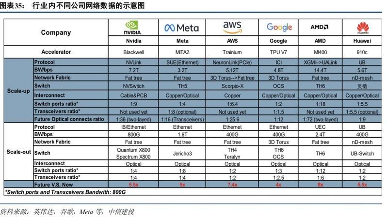
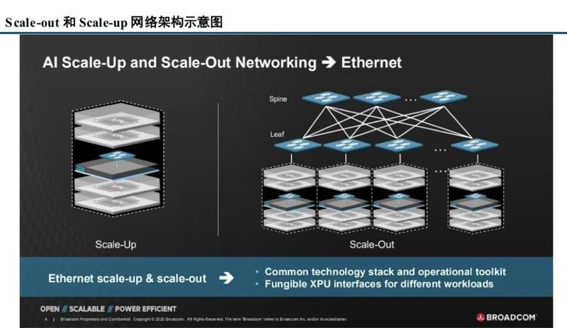

调研纪要 · 2026-11-15 新闻日报
星球 ID: 28855458518111 | 共 171 条帖子 | 精华 47 条
| 查看研究积累
强制同步到研究积累
全部 计算机 电子 机械设备 基础化工 电力设备 其他 非银金融 汽车 轻工制造 宏观策略 通信 建筑材料 传媒 煤炭 医药生物 家用电器 环保 食品饮料 美容护理 石油石化 交通运输 房地产 银行 公用事业 有色金属 建筑装饰 纺织服饰 国防军工
书签
端侧板块推荐：#月/季度级别主题趋势明确，关注恒玄、豪威、亿道、漫步者
端侧板块推荐：#月/季度级别主题趋势明确，关注恒玄、豪威、亿道、漫步者
核心逻辑：云端AI叙事承压，跷跷板逻辑下端侧作为受存储压制板块改善预期明确（基本面底部，坐等明确上行拐点），且目前#端侧高标乐鑫科技放量突破前高就是明确信号， 看好月/季维度端侧的主线行情。
近期系统跑了端侧调研，尽量提供全局视角供参考~
品牌公司：
1、#传音：手机，Q4旺季业绩同环比增长明确；且后续若存储实际跌价开启，盈利有剪刀差增厚预期（售价提上来后有粘性，成本下降）。26年37-38亿利润20倍PE，27年稳健拍小幅增长。
2、#漫步者：耳机，Q4环增明确（旺季），27年国内业务在品线梳理后恢复增长，海外业务稳增20-30%。110亿市值25亿类现金资产，26年5亿不到27年看5.5-6亿利润，估值性价比突出。
3、#影石：影像，Q4旺季环增，物理AI（全景相机采集环境信息）+机器人+AI眼镜概念全包圆；且基本面也有边际改善，大疆涨价缓解价格战，费用也会有改善预期，经营性单季度扭亏可期。27年 2倍PS
4、#绿联：消费电子周边及NAS。反直觉的点是3C配件整体行业增速和手机大盘解耦。拔估值的NAS业务，受存储涨价需求增长略被压制，同样有改善预期，27年20倍PE，对应的是30%-40%难得稳增长。
IC公司：
1、#恒玄： Q4恢复同增，27年6100新品在大客户眼镜、手表端导入预期最强
2、#豪威： Q4环比稳健，OAI CIS独供的稀缺标签
3、#汇顶： Q4环比稳健，Q4海内外客户端侧新品千万级销售额，营收弹性5%-10%
4、#乐鑫： Q4环比稳健，端侧板块的高标识标的，率先放量新高
5、#星宸、富瀚微： 同样是AI眼镜+物理AI的肌肉记忆票，近期因存储调整完之后估值到极具吸引力的位置。
代工公司
1、#亿道：端侧卖水人定位稀缺，XR、AI眼镜前几轮行情的标签票，且26年业绩拐点明确（约2.5亿），27年3亿+20倍不到。
总结：产业龙头建议关注#【恒玄科技】、【豪威集团】，弹性标的建议关注#【亿道信息】、【漫步者】。更多标的欢迎交流。
风险提示：阶段性流动性风险
本轮资金面出清进程跟以往有何不同？
本轮资金面出清进程跟以往有何不同？
1. 过去市场顶部区域往往伴随主动权益基金发行放量，而本轮则集中于部分存量产品申购。
2015年和2021年行情高点附近，偏股基金都出现过一轮集中发行，2015Q2和2021Q1，偏股基金新发规模分别达到3186亿元和5645亿元，而本轮通过新基金在高位入场的资金明显减少，本轮发行较多的2026Q1只有1051亿元，二季度回落至812亿元。此外，上一轮行情2021Q1时，存量偏股基金整体还能净流入292亿元，本轮高点所在季度（2026Q2）已经净流出1899亿元；本轮存量偏股基金的净申购集中在少数产品，科技是其中最主要的方向。
2. 以赛道和“固收+”申购为主要增量的结构，与以新发基金为主要增量的结构，在市场调整后的赎回行为有很大不同，本轮的“固收+”放量很像2015年的“打新”产品放量。
2025Q1以来，公募固收+已连续7个季度获得净申购，今年中报披露的A股持仓中，其TMT持仓合计占44.2%，折合固收+基金净资产的5.2%。即使在整体含权仓位较低的固收+中，申购资金也更偏向股票持仓集中于科技的产品，名义上是固收，但此类产品通过增加科技股持仓阶段性地获取了明显超越固收产品的超额回报。本轮“固收+”的放量和2015年打新基金放量有相似之处，真实的风险收益特性很容易被阶段性的市场行情掩盖，“赛马机制”下，低权益仓位也同样掩盖了真实的波动风险。
3. “9.24”以来大量低风险偏好且自上而下做配置的绝对收益资金流入权益市场，风控和止损行为比基民和散户更为果断。
本轮行情的增量资金主要是绝对收益资金，保险、年金等主体并不总是“长钱长投”，季度和年度考核周期、权益仓位上限规定、偿付能力约束及回撤止损机制等，使其在市场快速下跌时可能存在被动降仓需求，这一点在今年3月、9月末的市场波动中都有一定体现。相反，上一轮行情主要的增量资金是新发基金放量（基民流入）和散户大量流入，一旦市场快速下跌，持仓周期反而可能会拉的很长。此外，此轮行情中加大权益配置力度的资金，大多数是遵循“大逻辑、大趋势”的自上而下的资金，个股层面定价能力偏弱，市场容易呈现出“全攻、全守”的特征，这也使得在海外市场仍然十分有效的行业轮动策略，目前在A股几乎完全失效。
4. 多头量化类产品规模基数远超过往，未来超额和规模的边际变动对市场成交量可能非常敏感，成交的趋势性收缩对极高估值的小微盘是慢性损伤。
目前国内私募基金量化股票策略（量化选股+指数增强）的规模持续增加，最新的管理规模约为1.91万亿元。在2022~2023年主动型产品表现不佳的阶段，量化产品普遍跑出了正超额，规模也不断扩大，成为渠道端几乎唯一“好销”的产品。2024年到现在，多头量化产品规模放量接近3倍，市场日均成交放大3.22倍，过程中万得微盘股指数累计上涨74.2%，消耗了市场大量的流动性。但随着市场成交的持续收缩，可能已经不足以支撑接近2万亿规模的多头量化产品整体跑出超额，大概率会经历一个整体超额持续回落、产品优胜劣汰、总规模缓慢收缩的状况。
5. 基于上述分析，可以得到以下推论：1）本轮机构大票的调整速度很可能远快于过往，筹码出清速度也会远快于过往，因此市场流动性“失血”不会像过往一样漫长，反而可能短平快。2）展望后市，真正有持续“失血”压力的更有可能是小微盘，伴随着市场成交额中枢的下移，不少量化产品可能会因为收益率下滑而在竞争中被挤出。3）“避开机构票”可能是一个短期有效的筹码博弈策略，但是有效期应该不会很长，明年机构大盘股相对题材小盘股大概率会更出色，因为出清会更早完成。
周末没啥王炸利好，最大的利好可能是老吴表示，要评估和研究量化和减持监管安排！另外老黄离职的热度还是很高，对全球AI可能会继续带来冲击。
周末没啥王炸利好，最大的利好可能是老吴表示，要评估和研究量化和减持监管安排！另外老黄离职的热度还是很高，对全球AI可能会继续带来冲击。
这周消息少，但下周政策大消息很多：
1、APEC峰会18—19日在深圳举行，中美俄元首是否会晤备受关注。
2、下周三英伟达，将迎来黄仁勋离开后的首份财报。
3、Anthropic预计将于下周四登陆纳斯达克 这是衡量AI热度的另一个温度计。
4、美联储19日凌晨公布10月议息会议纪要，会影响12月加息。
题材发酵比较多的，SpaceX首次实现筷子夹飞船，关注商业航天；英雄联盟全球总决赛中国战队夺冠，关注游戏、电竞方向；创新药进医保创新高，关注创新药。另外两大主升板块人形机器人和AI短剧，周末也有一些催化！
还有一个明牌，就是国产芯片对英伟达的替代（核心是国产GPU），这块从长期来说确实是利好。但短期可能有反复，建议分歧低吸为主，不用当做主升赛道去看待。而AI硬件+海外链，现在各种鬼故事，大家抄底还是要谨慎一些。
整体来看，由于A股上周五大跌，仅有765家个股红盘。加上美股也调整，周末大家对市场情绪并不高，各种散户群也静悄悄！这一般是变盘的前兆了，下周指数是向下打出新低，还是向上绝地反击呢。
领导好，汇报一下本周的投资思考：
领导好，汇报一下本周的投资思考：
1）维持看好出海链。本周TCL电子发布3Q报表，结果偏向预告上沿。从分拆来看，在大屏显示稳健增长的同时，互联网业务（海外收入前三季度yoy+86%，占比至55%）与中小尺寸显示（彩色墨水屏手机爆款）提供支撑。考虑索尼合并运营在即，继续首推。
综合来看，【出海链】我们继续看好出海链，标的方面【TCL电子】、【绿联科技】、【石头科技】、【美的集团】、【海尔智家】、【极米科技】、【海信视像】等。
2）国内需求延续弱复苏。从奥维线上零售量数据来看，大家电：26Q4QTD（26/09/28-26/11/08）期间空/冰/洗/彩分别-8%/+4%/-3%/-11%（10月+0%/+4%/+2%/-4%），小家电：扫地机/洗地机分别-19%/+10%（10月-1%/+1%）。考虑到三季度行业集中实施去库存使得内销出货数据大幅负增长（产业在线口径），我们预期4Q出货端环比3Q有所恢复，但asp仍是当前关注的核心。由于成本yoy仍有在高位，因此价格是否能回升对行业毛利率改善至关重要。
3）白电红利风格占优。本周美的+1.1%，格力+2.4%，跑赢沪深300-0.7%。我们认为更多来自市场对于低风险分红类资产的风格倾向，如下周外部环境不确定性仍大，则红利风格可能延续。标的主要为【美的集团】、【格力电器】。
4）部分转型类公司估值已经较低。由于科技方向承压，部分转型类标的估值压降至低位，如盾安环境（26PE 11x）、安孚科技（对应南孚利润10x左右）等，如后续科技情绪回暖，则应有底部反转机会。
以上，
财通家电 孙谦
New首发❗️东吴环保·朔元撷理【电动矿卡深度】矿电协同释放经济性，纯电矿卡迈向批量应用 #寻找成长与资源中的反弹先锋
New首发❗️东吴环保·朔元撷理【电动矿卡深度】矿电协同释放经济性，纯电矿卡迈向批量应用 #寻找成长与资源中的反弹先锋
#电动矿卡：政策约束强化+矿企降本需求共振。矿山机械设备规模已接近工程机械规模，2025-2035市场空间CAGR=5.6%，其中露天矿山设备占26%，矿卡占露天设备60%，是最主要设备，2025年预计市场空间1450亿元+。绿色矿山政策加码+头部矿企积极双碳+经济性优势彰显，矿卡电动化加速。
#经济性优势突出：产业与能源降本加速电动化渗透。年产10万吨露天铜矿，中性能源价格假设（电价0.7元/度，油价7元/L），矿山年综合成本29.2亿元，其中能源成本5.1亿元（占17.5%）。考虑矿卡配置方案（配置65台，柴油单价1850万，纯电单价1100万），使用年限15年，单位公里耗能分别3L柴油/16度电，柴油矿卡总体拥有成本（TCO）3.8亿元，电动化后电动矿卡TCO下降至2.5亿元，矿卡环节实现降本34.5%，并带动矿山综合降本4.5%。1️⃣产业爆发电动矿卡成本进一步下降，驱动经济性提升趋势明确。2️⃣矿山绿电兼具稳定性和经济性，将进一步释放纯电矿卡降本潜力。美伊冲突以来（2/28-10/28），国内（北京0号柴油零售价）与海外（圭亚那低硫柴油零售价）油价分别从6.8元涨到8.4元，5.4元涨到10.2元。油价越高，矿山绿电+矿卡电动化经济性优势越强。
#电动化渗透率：渠道、技术与产品周期构筑核心壁垒。全国市场来看，2024年纯电及其他新能源比例仅13%，2025年纯电比例已跃升至20%。全球市场来看，2025年全球矿卡销量约4.75万台（同比+4.2%），其中刚性矿卡约3300台。#需求稳步增长+电动化趋势明确。纯电矿卡，尤其是纯电刚性矿卡仍处于产业化初期，正逐步迈向批量应用。重点关注#渠道 矿山场景资源决定验证效率与订单转化能力 #技术 大吨位、低能耗与极端工况适配能力构成核心差异，是重点推进突破的方向 #产品周期 新品发布加速，纯电矿卡加速向大吨位、无人化、系列化演进。具备产品先发优势与系列化能力的企业有望加速提升市场份额。
#投资建议： 关注具备“能源供给+矿山场景+电动装备”综合布局的企业：【紫金龙净】【博雷顿】【新筑股份】；同时关注拥有技术、渠道以及规模化运营经验积累的头部矿山装备企业：【徐工机械】【三一国际】【同力股份】【北方股份】。
#风险提示： 电动化进度不及预期、矿山电力基建进度不及预期、竞争加剧等
-----------------------
袁理/任逸轩/陈孜文/田源
[玫瑰]11月美国电动高夫球车市场跟踪
[玫瑰]11月美国电动高夫球车市场跟踪
#数据口径：本数据主要来自美国头部高尔夫球车交易平台Golf Cart Resource，覆盖300家左右经销商，主要跟踪各品牌经销商端表现，数据不代表终端实际销售，或受到备货节奏、季节性等因素影响，仅供趋势性参考。
#库存趋势：从样本整体看，前五大品牌（经销商端）库存市占率达56%，其中涛涛车业旗下Denago与TEKO市占率合计达18%；从边际变化看，环比10月，前五大品牌中仅Dach（经销商端）库存有11%较明显增长，其余品牌库存量环比基本稳定。
#渠道变化：11月前五大品牌中，仅有Dach与TEKO经销商数量环比10月增长，6-10名品牌经销商数量环比均有所增长，或反映行业整体竞争持续 ；涛涛车业旗下两大品牌Denago与TEKO的经销商数量总和环比10月保持稳定。店均库存方面，行业11月整体与10月基本持平，较6月均有所下降，或主要系天气转凉，行业逐步进入淡季所致。
中国巨石与中材科技拟回购股份注销，关注低估值高分红的消费建材龙头
中国巨石与中材科技拟回购股份注销，关注低估值高分红的消费建材龙头
[太阳]油价高位回落，关注消费建材底部向上弹性。当前消费建材处于周期底部，地产处于弱现实强预期的阶段，需求端新房延续下滑趋势，但二手房的成交回暖逐步拉动存量房市场的需求，进入存量房时代，零售渠道的布局显得十分重要，今年以来部分消费建材龙头零售收入占比提升，经营质量逐步改善，市场份额逐步提升，部分消费建材龙头逐步显现α属性，随着近2周原油价格高位回落，成本端压力缓解，消费建材盈利弹性或释放，关注低估值高分红的消费建材龙头。
[太阳]中国巨石与中材科技拟回购股份注销，积极维护公司价值与股东权益。中国巨石发布公告，拟回购1.5-2.5亿元公司股份，回购价格上限为49.15元/股，回购股份全部注销以减少注册资本；同样，中材科技拟回购2-2.5亿元公司股份，回购价格不超过62.7元/股，回购股份全部注销以减少注册资本；电子布龙头企业此举积极维护公司价值与股东权益。11月电子布提价后暂稳，当前电子布延续供不应求的格局，中高端产品D、E系列细纱及布供不应求，且电子布到CCL涨价链传导顺畅，预计后市电子布将延续年初以来逐月提价的趋势，电子布企业业绩亮眼，经过前期调整后，当前位置电子布龙头估值回到年内低位，随着电子布涨价落地，电子布龙头业绩增长的确定性较强，重视回调后的反弹行情。
[太阳]本周浮法玻璃库存下降，价格环比延续上涨，光伏玻璃新价逐步落实中，关注玻璃冷修进度以及涨价节奏。
[福][福][福]【本周配置建议】
主线一：中国巨石与中材科技拟回购股份注销，重视电子布回调后的布局机会。推荐【中国巨石】、【国际复材】、【长海股份】、【中材科技】，建议关注【宏和科技】。
主线二：原油价格回落，成本压力缓解，关注低估值高分红的消费建材龙头。建议关注【兔宝宝】、【青鸟智控】、【三棵树】、【东方雨虹】、【科顺股份】、【北新建材】、【伟星新材】、【悍高集团】（与轻工组联合覆盖）等。
主线三：浮法玻璃价格环比延续上涨，关注供给收缩进度。推荐【旗滨集团】，建议关注【凯盛科技】、【信义玻璃】等。
主线四：关注加速出海以及投资转型的水泥龙头企业。推荐【华新建材】【上峰材料】等。
⭕️“十五五”新型储能规划首提2030装机目标，重点强调系统运行费改革，源网荷侧储能同步发展
⭕️“十五五”新型储能规划首提2030装机目标，重点强调系统运行费改革，源网荷侧储能同步发展
🚀核心观点：首提2030装机目标，折合年均新增100GWh以上（通常为底线目标）。强调“研究优化系统运行费分摊方式”，各省浮动政策有望陆续出台，提升储能运行经济性。#明年国内装机有望看到300GWh左右。
➡亮点1：首提2030装机目标
文件提出到2030年全国新型储能装机达到300GW，平均储能时长3小时左右，对应约900GWh。截至今年Q3末国内累计装机约167GW/435GWh，假设年底累计装机达到500GWh，则2027-2030年均新增装机不少于100GWh，#此为底线目标。
同时提出其中新能源大基地配储50–60GW，电网侧独立储能140GW，同时#推动配电网储能、研究电网替代储能，#可能为电网公司投资储能打开空间。
➡亮点2：研究优化系统运行费分摊方式
文件提出研究优化系统运行费分摊方式，#预计各省将陆续出台系统运行费参与分时电价浮动， 参考山东和陕西先例，有望显著降低储能运行负担，#预计提升经济性2pct（全投资）/5pct（资本金）。
➡亮点3：鼓励新能源配建储能一体化参与市场交易
鼓励新能源按需配置新型储能，鼓励配置新型储能的新能源大基地作为一个整体，共同参与跨省区中长期市场。#新能源配储重新受到重视。
🚀点评：系统运行费改革箭在弦上，明年储能经济性有望改善。
山东、陕西系统运行费纳入分时浮动，有望向全国推广，提升储能运行经济性。同时随着近期煤价上涨带动中长期电价提升、新能源新签机制电价提升，明年国内装机有望实现较大增长，#有望看到300GWh左右，重点关注#宁德时代、海博思创、阳光电源、上能电气、鹏辉能源、亿纬锂能等。
------------------------
十五五储能实施方案出台，经济性有望提升
十五五储能实施方案出台，经济性有望提升
[太阳]11月13日，国家发改委、国家能源局印发《
"十五五"新型储能实施方案 ↗ 》 。方案明确总体规模要求、多元应用场景，推动储能参与市场，并完善容量电价及系统运行费分摊方式等，我们看好在政策的持续推动下，储能价值得到更好体现，经济性提升推升储能装机需求。
[玫瑰]明确储能装机下限，拓展多元应用场景。方案提出到2030年，全国新型储能装机规模达到300GW（新能源基地配储50-60GW、电网侧独立储能140GW），平均储能时长3小时左右，此目标与《
新型能源体系建设“十五五”规划 ↗ 》 中目标相符，但考虑到电力系统实际需求及新场景应用，我们预期实际储能需求或远超该保底目标。储能应用场景方面，除了新能源大基地/海上风电配储、电网侧独立储能，同时鼓励探索工业园区低碳用能、虚拟电厂聚合应用、AIDC可靠用电等场景下的储能多元创新应用场景，有望打开远期储能需求潜力。
[玫瑰]推动储能参与市场，完善容量电价及系统运行费分摊方式。政策明确完善电能量市场及辅助服务市场相关机制，推动新型储能公平参与中长期、现货市场，探索备用、爬坡等各辅助服务市场，充分发挥储能调节价值。同时政策明确在清单制下建立独立储能容量电价机制，并研究优化系统运行费分摊方式。考虑到近期如陕西等省份已将系统运行费改为分时峰谷浮动，我们预期或有更多省份推出相关政策，大幅降低独立储能充电成本、提升实际套利价差，利好储能经济性及中长期需求。
[玫瑰]我们认为本次方案提出储能多元化应用场景拓宽远期空间，同时提出完善储能价格机制、优化系统运行费分摊方式，有望大幅提升独立储能实际套利收益，推动储能装机需求。我们看好2027年中国储能需求仍保持稳健增长，推荐储能龙头宁德时代，海博思创。
风险：各省容量电价及配套细则落地进度不及预期；储能装机需求不及预期；行业竞争加剧导致盈利承压。
十全九美——为太空算力铺平道路20261115
十全九美——为太空算力铺平道路20261115
星舰二级飞船实现回收，伟大依旧无需多言，#完全复用为算力上天奠定基础❗️
测算了一下，在一级火箭回收50次，二级火箭回收20次情况下，星舰运力成本可降低至100+美金/KG，#太空算力基建成本正快速趋近于地面，甚至未来会低于地面❗️
按AI1卫星Vehicle Efficiency为75kW/ton，在星舰换装猛禽4发动机后，#完成1GW太空算力建设只需66次发射❗️
#未来已来，十月第一时间跟大家讲本轮航天叙事聚焦【太空算力】，算力上天趋势明确❗️
#优选北美链，【西部材料】、【宇晶股份】、【蓝思科技】、【迈为股份】；
#国内-太空算力，【顺灏股份】、【震裕科技】、【佳都科技】、【钧达股份】；
#国内-火箭卫星，【飞沃科技】、【西测测试】、【斯瑞新材】、【昊志机电】。
#相信算力上天趋势【华福空天&科技】
【东吴电新】SpaceX首次塔捕成功星舰飞船，运力降本在即、太空光伏有望受益!
【东吴电新】SpaceX首次塔捕成功星舰飞船，运力降本在即、太空光伏有望受益!
[太阳]事件：北京时间11月15日，SpaceX星舰第十五次试飞的上面级飞船返回得克萨斯州星港，在完成着陆点火和姿态翻转后，成功被发射塔机械臂捕获；#为人类首次成功回收入轨火箭上级。此次飞船此前已完成26颗三代星链卫星部署，但超重型助推器回收未能成功，因此本次任务未实现两级全部回收。
#运力启动进一步降本、太空算力持续推进。 SpaceX太空算力计划稳步推进：1）运力端：随本次星舰飞船回收成功，27年初有望复飞已回收飞船；此次虽未实现助推器回收、但此前星舰已多次回收助推器，星舰持续复用可将发射成本降低至200美金/kg以下，大幅降低运力成本。2）卫星端：预计27Q3首批Starmind卫星（峰值功率250kw）入轨、27年底Gigasat工厂投产，28年规模化部署起步，远期100万颗算力卫星，太空蓝图有望逐步落地。
#投资建议： 设备产能陆续启动，星舰飞船回收成功、运力有望复用降本；太空光伏链有望供货受益：推荐帝科股份（浆料专利壁垒、对接海外厂商）、钧达股份（SCPI膜海外持续对接、卫星在轨数据稳定）、福斯特（光伏胶膜龙头、CPI膜前瞻布局）、聚和材料、海优新材，关注蓝思科技、东方日升、琏升科技等。
风险提示：商业航天进展不及预期；钙钛矿应用阶段组件效率、寿命不及预期等
<浙商食饮|张潇倩> 食饮周观点：奶价近期趋势上涨，i茅台公布新规，仍重点推白酒+乳制品（20261115）
<浙商食饮|张潇倩> 食饮周观点：奶价近期趋势上涨，i茅台公布新规，仍重点推白酒+乳制品（20261115）
本周沪深300/食饮/白酒涨跌幅分别-0.2%/-1.6%/-1.4%，其中肉制品/预加工食品涨跌幅为正（+0.1%/+0.1%）。A—古井/泉阳泉/巴比涨幅居前（+6.7%/+3.2%/+2.7%），H—中粮/现代/优然涨幅居前（+6.6%/+6.3%/+2.9%）。
1️⃣白酒：继续居前重点推荐板块
一、本周调研：① 老窖低度/中低档相对优，预计后续业绩不会更差，新一轮分红规划仍在研究；② 今世缘26年收入同比基本持平，预计27年增速好于行业平均；③ 舍得继续稳批价/发力宴席大众价位，目标收入企稳转正；④ 金徽27年省内营收持平/省外维持20%以上增速预期积极，28年前规模优先、利润后置。
二、投资建议：基于持仓比例低/动销处降幅收窄通道/酒企业绩陆续由负转正，“均衡配置”下，前期预期够低的白酒板块或持续将迎资金配置性流入，我们仍持续重点推荐白酒板块。标的方面，重点推荐贵州茅台、古井贡酒及增速相对居前的今世缘、迎驾贡酒等。
2️⃣大众品：重点推荐个股阿尔法+乳制品板块
一、本周调研：① 巴比预计27年收入端增速加速，短期享猪价成本红利；②李子园量贩占比提升，27年关注委外加工部分增量；③ 重啤高分红有持续性，27年关注大宗成本端及销量变化；④香飘飘27年预计成本持平/费用稳健保守，量贩为核心增量；⑤中炬预计27年收入稳健，期待味滋美贡献；⑥千禾味业27年趋势向好，期待利润弹性；⑦ 西麦10/11月发货正常延续Q3趋势。以上中，建议积极关注巴比（加速）/中炬（稳健向好）/千禾（期待拐点）/西麦等。
二、核心成本跟踪：近期鱼粉/PET/小麦/铝/生鲜乳/豆粕/棕榈油等成本同比提升，猪肉/玻璃/白糖/瓦楞纸等成本同比下降。截止11.5主产区生鲜乳3.11元/公斤（+3%）。
三、投资建议：大众品成本/费用等压力明显+需求端偏弱，继续重点推荐竞争格局改善&成本压力相对轻的乳制品。投资思路包括① 强α具备市占率提升+成本对冲能力的公司（燕啤/农夫/安井/中炬/巴比/西麦/H&H/百龙等）；② 重点推荐乳制品产业链（下游：伊利/蒙牛/新乳业/妙可，上游：优然/现代/天润）；④经营向好的红利股：伊利/颐海。
--------------------
浙商食饮 张潇倩Iris/孙天一/杜宛泽/何宇航/隋牧含/杨美云
【广发非银】稳市机制下把握非银板块配置机会
【广发非银】稳市机制下把握非银板块配置机会
上周宽基 ETF 资金有所流出，市场情绪偏弱。本周将召开APEC会议，稳市机制落实推进。非银板块估值、机构配置仍处于低位，整体具备相对/绝对收益基础。
证券：估值处于低位。互换便利提供的增量资金正逐步到位、买入，有望实现相对稳定的套利交易。板块估值距离历史极限仅约10%，具备了相对收益的扎实基础。配置主线：低估值高 ROE 头部券商（中金 H、国泰海通 AH、中信 AH、华泰 AH）；科技融资弹性标的（招商、财通）；财富管理特色券商。
保险：红利防御属性彰显，静待开门红数据。弱市环境下稳定的DPS成为投资避风港，部分险企股息率具有吸引力。险企四季度聚焦开门红渠道预热与产品储备，后续重点跟踪新单、队伍产能。A 股推荐平安、太保、国寿、人保、新华，H 股推荐国寿，平安，财险，太平，友邦。
多元金融：红利资产配置价值稳定，维持推荐渤海租赁、江苏金租等。
另外，本周在上海、杭州、南京开展线下调研。
欢迎交流：陈福、刘淇、李怡华（多元）、王京灵（保险）、耿张逸（券商）
周更新：关注低位院线轮动+互动影游催化
周更新：关注低位院线轮动+互动影游催化
#观点重申：先推仓位再择优个股、内部轮动加快，#买新不买旧、买低不买高
1）院线：低位补涨，贺岁档+春节档临近，院线新政后丰富内容供给，大票平铺、小票超额
2）互动影游：GTA6将11/19上线，利好网吧及游戏（顺网、盛世）；世界模型发布在即，利好互动影游(华智数媒的《
天坑追匪 ↗ 》11/24上线)
3）影视：腾讯“看一看”内测短剧入口，海外市场高增，龙头九州趋势验证，看好短剧出海（华是科技出海加速）
4）国企改革暗线走强：上海电影、中信出版、华智数媒等
📮【申万计算机周报】Anthropic IPO材料更新！Fable 5.2发布！
📮【申万计算机周报】Anthropic IPO材料更新！Fable 5.2发布！
#本周周报重点：1）Anthropic IPO路演材料更新；2）Fable 5.2发布
#本周Anthropic更新IPO路演材料，重点关注：ARR、财务指引、客户+应用拓展
[礼物]26年#10月年化收入达810亿美元，环比14.1%，增速优于9月。推测主要由于新模型降本带动用量+Coding外新场景开始贡献。原本年底1000亿ARR未必达到（11-12月长假期）。
[礼物]新增披露长期目标#35%+调整后经营利润率，算力费用率降至45-50%，营销费率降至7-10%，人员及其他费用率降至7-10%。
[礼物]企业支出渗透仍有空间，上市财富500强客户对Anthropic支出占其总费用平均不足0.1%。存量+增量并行，cc前5%支出用户环比增约50%，#前五以外的客户贡献79%收入。
[礼物]Coding延伸广泛知识工作。Cowork发布后同等时长的年化收入曲线领先Claude Code。流程自动化开始进入企业核心业务。#公司重点布局生命科学、机器人、网络安全应用等新场景。
#发布Fable 5.2，能力提升、成本下降。
[礼物]输入/输出价格降至8/40美元/百万Token，降价20%、生成速度最高提升30%。FrontierCode成绩32.4%→49.1%。该评测中，较低思考投入下以约半数费用达到Opus 5.5近似成绩。科研工程突破亮眼，完整RSI仍待验证。
#总结：Anthropic年末年化收入规模或略低于此前预期，但新模型的降本换量策略、企业向更多岗位和流程扩用、以及生命科学机器人等新业务拓展，有望提升未来单客收入并带来新增需求。
【近期周报】
1107：世界模型迈向交互推演，物理AI生态加速协同！#小程序://申万宏源研究/Vo7VxV8CnvyNy6l
1031：26Q3板块业绩回顾+持仓分析！Anthropic递交S-1招股书！#小程序://申万宏源研究/gYHkDvD3odhz3HF
1024：AI+EDA从单点走向全流程!DeepSeek公开新推理方案#小程序://申万宏源研究/UTRVEKyMGLBA4Bi
1017：海外大模型ARR再讨论！液冷芯片级散热趋势！#小程序://申万宏源研究/v3I4rxEFcziFSFr
📮【申万计算机】本周Anthropic机器人操作能力大幅突破！两条“大脑”路线同步验证！20261115
📮【申万计算机】本周Anthropic机器人操作能力大幅突破！两条“大脑”路线同步验证！20261115
🔥#本周变化：机器人“大脑”持续密集突破
[玫瑰]Anthropic Fable 5.2机器人仿真成功率达64.9%，超同一测试设置下GPT-6 Astra及上一代Fable 5.1两倍；OpenAI将机器人研究直接并入核心模型团队；英伟达GR00T 2强化跨本体迁移，谷歌Gemini Robotics推进工业产线验证。
🔥#两条路线同步提速、融合已有案例
[玫瑰]专用模型（VLA/WAM）提升动作精度与泛化；通用基模直接参与机器人决策。机器人智能化同时受益于具身数据训练和通用模型迭代，已到关键节点。
🔥#专用模型：数据与仿真受益
[玫瑰]通过视频、仿真及真实数据联合训练，降低新任务适配难度。关注数据采集、仿真生成与Sim-to-Real迁移。
#重点公司：索辰科技、思看科技、五一视界、海天瑞声、群核科技等。
🔥#通用基模：物理求解与验证受益
[玫瑰]基模通过动作接口、规划工具参与机器人操作，对运动规划、物理约束求解及仿真评测提出新需求。
#重点公司：索辰科技、各领军通用模型等。
[玫瑰]工业场景率先跑通“模型迭代—场景部署—数据回流”的正循环。关注#中控技术、鼎捷数智、能科科技等。
【申万传媒】游戏观点周度更新1115：AI游戏模型能力大幅跃升
【申万传媒】游戏观点周度更新1115：AI游戏模型能力大幅跃升
[玫瑰]观点更新：1）AI游戏制作能力继续突破：11.9 Anthropic发布Fable 5.2，涌现多款精致3D射击、RPG等游戏原型，AI辅助开发正从局部代码向一键生成、多环节协作推进。我们认为，玩法试错成本下降、小团队开发能力提升，有望加速游戏内容供给，进一步凸显优质内容筛选、社区分发与运营能力的价值。
2）年底新品催化密集：《
蓝色星原 ↗ 》11.26、《
白银之城 ↗ 》12.14、米哈游《
星布谷地 ↗ 》12.4、腾讯《
异人之下 ↗ 》12月、网易《
无限大 ↗ 》27.1.15。
#重点推荐【心动公司】，TapTap受益年底新品广告投放以及AI游戏爆发，#新品周期【网易】，以及#互动影游弹性标的【盛天网络】。
本周重点： 【心动】重视老产品常青属性：《
心动小镇 ↗ 》11月21日第二期“小马宝莉”联动（第一期联动造就国服+海外服双流水高峰）。《
火炬 ↗ 》公布《
刺客信条 ↗ 》联动赛季，2027年1月上线。Tap多款AI/独占小游戏：《
柚松屋 ↗ 》《伯吉的温馨厨房》
【网易】《
燕云十六声 ↗ 》全球服11.13推出周年版本，开放“滹沱”地区及新战役，加入江湖旧事、世界首领等内容，进入海外首个周年运营节点。
【腾讯】AI游戏陪伴产品“鹅次元”开启内测，支持识别游戏画面、实时语音互动；《
虚环 ↗ 》11.9开启“满月回”测试招募，《
异人之下 ↗ 》终局计费测试进行中、12月上线。
【恺英】自研、贪玩发行的《
斗罗大陆：诛邪传说 ↗ 》11.10公测前瞻，11.19四端互通公测。
【华通】《Lordrush》《Hotel Legacy》《
Top Force ↗ 》10月收入持续攀升，点点互动保持中国手游发行商全球收入榜第2，海外新品矩阵继续扩展。
【三七】10月发行商排名升至第5；《
Last Asylum ↗ 》《
Z Route ↗ 》下半年商店收入逐月提升，10月合计贡献发行商过半收入，海外SLG新品已成为重要增长来源。
【完美】《
异环 ↗ 》下一个内容高峰是27Q1的2.0大版本+4月周年庆。AI网络电影：明代抗倭题材《
弈1592 ↗ 》将上线，此前已经开发两款买断制互动影游。
【哔哩】11.14正式官宣《
三国志：王道天下 ↗ 》12.24公测，11月15日英雄联盟世界赛 旗下俱乐部BLG夺冠（时隔五年）
详情联系林起贤/夏嘉励/赵航/张淇元13916283599/王昊
[红包]【申万计算机&电子】国产算力更新261118
[红包]【申万计算机&电子】国产算力更新261118
[玫瑰]近期英伟达Megaspeed事件后、Oracle 砍单腾讯等反应海外AI芯片不确定性，国产算力成为27年大厂AI投入重要供给。
[玫瑰]国产芯片不能用于训练吗？
可以，例如美团龙猫、GLM 70B多模态模型等，明确表示使用国产卡训练。
Deepseek 于9.30日开源昇腾算子库，国芯国模耦合正持续发生。
[玫瑰]竞争格局怎么看？
算力行业仍处于高景气度，明年仍处于市场规模扩大，每家都高速增长阶段
字节自研ASIC负责人工作变动，证明AI芯片行业需要时间沉淀，产品代际性能差会持续存在。第三方GPU仍有很大的价值。
[玫瑰]各公司亮点
寒武纪：26Q3存货+预付达近140亿
海光信息：存货和预付规模仅次于寒武纪，AI CPU进展
摩尔线程：接连拿下大订单，集群能力强
沐曦股份：供应链保障充足，C600评价不错
天数智芯：天垓300 tps达到H200的1.05倍，客户明确
壁仞科技：BR20X 已点亮，客户进展顺利
燧原科技：腾讯系核心公司，新一代产品性能跃升大
新材料观点-聚焦国产链，聚乳酸&氯化亚砜提价20261115
新材料观点-聚焦国产链，聚乳酸&氯化亚砜提价20261115
#国产链： 英伟达管理层变动及美国管制升级，进一步催化国产算力链。1）电子大宗气体在年内仍有数个大项目进入招标，国内厂商份额望进一步提升#杭氧、广钢； 2）半导体封装景气度较高，材料环节硅微粉龙头产能持续加码#联瑞新材
#AI材料链： 聚焦新方向、新技术，如PTFE、陶瓷基板等，整体筹码结构更优。
#聚乳酸涨价： 11月14日国内乳酸龙头发布聚合级乳酸调价通知（年内第四次提价），新订单在现行价格基础上统一上调10%。调价落地后，聚合级乳酸罐车现货价从10200元/吨站上11200元/吨以上，刷新年内新高。#金丹科技、海正生材
#氯化亚砜涨价： 11月15日氯化亚砜价格6174元/吨，月同比10%，年同比250%，今年涨幅74.6%。不排除三氯蔗糖传导价格上涨。#凯盛新材、金禾实业、世龙实业
#个股更新： 瑞晨环保合资公司瑞瓷电子拟进军硅微粉（规划2000吨产能）+氮化铝（规划300吨产能）材料领域；主业订单能见度高，修复较为明确。
[爆竹]风险提示：需求不及预期、竞争加剧
化工品价格价差跟踪20261115
化工品价格价差跟踪20261115
[烟花]价格：本周原油价格下跌，在我们所监测的232种化工相关产品中，40种产品均价环比上涨，110种产品均价环比下跌，82种产品均价环比持平。
🌟涨幅前5：美国Henry Hub期货（15.4%）、碳铵(山西)（9.1%）、乙二醇(MEG,华东)（6.2%）、活性黑(WNN 200%)（5.8%）、天然橡胶(上海地区)（5.0%）。
🌟跌幅前5：MTBE（-13.3%）、环己酮（-12.4%）、甲苯（-11.4%）、碳四原料气（-10.7%）、工业萘（-10.5%）。
[烟花]价差：价差方面，在我们所监测的54种化工相关产品中，32种产品价差环比上涨，21种产品价差环比下跌，1种产品价差环比持平。
🌟增扩前5：顺酐法BDO价差（654）、TDI价差（462）、尼龙6-己内酰胺价差（450）、硬泡聚醚-环氧丙烷价差（385）、乙烯法醋酸乙烯价差（330）。
🌟收窄前5：己内酰胺-纯苯价差（-849）、环氧乙烷-乙烯价差（-596）、涤纶长丝-PTA-MEG价差（-545）、DMC-金属硅-甲醇价差（-504）、纯MDI价差（-463）。
[爆竹]风险提示：数据跟踪误差
基础化工：继续强Call龙头白马，聚氨酯价差继续走
基础化工：继续强Call龙头白马，聚氨酯价差继续走
[玫瑰]中信基础化工PE、PB历史分位数为23%和24%，分位数周环比增长。当前油价下跌成本端压力稍缓，部分化工品价差走扩，整体化工品价格、价差分位数尚处于底部。
1️⃣#细分龙头白马。 万华华鲁宝丰新和成华峰扬农卫星PE-TTM约为12/14/9/11/14/18/8X，分别处于1995年以来的8%/34%/0.1%/11%/16%/23%/1%的历史分位数；PB-MRQ分别为2.0/1.5/2.7/2.3/1.6/1.9/2.0X，分别处于3%/16%/16%/20%/15%/9%/24%的历史分位数。
2️⃣#聚氨酯：本周装置变动不大，韩国锦湖41万吨MDI装置和印度GNFC 5万吨TDI装置处于检修状态，纯MDI/聚合MDI/TDI价差分别为6278/5478/4692元/吨，环比+23/+323/+561元/吨。
3️⃣#化纤产业链： 10 月纺织服装出口 261.1 亿美元，同比+17.3%。#涤纶： 本周涤纶价差收缩制356元/吨，环比-836元/吨，开工率73.4%，环比持平，厂内库存可用天数为25.5天， 环比+7.6%。#氨纶 周度开工率为88.3%，环比持平。毛利润-296元/吨，周环比+25%。#染料 还原物、H酸报价延续高位，下游印染开机率55%，静待下游库存消化。
4️⃣#氟化工： R22/R32最新报价1.7/6.5万元/吨，周环比-5.6%/持平；价差0.5/4.7万元/吨，周环比-16.0%/持平。Q4三代制冷剂外贸市场环比回暖，后续关注出口签单节奏。
5️⃣#农化板块： #磷 本周磷矿石均价986元/吨，环比持平，同比-3%，整体稳定。#钾 本周氯化钾均价2870元/吨，环比-1.3%，同比-11.5%，11月第一周港存约475.5万吨，较上月底环比+30.5万吨，继续创新高，当前农需处空档期，预计11月价格以低位震荡为主，待冬储集中释放后有望企稳，重点关注港口去库与复合肥开工回升信号。#农药 冬储节点刚需订单成交，草铵膦报价继续向上超过8万元/吨。
[爆竹]风险提示：成本大幅波动、需求和供给约束不及预期
周观点：双11顺利收官，珀莱雅卫冕天猫GMV排名第一20261115🔥
周观点：双11顺利收官，珀莱雅卫冕天猫GMV排名第一20261115🔥
[烟花]据星图数据双十一报告及天猫美妆官方公众号显示，2026年双十一（10月7日—11月11日）美妆GMV达1376亿元，同比+3.85%，增速回落，转入存量竞争；其中美容护肤1029亿元、同比+3.83%，香水彩妆347亿元、同比+3.89%。品牌端：珀莱雅本次双11成功卫冕天猫护肤GMV榜第一，连续四年蝉联榜一；兰蔻、修丽可等国际品牌位列2-3位。国货薇诺娜排名12位 ，毛戈平18 位，自然堂19位 ，可复美20位。预计后续国货美妆在短句营销、中国特色成分以及国潮文化底蕴等方向，取得突破性进展。
[烟花]本周重点回顾：
1️⃣珀莱雅（603605）点评：多品牌矩阵蓄力，静待盈利释放。26年前三季度营收76.27亿元，同比+7.46%；归母净利润12.56亿元，同比+22.46%；26Q3营收22.53亿元，同比+29.76%；归母净利润0.88亿元，同比-61.18%。
2️⃣若羽臣（003010）点评：业绩维持高增，自有品牌+品牌管理双轮驱动。26年前三季度营收35.19亿元，同比+64.58%；归母净利润2.31亿元，同比+120.92%；26Q3营收12.34亿元，同比+50.56%；归母净利润0.64亿元，同比+96.90%。
3️⃣诺斯贝尔（300132）点评：主业盈利韧性充足，看好高附加值订单放量。26年前三季度营收18.21亿元，同比+17.25%，归母净利1.07亿元，同比-3.01%；26Q3单季营收7.14亿元，同比+15.88%，归母净利润0.51亿元，同比-38.71%。
[烟花]本周新闻：资生堂 2026 年前三季度净销售额 7411 亿日元，同比 + 7%，核心营业利润 675 亿日元，同比大增 124%，营业利润扭亏，实现近五年营收、营业利润首次双增。增长由 CPB、香水、怡丽丝尔等品牌驱动，CPB 在美洲、怡丽丝尔在亚太表现突出。区域上，#中国及旅游零售业务增速 11.9% 领跑，国内电商企稳、海南免税修复；日本本土市场小幅下滑。
[烟花]投资推荐
1⃣核心推荐：珀莱雅、毛戈平、上美股份、林清轩、上海家化
2⃣期待业绩增速边际改善的：润本股份、巨子生物、贝泰妮、丸美生物、华熙生物、四环医药、美丽田园医疗健康
3⃣电商代运营+个护自有品牌推荐：若羽臣、水羊股份、青木科技、壹网壹创
周观点：本周发布策略报告，看好高端运动户外、红利资产2026/11/15☕☕
周观点：本周发布策略报告，看好高端运动户外、红利资产2026/11/15☕☕
✔纺织：本周发布年度策略报告，2027年看好运动制造利润率拐点、上游纺织出海全球化。①中游运动制造供需节奏错配，是导致现阶段业绩承压的核心原因。但如果后续下游订单出现回暖，已储备新产能将变成大规模承接订单、抢占供应链份额的优势。②过去一年澳毛价格大涨，更多反映供给端减产，而美丽诺羊毛正在成为运动户外材料新星，供给端恢复周期或加长，叠加需求端跑量级产品出现，推荐相关羊毛供应商。
✔服装：总结2026年双11服装销售，设计审美驱动生意增长，国产品牌越过千元价格带集体登榜。行业增长方式发生变化，不再单纯追求卖得多，而把重心放在“卖得值”。国货高端品牌在高客单价带集体放量，实打实量价齐升。比音勒芬、之禾、山下有松、裘真、PANE等一众现象级国货品牌，均呈现高增长。展望2027年，看好本土高端服饰、运动户外细分垂类品牌。
[玫瑰]【10月数据更新】
【地素时尚】10月电商 GMV+22%，经销中单增长，直营低单增长。
【江南布衣】高单位数下滑。
【歌力思】LAUREL持平略增，SP持平略降，IRO个位数下降。歌力思个位数下降。
【海澜之家】10月主品牌国内线下微降2-3%，线上保持正增长。
【森马服饰】据11/1统计，10月零售-7.6%（剔除退货后-12.97%。），其中森马-9.1%，巴拉-12.5%，其他品牌+20.1%。
【罗莱生活】10月整体表现不佳，线上GMV略降，实际收入降幅更大。双11全渠道发力实现同比小双位数增长。
【水星家纺】10月表现承压，双11预售阶段跑赢行业大盘。
【雅戈尔】10月主品牌线下自营走弱，双11电商表现不佳。
【锦泓集团】10月TW、云锦两位数下滑，VG个位数下滑。11月至今TW、VG已恢复持平或微增。
【伟星股份】10月接单同比增长10%以上。
【新澳股份】10月羊毛接单量+低个位数增长，销量持平，均价+高双位数；羊绒接单、销量均+30%以上，均价+高双位数。
【百隆东方】10月出货-5%，接单持平。10月ASP环比增长，同比增长。
[玫瑰]【下周活动预告】
1️⃣罗莱生活@南通智慧产业园调研
🕐时间：11月17日（周二）13:00
⭕️地址：江苏南通
2️⃣华利集团@广东中山调研
🕐时间：11月19日（周四）10:30
⭕️地址：广东省中山市
[玫瑰]【投资分析意见】
🎯服装家纺板块：看好本土高端服饰、运动户外细分垂类品牌。
🎯纺织制造板块：看好运动供应链困境反转、上游大型纺企全球化出海。
🎯红利资产：关注行业头部格局确立子板块中的大型公司。
造船行业周度更新系列（35）：10月新造船订单趋势向好，造船&海工延续景气趋势，重点看好#松发股份、中国船舶、中集集团、中国动力[加油]
造船行业周度更新系列（35）：10月新造船订单趋势向好，造船&海工延续景气趋势，重点看好#松发股份、中国船舶、中集集团、中国动力[加油]
#新船价格维持高位： 本周Clarksons新船价格指数187.2点，环比上周持平。二手船价格指数达232.3点，环比上周持平。本周Clarksons综合运价平均达55658美元/天，维持历史高位。目前新船价格与二手船价格出现大幅倒挂，根据Clarksons数据，目前一艘3年内VLCC现船价格达1.8亿美金，而一艘VLCC新造船价格仅1.3亿美金。
#2026年1~10月份新船订单创2007年以来新高： 2026年10月全球新船订单约540万CGT/146亿美金，同比分别增长31%/15%。2026年Q1~Q3全球造船订单约8000万CGT/2300亿美金（集装箱船/油轮/散货船/气体运输船分别占比33%/27%/15%/14%），分别同比增长61%/55%，新船订单量超过2024年前高，创2007年以来新高。目前全球造船厂在手订单约2.3亿CGT/6.12亿DWT，在手订单保障年数4.56年，造船行业景气持续。
#核心观点：
#长期来看，基于目前全球航运船队老龄化及新能源化的底层逻辑，叠加全球地缘政治冲突激烈化、全球贸易格局碎片化趋势，集装箱船、油轮、散货船行情轮动交替演绎，我们判断本轮造船景气周期可持续至2030年以后。
#短期来看，我们看好2026年造船行业复苏行情，全球新造船订单自25年11月以来延续强劲复苏态势（美国关税/301调查谈判落地、叠加下游油运市场景气持续上行），新船价格指数自26年3月以来已经连续上涨，当下中船、恒力、扬子江等主要船厂业绩已呈现加速释放态势，随着行业贝塔复苏，无论从行业景气度、业绩的确定性和弹性还是估值性价比角度看（#松发股份、中国船舶2027年PE约10倍左右（Wind一致预期）），造船行业为2026值得重点关注和配置的板块，当前时点作重点推荐。
#重点关注标的： 恒力重工、中集集团、中国船舶、中国动力、扬子江、船舶ETF、苏美达、中船防务H、中国船舶租赁、纽威股份、亚星锚
造纸板块周度跟踪1115：木浆系纸价环比小幅变化，废纸系纸价环比小幅下降，国废价格环比小幅下降，Suzano上调11月中国市场桉木浆报价20美元/吨、其他亚洲国...
造纸板块周度跟踪1115：木浆系纸价环比小幅变化，废纸系纸价环比小幅下降，国废价格环比小幅下降，Suzano上调11月中国市场桉木浆报价20美元/吨、其他亚洲国家上调30美元/吨，亚太森博上调国产阔叶浆价格150元/吨
#木浆系纸价环比小幅变化。铜版纸4160元/吨，环比-8元/吨（↓0.19%）；双胶纸4288元/吨，环比-5元/吨（↓0.12%）；白卡纸3759元/吨，环比-36元/吨（↓0.95%）；白板纸3475元/吨，环比不变。
#废纸系纸价环比小幅下降。瓦楞纸2945元/吨，环比-16元/吨（↓0.54%）；箱板纸3659元/吨，环比-12元/吨（↓0.33%）。
#外盘浆价11月阔叶浆报价上调；内盘浆价格环比小幅变化。Suzano宣布11月中国市场桉木浆报价上调20美元/吨、其他亚洲国家上调30美元/吨；亚太森博11月13日宣布，因市场供应趋紧，国产漂白阔叶木浆价格上调150元/吨；10月巴西桉木阔叶浆小鸟外盘净价上涨20美元/吨至600美元/吨；UPM公布中国市场10月报价:针叶浆芬欧上涨10美元/吨、桉木浆芬亚上涨20美元/吨；Arauco公布10月报价:针叶浆银星上涨10美元/吨至680美元/吨、阔叶浆明星上涨20美元/吨至610美元/吨、本色浆金星平盘660美元/吨；亚太森博宣布，因近期阔叶浆供应持续紧张，叠加国外海运运费上涨，综合木片到厂成本增加，为保障长协客户的订单交付和供应稳定，自10月1日起阔叶浆接单价格上调150元/吨；巴西书赞桉诺（Suzano）宣布，10月中国及其他亚洲市场漂白阔叶浆价格上调20美元/吨、欧洲市场面价上调50美元/吨，这是该公司下半年第二次在亚洲市场提价、首次在欧洲市场提价；内盘针叶浆4834元/吨，环比+25元/吨（↑0.52%）；内盘阔叶浆4653元/吨，环比+23元/吨（↑0.50%）；化机浆3510元/吨，环比不变。
#国废价格环比小幅下降。国废黄板纸1738元/吨，环比-35元/吨（↓1.96
造纸数据跟踪：外盘浆价继续提升，纸价进入震荡周期261115
造纸数据跟踪：外盘浆价继续提升，纸价进入震荡周期261115
[太阳]纸浆价格：Suzano宣布上调中国市场阔叶浆20美元/吨（亚洲其他市场+30美元，欧美+50美元）。本周内盘针叶浆价格为4903元/吨（环比+18元/吨），内盘阔叶浆价格为4624元/吨（环比+22元/吨）。
[太阳]木浆系周均价：双胶纸价格4288元/吨（环比-5元/吨）、铜版纸价格4160元/吨（环比-8元/吨）、白卡纸价格3759元/吨（环比-36元/吨），生活用纸价格5650元/吨（环比-3元/吨）。
[太阳]废纸系周均价：A级国废黄板纸价格1758元/吨（环比-26元/吨），美废12泰国报盘215美元/吨（环比+3美元/吨）；箱板纸价格3659元/吨（环比-12元/吨）、瓦楞纸价格2945元/吨（环比-16元/吨）、白板纸价格3475元/吨（环比持平）。
磷化工基本面周度更新（20261115）
磷化工基本面周度更新（20261115）
#磷矿石 本周30%、28%、25%品位均价分别为986、894、741元/吨，均较上周持平。据百川资讯，近期宜昌地区矿山暂停开采，有消息反馈至明年元宵节后再进行开采，场内磷矿货源有所减少（据百川数据，国内磷矿石名义产能1.95亿吨，宜昌地区磷矿产能3055万吨，占比15.7%），西南地区安全检查仍在继续，部分企业开采仍受到影响。但同时，下游磷肥市场表现平淡，武汉磷复肥产销会落幕但冬储定价仍未落地，采购多以刚需小单跟进。
#硫磺&硫酸 本周国内硫磺（固态）现货价4950元/吨，周环比+150元/吨，海外硫磺价格补跌，跌幅在30-70美元/吨。本周国内硫磺酸/冶炼酸/矿石酸价格1666/1445/1570元/吨，周环比-129/-25/-50元/吨。当前中东硫磺FOB+运费=935美元/吨，仍处于倒挂状态，国内港口库存112.6万吨，周环比+2万吨。当前霍尔木兹海峡维持间歇性通航，在地缘消息无进一步激化的前提下，现货或延续刚需主导、窄幅震荡的运行格局。
#磷铵&复合肥 本周湖北55%粉状一铵3650元/吨，周环比+50元/吨，山东64%颗粒二铵4600元/吨，周环比持平，硫基、氯基复合肥3250、2750元/吨，周环比-30元/吨、持平。磷复肥会议落幕，会议就指导价及遏制低价无序竞争作出明确部署，带动市场情绪阶段性回暖，前期低价走货报价小幅回弹，但当前冬储需求尚未启动，本周一铵/二铵/复合肥库存延续小幅累库，磷铵价差受硫磺价格上涨影响周环比小幅走弱。
#其他磷酸盐 本周黄磷价格28023元/吨，周环比+400元/吨，本周前期停产检修的装置缓慢恢复中，同时又有部分装置按计划进入检修，市场现货货源并不宽松，同时电价上行带来的成本支撑持续显现。本周磷酸铁市场均价16375元/吨，周环比持平，原料端工业级磷铵、湿法磷酸、热法磷酸价格小幅上涨，硫酸亚铁、合成氨价格回落，磷酸铁价差维持高位运行。
相关个股：云天化、云图控股、新洋丰、川恒股份、兴发集团、芭田股份、史丹利、湖北宜化、川发龙蟒、川金诺
#本周我们组织了钾肥专家电话会议如需交流欢迎联系
钾肥基本面周度更新（20261115）
钾肥基本面周度更新（20261115）
本周国内氯化钾价格持稳运行，青海地区氯化钾（57%粉）市场价2720元/吨，周环比持平；海外氯化钾价格继续调整，其中62%白俄白边贸价/巴西CFR/东南亚CFR周环比持平，前苏联FOB/西北欧FOB/约旦FOB/以色列FOB周环比-9.5/-6/-4/-3美元/吨。
本周国产钾装置开工整体平稳，国内氯化钾开工率73%，周环比持平。进口货源陆续抵达，港口库存增加，出货、去库进度偏慢，以小单走货为主，截至11月13日国内氯化钾港口库存量487万吨，周环比+7万吨。
本周需求端看，下游复合肥开工率24.8%，周环比+0.4pcts，仍处于往年同期低位，冬储备肥尚未集中启动，新增采购放量有限，即便低价货源增多，实际成交依然有限。
海外项目方面，据百川盈孚消息，白俄罗斯NezhinKali公司已完成其年产能200万吨的Nezhinsky项目前两期工程已建成投产，预计2026年氯化钾产量可达50万吨，2027年将提升至100万吨，项目最后两个阶段计划在2027年底前完成投产。
总体来看，伴随国内价格下跌，当前加拿大、俄罗斯氯化钾到岸成本2630-2680元/吨，按照大合同价格计算到岸成本约2667元/吨，下方存在进口成本支撑。但当前氯化钾市场核心矛盾仍是供应相对充裕与需求疲软的错配，后续关注12月冬储需求能否启动。
相关个股：亚钾国际（氯化钾300万吨/年）、东方铁塔（氯化钾100 万吨/年）
#本周我们组织了钾肥专家电话会议如需交流欢迎联系
氟化工基本面周度更新（20261115）
氟化工基本面周度更新（20261115）
#萤石： 本周97%萤石湿粉价格为3588元/吨，97%萤石干粉价格为3788元/吨。根据氟务在线，本周蒙古国进口货源供应稳定，南方矿山停产范围未见收窄，供应紧张局面延续，萤石粉价格仍维持高位。
相关标的：#金石资源
#制冷剂： 根据氟务在线，R22本周市场报价1.7-1.9万元/吨，环比持平；三代制冷剂，本周R32价格为6.45-6.55万元/吨，外贸价格为6.2-6.55万元/吨；R410a价格为5.95-6万元/吨；R134a报价6.4-6.5万元/吨，R143a为5.1-5.3万元/吨，R125为5.5-6.0万元/吨；R404报价5.3-5.4万元/吨，R507报价5.25-5.4万元/吨；R227ea为6-6.2万元/吨。
下游动态：26年11月空调行业排产增速延续10月增长态势，奥维云网PSI监测数据显示，11月空调整体排产同比增长5.6%，其中内销排产同比增长7.3%，出口排产同比增长4.6%。
相关标的：#巨化股份 #三美股份 #永和股份 #昊华科技 #东岳集团
#我们近期组织全产业链深度调研，如需交流、相关资料欢迎联系
化纤基本面周度更新（20261115）
化纤基本面周度更新（20261115）
氨纶：本周氨纶40D价格为28000元/吨，周环比降幅-1.1%。本周氨纶下游织造因原油及涤锦价格高位回调，叠加新订单减少，织厂做库存多谨慎，部分机台减停产且织造负荷下移。本周国内氨纶行业开工负荷维持在 85%，当前总产能 161.05 万吨；年末仍有新增产能逐步释放预期，后续需持续跟踪企业装置动向。据我们跟踪，26年氨纶下游持续去库，27年在供需格局持续优化及下游补库动力下，关注景气向上变化。
粘胶：本周CCF粘短主流价格指数收于14820元/吨，较上周持平。产销方面，本周交投气氛依然偏淡，粘胶厂新签单偏低。库存方面，本周保持正常发货为主，CCF粘短物理库存维持在6的水平。利润方面，近期化工料价格走低，溶解浆部分成交重心走高，到周末理论盈利为1371元/吨，较上周减少18元/吨。实际情况不同企业间存在差异。本周粘胶长丝市场均价在45000元/吨，较上周持平。成本端价格上挺，粘胶长丝市场心态尚可，装置开工水平维持高位，外需情况相较于国内稍好。
锦纶：本周国内PA6常规纺切片均价为12550元/吨，周环比-1450元/吨，跌幅为10.36%。成本端，纯苯及己内酰胺价格下跌，下游订单跟进不足，厂家逢低压价采买，PA6切片市场低位报价不断涌现，聚合工厂降价促销。本周国内PA66市场均价为18115元/吨，周环比-554元/吨，跌幅2.97%。
染料：本周染料市场价格高位盘整运行，分散黑ECT300%市场均价在33元/公斤，较上周持平。活性黑WNN150%市场均价在55元/公斤，较上周持平。本周染料市场整体高位盘整运行，还原物维持高位，H酸现货紧张、报价坚挺，对染料形成刚性支撑，染料主流厂家报价周内基本持稳。
相关个股：华峰化学、新乡化纤、泰和新材、三友化工、中泰化学、聚合顺、神马股份
【周观点 1115】本周磷矿市场多空力量均衡、硫磺硫酸价格延续下行，磷铵震荡偏稳，磷化工一体化企业盈利与分红有望
【周观点 1115】本周磷矿市场多空力量均衡、硫磺硫酸价格延续下行，磷铵震荡偏稳，磷化工一体化企业盈利与分红有望
[礼物]#本周行业观点1：本周磷矿市场多空力量均衡，看好磷化工一体化企业盈利改善与分红提升
👉🏻#本周国内磷矿石市场交投一般，北方磷矿价格下调。供应端，宜昌矿区停产延续，西南安检深入推进，部分企业开采受限，现货资源偏紧；北方虽处安检阶段，但企业前期备有库存，货源补充尚有保障。需求端，下游磷肥行情温吞，采购以小单刚需为主；黄磷用矿需求保持刚性，价格高位徘徊。综合看，当前磷矿市场多空力量均衡，波动不大，预计短期价格延续平稳运行。
[玫瑰]我们认为，磷矿石价格供给扰动、价格高位震荡；随着硫磺价格高位回调、磷石膏制酸项目陆续落地及磷酸铁（锂）盈利向上，我们看好磷化工“采”“选”“加”一体化企业缓解经营压力、盈利有望改善，现金分红动力进一步提升。中长期来看，高端磷化学品技术突破，为行业公司加快转型、估值提升赋能助力。
[礼物]#本周行业观点2：卫星化学拟投207亿元建200万吨/年丙烷脱氢及新材料项目
👉🏻#卫星化学11月11日与连云港徐圩新区管委会签约，拟投资约207亿元新建丙烯及下游高端新材料项目，分两期建设，整体建成后将形成200万吨/年PDH、60万吨/年丙烯酸、30万吨/年丙烯酸丁酯、160万吨/年多碳醇等产能。
[礼物]#调研纪要：开源化工2027年年度策略会会议交流纪要
[礼物]#推荐标的
1️⃣拐点明确以及高弹性：
纺服化纤链：桐昆股份、恒逸石化、新凤鸣；华峰化学、新乡化纤、泰和新材、吉林化纤；三友化工、中泰化学；浙江龙盛、闰土股份等；
制冷剂：巨化股份、三美股份、永和股份、东岳集团、昊华科技等。
磷化工：云图控股、川恒股份、云天化、兴发集团等；
2️⃣双碳背景下具有全球优势的龙头：
煤化工：华鲁恒升、鲁西化工、宝丰能源等；
石化：恒力石化、荣盛石化、万华化学、卫星化学等。
3️⃣ 厄尔尼诺背景下有望受益：
化肥：华鲁恒升、兴发集团、云图控股、盐湖股份、亚钾国际、中国心连心化肥、云天化、湖北宜化、东方铁塔、藏格矿业、新洋丰、史丹利等；
农药：扬农化工、利民股份、兴发集团、江山股份、利尔化学、润丰股份、国光股份、广信股份、联化科技、善水科技等；
饲料添加剂：新和成、安迪苏、梅花生物等；
生物燃料：卓越新能、海新能科、山高环能等。
4️⃣ AI材料：
传统龙头布局AI材料：巨化股份（PFA+PTFE）、苏博特（AI4S，液冷管道）、兴发集团（磷化铟）、泰和新材（芳纶）等；
PSPI&电子化学品：利安隆、瑞联新材、滨化股份、东材科技、圣泉集团等。
[太阳]周观点：白酒配置价值凸显，重视涨价方向机会（20261115）
[太阳]周观点：白酒配置价值凸显，重视涨价方向机会（20261115）
1、白酒：开瓶为先，底部夯实。双节后白酒需求仍较为平淡，酒厂经过3季度去库存后渠道压力减轻，茅五价格双节后正常回落（双十一影响弱化）。茅台通过线上线下价格一体化进一步提升市场化，而其他酒企也将费用投放更加集中在开瓶率的提升。本周我们调研#老白干酒（新增推荐），反馈：当前渠道库存整体良性，较年初继续下降。考核逐步由回款、出库向实际开瓶扫码倾斜促进动销；高端产品坚持不直接降价，优先维护价盘与渠道利润。Q3武陵、板城正增，老白干降幅收窄，带动整体正增，#Q4有望延续增长态势（受益：组织架构调整、不同品牌的恢复节奏、省内的竞争格局）。
2、大众品：涨价方向值得重视，上游好于下游。从10月的高频更新来看，#整体增速表现较Q3环比进一步回落，需求处于持续承压态势。而成本的上涨也进一步推升了企业经营压力，进而催生了提价预期，当前阶段可重点关注布局：1）#晨光生物 是最好的涨价品种，传递逻辑和业绩兑现度可观，#优然牧业 （原奶）也是强逻辑品种；2）餐供有提价预期，#安井 或于12月份再次提价，调味品亦有潜在预期，同时华润啤酒也表示不排除提价；3）原料替代催生的#安琪和金达威 的机会值得重点关注。
3、投资建议：#三大方向：均衡、股息、涨价。1）均衡主要看白酒：茅台、古井、迎驾、今世缘、老窖、老白干；2）股息主要集中在餐供和乳制品：安井、伊利、天味、颐海、有友；3）涨价：晨光、优然、安琪、金达威，关注调味品提价预期机会。
#核心组合：茅台、古井、安井、伊利、天味、晨光、优然、有友
📊洁净室数据库更新20261114
📊洁净室数据库更新20261114
🌟台股月度经营数据：1）亚翔工程M1-10/M10营收同增53%/63%。2）台湾圣晖M1-10/M10营收同增32%/60%。3）汉唐M1-10/M10营收同增62%/56%。
🌟台股季度财务数据：1）亚翔工程Q1-3/Q3营收分别同增37%/25%；归母净利润分别同增118%/14%。2）台湾圣晖Q1-3/Q3营收分别同增16%/26%；归母净利润分别同比增长105%/下降58%。3）汉唐Q1-3/Q3营收分别同增46%/37%；归母净利润分别同增66%/33%。
🌟法说会：
🔺中芯国际：26Q3业绩会表示，今年扩产规划仍按计划执行，但全球设备供应紧张、交付周期拉长，全年资本开支执行存在扰动。
🔺世界先进：26Q3法说会维持2026年资本支出新台币600—700亿元，近90%用于VSMC厂房建设及设备，其余用于8英寸厂维护和优化；VSMC预计2027Q1量产。
🔺华虹半导体：26Q3法说会披露单季资本开支约6亿美元，其中12英寸5.718亿美元、8英寸0.292亿美元；Fab9B设备配置向供需紧缺领域倾斜。
🌟订单公告：
🔺华康洁净：中标淮安旭创科技光通信产业基地项目一期机电工程1标段，中标金额1.93亿元，计划竣工日期为2027年4月30日，含验收及整改。（11.3）
🔎需要完整版数据库领导欢迎小窗🌷
[红包]原油周度数据：10月原油出口量已超过战前水平，油价走弱【浙商化工 杨占魁】
[红包]原油周度数据：10月原油出口量已超过战前水平，油价走弱【浙商化工 杨占魁】
#产量：10月原油产量已基本恢复至战前水平， 10月全球原油产量环比9月+105.1万桶/天（+1.3%），同比-220.6万桶/天（-2.5%）；OPEC原油产量环比+119.7万桶/天（+5.0%），同比-214.6万桶/天（-7.9%）。其中伊朗（-34%）、俄罗斯（-11%）、沙特（-7%）低于战前水平，但阿联酋（+17%）、巴西（+12%）、伊拉克（+10%）、委内瑞拉（+8%）已超过战前水平。
#出口量：10月原油出口量已超过战前水平。10月全球原油出口量环比9月+40.6万桶/天（+0.9%），同比+106.0万桶/天（+2.3%）；OPEC原油出口量环比-5.6万桶/天（-0.4%），同比-343.0万桶/天（-19.2%）。其中伊朗出口量依然为零，伊拉克（-14%）、沙特（-2%）低于战前水平，但巴西（+15%）、阿联酋（+7%）、俄罗斯（+5%）出口已超过战前水平。
#短期来看， 特朗普政府后续推进军事行动或面临国内更大的政治压力，市场对冲突缓和的预期升温，地缘风险溢价有所回吐；叠加中东供应逐步恢复，基本面改善对油价中枢形成压力。但中东地缘影响仍存，#预计油价宽幅弱震荡。
#中长期来看， 随着沙特、阿联酋及其他海湾产油国供应逐步恢复，叠加美国原油产量维持高位、南美项目落地等，油价预计逐步回归基本面，#预计油价中枢或回落至70美元/桶。
[红包]欢迎联系【浙商化工 杨占魁】
【广发环保 陈龙&郭鹏】聚焦超跌静待估值修复，红利压舱与高弹性并进
【广发环保 陈龙&郭鹏】聚焦超跌静待估值修复，红利压舱与高弹性并进
[玫瑰]#建议关注 伟明环保、卓越新能、瀚蓝环境、紫金龙净、北控水务集团、光大环境等
[烟花]#聚焦超跌标的、运营资产韧性支撑估值修复
#伟明环保 业绩及减值压力压制股价，但垃圾入库量同比+6.8%、运营毛利率维持46%以上，四季度装备收入有望加速确认；
#盈峰环境 业绩和回款持续改善，前期回调更多受算租板块整体调整拖累而非报表恶化；
#海螺创业 业绩主要受海螺水泥盈利下滑拖累，垃圾焚烧运营主业仍在增长；
#卓越新能 SAF产能投产与出口放量节奏领先，直接受益SAF-UCO高价差，超跌后布局价值提升。
[烟花]#估值持仓双低，固废运营分红提升，红利压舱价值凸显
26Q3末环保股基金配置占比仅0.11%，接近2013年以来最低位，GFHB样本股PE-TTM仅16.81倍。关注#瀚蓝环境 （Q1-3营收、归母净利润分别同比+20.84%、+15.01%，并购粤丰环保推进中）、#紫金龙净 （股东累计增持2亿元，持股比例升至9.26%，Q3获基金明显增配），以及#光大环境（TTM股息率5.5%）、#北控水务集团 （中期每股派息5.54港仙，总负债较年初下降2.2%）等红利标的。
[烟花]#政采国产化与UCO量价齐升共振，高弹性方向值得关注
工信部、财政部就五项政府采购本国产品标准征求意见，明确境内组件成本占比门槛（50%~70%）及关键部件境内生产要求，政采国产化进入可操作、可核算阶段，科研仪器关注#皖仪科技、钢研纳克。
UCO方面 最新价格1200美元/吨（较年初+14.83%），#SAF-UCO价差维持约1125美元/吨高位。原料端关注#朗坤科技、山高环能，加工端关注#卓越新能、嘉澳环保 等SAF炼化企业。
如需个股细节和数据底稿，欢迎联系广发环保团队～
【广发交运许可团队】20261115：油运/化工物流配置价值提升，快递关注2027年分红
【广发交运许可团队】20261115：油运/化工物流配置价值提升，快递关注2027年分红
🌹重点关注：招商轮船、锦江航运、宏川智慧、极兔速递
具体观点：
1、航运：油运配置性价比凸显、东南亚集运高位维持
油运：运价从历史极端高位加速回落，但霍尔木兹有效供给约束尚未解除。本周TD3C中东—中国TCE周均约114万美元/天，较上周回落约13%，最新日度TCE降至108万美元/天附近。苏伊士、阿芙拉日度TCE分别周环比回落约33%、18%，反映极端运价对货盘需求的抑制，以及部分区域运力紧张局面的缓解。基本面看，美伊地缘局势仍存在较大不确定性，霍尔木兹海峡运输效率尚未实质恢复。随着大西洋航线运费回落，部分此前受高运价压制的原油贸易套利重新具备经济性，有望支撑后续长航程货量。当前油运进入“超高运价回落与真实货量修复”的再平衡阶段，绝对运价水平仍足以支撑较强盈利兑现。继续推荐招商轮船、招商南油。
集运：东南亚航线运价整体仍处高位。新加坡、胡志明等港口拥堵有所缓解。短期东南亚运价更可能进入高位调整阶段，后续重点观察旺季货量对新增运力的消化能力。继续推荐锦江航运、海丰国际。
2、快递物流：化工物流战略布局机会，快递关注2027年分红价值
化工物流：配置性价比进一步提升。密尔克卫基本面逐步与传统化工周期脱钩，半导体订单自Q4起陆续落地，预计Q4业绩增速50%+，2027年业绩增速有望达到30%+，当前对应2027年PE仅约11倍，考虑订单落地节奏，公司胜率与赔率均具吸引力。宏川智慧当前市值约33亿元，已跌破重置成本线，年化自由现金流仍约4亿元，短期补库、中期产能爬坡及长期数据存储转型均具看点，深度价值配置机会逐步显现。
极兔：2027-2028年仍是公司市占率、利润率共振改善的战略机遇期。短期腾讯大宗减持极兔1.6亿股，约1.8亿美元，占股比1.7%，较11月12日收盘价折价4.2%；减持后仍持有约3.7亿股，约4.5亿美元，占比3.9%。减持带来的短期股价波动不改变公司中期成长逻辑，可视为长期布局机会。
快递：2027年分红改善值得关注。双十一平台GMV增速约4%，截至11月8日最近四周快递业务量增速约-2%，受行业反内卷及即时零售分流影响，快递业务量增速开始跑输电商大盘，预计2027年行业业务量维持个位数增长。2027年核心看点在于分红。顺丰Q4启动填仓项目，业务量增速预计环比改善，关注公司经营边际变化。
3、航空机场：供给收紧确定性高，客运关注油价及内需变化，货运景气保持韧性
航空客运：Q4航司主动减班控量，价格改善明显，客座率依旧坚挺，含油票价同比改善约5%-10%。短期受美伊冲突反复及油价预期变化影响，航司利润和股价仍有扰动，但当前板块整体处于低位。供给端，全球飞机供应链持续偏紧，新机交付节奏放缓，行业中长期运力供给约束逻辑不变。后续重点关注油价变化及国内需求修复，当前更适合逆向布局。
航空货运：高油价下依靠货量增长，预计全年利润仍有望同比增长约8%。Q4旺季TAC运价在高基数上同比增长约20%-30%。中长期看，宽体货机及客机腹舱运力扩张受限，出口增长与结构升级共振，行业景气具备支撑；若后续油价回落，公司有望进一步受益于“运价上行+成本改善”的利润弹性。
☎️联系人：许可/陈宇/周延宇/李然/钟文海/魏依
【浙商策略廖静池】以均线成本视角理解所谓筹码“好坏”——筹码微观结构探秘系列（十九）
【浙商策略廖静池】以均线成本视角理解所谓筹码“好坏”——筹码微观结构探秘系列（十九）
📈如何理解均线成本视角下的筹码结构
传统筹码峰主要显示出套牢盘的位置，但难以连续刻画筹码变化。本报告借助5月均线观察短期交易资金，20月均线观察中期趋势，其斜率的变化刻画出成本方向，价格偏离度反映筹码拥挤程度，同时借助888日线辅助识别长周期支撑，构建持续跟踪筹码结构的体系。
📈筹码害怕的并非下跌，而是“单边行情”
复盘过去的核心景气资产可以发现，筹码破坏往往在单边上涨阶段就已埋下伏笔。当价格连续逼空、长期缺乏对月线MA5的回踩与消化时，获利盘和追涨资金持续累积，筹码结构趋于脆弱。
📈筹码演化的五阶段
（1）健康上行：MA20向上，价格在其上围绕MA5波动，回踩有承接。
（2）单边加速：价格快速偏离MA20，MA5与MA20拉开，筹码结构趋于脆弱。
（3）抵抗反弹：价格回落至或快速跌破关键成本线后出现反抽，尚不足以确认趋势反转。
（4）震荡筑底：MA20下行放缓并走平，MA5与MA20靠拢，抛压仍待验证。
（5）均线拐头：MA20由平转升，价格站稳其上并跟随MA5向上，趋势修复确认。
📈均线成本视角如何看待当前科技硬件板块
（1）双创、成长40指数均处于888日均线附近，抵抗反弹的可能性较强。以科创50为例，5月线已拐头向下，但仍高于20月线，说明短期成本线正在下移，而中期成本尚未充分修复；20月线月变化率由6月的+5.0%降至10月的+0.3%，升势明显放缓并逐步接近走平。
（2）后续需重点观察反弹能否重新站上20月线并突破前期高点，成交与换手能否形成有效承接，以及20月线能否由走平转为上行。若反抽后有效站稳20月线、斜率转强并继续创新高，则偏向反转确认；若反弹受阻、重新跌破20月线且斜率转弱，则可能进入二次出清周期。
❗️风险提示：模型设计的主观性、均线指标的滞后性、筑底阶段假突破与反复试盘风险、外部宏观及基本面变量可能改变筹码演化路径、历史数据不代表未来。
联系人：廖静池/王大霁/耿驰政 13815183395
[抱拳]【中信证券交运物流】周观点：红利继续推荐皖通高速和唐山港，左侧布局航空
[抱拳]【中信证券交运物流】周观点：红利继续推荐皖通高速和唐山港，左侧布局航空
[玫瑰]高股息：红利继续推荐皖通高速和唐山港
市场风格切换背景下寻求业绩确定性的资金有望成为红利板块边际增量，10年期国债利率降至1.61%，目前HALO资产股息率吸引力提升，现金流稳健增长的核心资产或为防守优选。按照11月13日收盘价，继续推荐皖通高速(2026E股息率A 4.2%、5.9%)、唐山港(4.0%)、京沪高铁(3.0%)、嘉友国际(4.4%)，关注中谷物流(7.6%)。祥皖通高速深度报告《
“皖”路行稳，“通”途致远 ↗ 》（2026.10）。
[玫瑰]航空：关注区域秋假及会展需求，航空左侧布局继续推荐春秋
淡季国内线减班（本周国内线航班量同比下降5%），叠加部分区域秋假需求，11月7日~13日，中国国航、中国东航、南方航空裸票价同比+8.6%/+5.7%/+15.9%，春秋、吉祥、华夏分别同比-1.6%/+6.5%/+3.4%，同时上市航司含油票价同比增长13.6%~26.9%，关注南京、合肥等城市秋假开启以及11月会展等公商务需求，我们维持“四季度票价好于预期”的判断。航油成本同比增长50%左右成为压制上市航司3Q26利润承压的关键因素，我们预计2026年南方航空航油敏感性或超70亿（10%油价波动），若布油均价恢复至80美元/桶，我们测算春秋航空年度单机利润有望恢复至2100万左右，航空左侧布局继续推荐春秋航空。
领导好，汇报一下本周的投资思考：
领导好，汇报一下本周的投资思考：
#周度奥维数据更新欢迎小窗
1）#维持看好出海链。本周TCL电子发布3Q报表，结果偏向预告上沿。从分拆来看，在大屏显示稳健增长的同时，互联网业务（海外收入前三季度yoy+86%，占比至55%）与中小尺寸显示（彩色墨水屏手机爆款）提供支撑。考虑索尼合并运营在即，继续首推。
综合来看，【出海链】我们继续看好出海链，标的方面【TCL电子】、【绿联科技】、【石头科技】、【美的集团】、【海尔智家】、【极米科技】、【海信视像】等。
2）#国内需求延续弱复苏。#从奥维线上零售量数据来看，大家电：26Q4QTD（26/09/28-26/11/08）期间空/冰/洗/彩分别-8%/+4%/-3%/-11%（10月+0%/+4%/+2%/-4%），小家电：扫地机/洗地机分别-19%/+10%（10月-1%/+1%）。考虑到三季度行业集中实施去库存使得内销出货数据大幅负增长（产业在线口径），我们预期4Q出货端环比3Q有所恢复，#但asp仍是当前关注的核心。由于成本yoy仍有在高位，因此价格是否能回升对行业毛利率改善至关重要。
3）#白电红利风格占优。本周美的+1.1%，格力+2.4%，跑赢沪深300-0.7%。我们认为更多来自市场对于低风险分红类资产的风格倾向，如下周外部环境不确定性仍大，则红利风格可能延续。标的主要为【美的集团】、【格力电器】。
4）#部分转型类公司估值已经较低。由于科技方向承压，部分转型类标的估值压降至低位，如盾安环境（26PE 11x）、安孚科技（对应南孚利润10x左右）等，如后续科技情绪回暖，则应有底部反转机会。
以上，
财通家电 孙谦
海外AI云厂商融资现状研究
海外AI云厂商融资现状研究
✨信用利差：AI云厂商债券信用利差与费城半导体指数大致呈反向走势，但相关性并不对称；信用评级越高的债券，在费城半导体走弱的时候，信用利差变化越小；未来融资预期越高，信用利差越倾向于扩大。信用评级高且预期自由现金流较好的微软在费城半导体走弱的时候甚至出现负利差，但投机级的CoreWeave 5年期债券收益率达到16.3%。
✨NeoCloud与AIDC Q3债权融资价增量跌，信用利差加权平均值约435bp，而IREN披露其与微软GPU租赁合同的IRR约13.6%。Galaxy Digital下游客户仅有CoreWeave，White Fiber下游客户Nscale&Cerebras资金能力偏弱，承担自身建造与客户违约双重风险。
✨融资现状：2026年至今，五大云厂债务净融资额约为3,425亿美元，+379%；综合净融资额约为4,275亿美元，2025年全年为-155亿美元。当前仅微软债务净偿还、分红回购正常。假设NeoCloud、AIDC、表外数据中心的债务融资额为大型AI云厂商债务融资额的60%，测算2026年至今AI数据中心相关债务融资额约为5,480亿美元，约占今年美国公司债新发市场的23.4%。
✨自由现金流：至2026年Q3，仅微软自由现金流为正；2027年五大云厂2027年预期自由现金流合计为-894亿美元，最新一期财报可动用存量资金为3,766亿美元；合同承诺为3.42万亿美元，+149%；四大AI云厂（Meta未披露）剩余履约义务约2.49万亿美元，+49.4%；其中约22%将于1年内确认为收入。上游模型客户方面，我们认为Anthropic经济模型相对健康，OpenAI当前ARR未必能履约至2030年7500亿美元的承诺，云厂中甲骨文OpenAI敞口超过50%，存在兑现风险。
✨投资建议：市场波动环境下关注微软、谷歌等信用评级及自由现金流较好的公司，关注CoreWeave、Galaxy Digital、White Fiber等公司的风险。
大模型商业化周报（第33期）：海外模型密集迭代
大模型商业化周报（第33期）：海外模型密集迭代
🌹本周重点事件：
🔥 #前沿模型向复杂工作任务延伸。Anthropic在上市前夕推出Fable 5.2及Mythos 5.2。Fable 5.2在FrontierCode 2.0得分由前代32.4%升至49.1%；RoboDojo Sim双臂机器人仿真测试得分64.9%（Opus 5.5为39.4%，GPT-6 Astra为29.8%）。官方发布三款电子设备设计案例，经工程师组装测试后均无需电气修改即可工作。Google扩大Carbon开放（AA智能指数60分、评测任务成本$5.48），并推出Hydrogen（AA智能指数54分、评测任务成本$3.16）；相比之下，Fable 5.2 分别为65分、$26.54；Sonnet 5.5 分别为55分、$10.04。国内MiniMax开源H3-Image，阿里上线Qwen4-Max预览版，字节发布Seedance 2.5 flash及Seedream 5.5。
🔥 #企业AI用量扩张快于支出增长。Ramp十月美国企业样本Token用量环比增长约36%，AI支出增长1.65%，平均Token价格下降21%。支出增长集中于高强度用户：支出最高1%企业的人均月AI支出中位数达$10,200，环比增长9%；前10%企业为$801、基本持平；中位数为$16.32。客服及客户成功部门支出占比由六月0.8%升至13.3%，应用向编程之外扩展。Vercel指数显示，十月新付费团队首选厂商为Anthropic的占42.7%，OpenAI占24.0%（支出最高1%的团队中超过九成同时使用Anthropic和OpenAI）；十月决策模型占26%的请求、占估算支出的0.53%；语音模型采用率升至10.7%，约为七月的2.6倍。
🔥 #Anthropic十月收入继续增长并启动IPO路演。YipitData跟踪显示，Claude十月每日Token用量环比增长53%、价格下降28%、每日支出增长13%。最新招股书披露十月末run-rate $810亿，较九月末$710亿增长14.1%；Q3收入$169.56亿、调整后净利润$31.67亿。公司拟发行8.25亿股，价格区间$70—78，按完全摊薄股本测算对应市值约$1.262—1.404万亿，P/ARR约15.58—17.33倍。
风险提示：模型迭代及商业化不及预期；行业竞争加剧；第三方样本局限。
Playground：大模型开始自己造小模型，机器人研发效率有望提升
Playground：大模型开始自己造小模型，机器人研发效率有望提升
近期，AI研究团队Playground连续做了几个有意思的实验：
1）让Claude、GPT直接修改已有机器人模型的神经网络权重，尝试优化π0.5的动作专家；
2）让Fable 5.2直接生成MLP神经网络及权重，在LIBERO仿真环境中控制机器人完成抓取、搬运等任务，经过一次反馈修订后，成功率达到84.2%。
我们认为：#这是具身智能领域一个非常积极的变化，通用大模型开始具备自己生成小模型、修改参数、优化控制策略的能力。（过去做机器人模型，需要团队设计架构、采集数据、训练模型、反复调参。）
对行业的影响：
1）对机器人模型： 专用小模型的研发门槛有望下降，过去依赖模型架构、单任务训练建立的壁垒可能被削弱。通用大模型公司有望逐步向机器人模型研发环节渗透。
2）对硬件及本体： 模型开发和适配效率提升，有望降低机器人智能化成本，让更多本体更快具备复杂操作能力。长期看，机器人应用场景拓展有望加速，对本体及核心零部件是积极信号。
后续重点看两个方向：
第一，目前实验主要在仿真环境，能否迁移到真机？
第二，能否进一步发展到直接生成完整VLA？
如果这两步实现，通用大模型对机器人行业的赋能将进入新的阶段。
风险提示：产业进展不及预期
🌞1115周观点更新：看好物理AI&国产链，看好个股阿尔法，周更新part3
🌞1115周观点更新：看好物理AI&国产链，看好个股阿尔法，周更新part3
🐟1️⃣#物理AI：催化不断、大厂布局聚集地。
1）#具身方面，11月16日华为具身世界模型发布会，OT继续双双发力，关注，真机数据&力觉触觉数据重要性依然No.1，产业链更新下来高质量数据依然是未来机器人智能化的基础底座，a.关注触觉力觉【福莱新材、润阳科技、日盈电子、泛亚微透】；b.关注真机数采【宇树科技、上纬新材、杭州柯林、开普云】，c.大脑是板块预期差环节，也是人形机器人价值量最高的环节【经纬恒润、智微智能】，d.卡位看O，放量看T【恒立液压、浙江荣泰、峰岹科技】；
2）#端侧方面，12月字节PICO即将推出，O明年H1 产品线规划清晰，关注国内外共振【歌尔股份、春光科技、瑞芯微、水晶光电、领益智造】；
3）#内容生成方面，短剧持续火爆，AI影视内容持续爆发，AI互动影视的下一站——低位关注互动游戏，字节链互动游戏唯一【春光科技】。
🐟2️⃣#国产链：国内外博弈进入关键期，国内关注头部国产算力需求的紧迫度+二三线国产明年训推一体放量，部分国产厂商HBM囤货&CX积极进展有望改善明年国内Csp供需格局，看好【海光信息、利扬芯片、国机精工、寒武纪、摩尔、沐曦、燧原、大胜达】（周末国产算力JY私信）
🐟3️⃣#个股阿尔法（考虑筹码和最新变化的预期程度）
1）瑞晨环保：与北京矽瓷合资进入化学法硅微粉、氮化铝粉体领域。
2）威派格：拟4.34亿收购臻璟新材64.29%股权：对标德山，卡位改性球形氮化铝填料。
3）远东股份：某新客户海外订单可观。
🐟4️⃣❗️#另外中美博弈中虽然海外链有暂时的冲击但是我们认为受影响最小的板块&阻力最小仍然是上游，不管是PCB、光、散热或者其他元器件，观点没有变化，继续看好等待新一轮拐点。（相关板块可以联系具体人员）。
【zx汽车】OpenAI机器人团队并入主研究部门，垂类支线正式扶正为通用主线！！
【zx汽车】OpenAI机器人团队并入主研究部门，垂类支线正式扶正为通用主线！！
#OpenAI独立机器人团队并入主研究团队
根据外媒Fortune的报道，OpenAI解散其独立的机器人团队，将原机器人研究团队并入公司主研究团队。OpenAI认为调配机器人研究人员去通用模型团队，OpenAI表示这是加速打造通用机器人的最佳途径
#通用模型能力向机器人垂类任务渗透
今年年初，OpenAI的机器人发展思路基于Sora这类视频生成模型。通用模型GPT-6 Astra的横空出世，证明了通用前沿模型能够直接用于机器人控制。大模型业界越来越相信，通用模型同样可以用于具身智能，不再把机器人看作一个特殊问题，将机器人视为通用智能的下游应用来解决。OpenAI2027年将首次公开演示其自主开发的人形机器人。
#利好头部本体厂、重点推荐T链、建议关注数采链
1）GPT-6 Astra、Fable 5.2等通用模型在空间能力和推理能力上的进步，已经让它们在具身任务上体现惊人的能力。随着通用大语言模型能力的升级，我们认为会加速机器人大脑的发展，加速商业化落地，利好头部本体厂：YSKJ、上纬新材等；
2）特斯拉具备自研世界模型、大语言模型Grok能力，重点关注T机器人后续模型训练进展、推荐T链：
减速器：斯菱智驱、宁波东力（尼得科战略合作）、双环传动、科达利；
总成：TPJT、三花智控、新泉股份（潜在）
丝杠：浙江荣泰、恒立液压、北特科技等；
电机：恒帅股份、鸣志电器；
其他总成&结构件：福赛科技、模塑科技、万向钱潮、光洋股份、均胜电子、旭升集团、爱柯迪、日盈电子、岱美股份、恒勃股份、科森科技等；
Tier-2：肇民股份、五洲新春、铁流股份、凯迪股份、正强股份、恒辉安防、金沃股份等；
3）通用模型训练的机器人数据依旧宝贵，建议关注视觉/触觉数采产业链：凡拓数创（数采）、海天瑞声（数采）、索辰科技（仿真软件）、奥比中光（视觉传感器）、华依科技（IMU）、福莱新材（触觉手套）。
欢迎交流~
【长城黄雄｜🤖】OpenAI 团队调整，机器人战略提升，行业进入 1‑10 放量周期
【长城黄雄｜🤖】OpenAI 团队调整，机器人战略提升，行业进入 1‑10 放量周期
• 催化：本周末 OpenAI 机器人团队调整，将具身能力并入大模型主线，印证通用智能驱动机器人持续迭代，算法瓶颈加速突破。
• 板块阶段：当前市场最强主线，行情由早期主题投资，切换至业绩爆发期：核心🤖供应链标的 26年业务收入近亿，订单、产能铺垫到位；27年🤖收入十倍增长，1‑10 机会正式开启。
• 投资方向：优先锁定已拿头部定点、具备批量交付能力的高价值量零部件供应链。
#核心标的：
◦ 数据采集：太力、福莱、奥比
◦ 丝杠：震裕、荣泰、五洲（新剑）、恒立、北特；
◦ 减速器：宁波东力（NDK）、斯菱、科达利
◦ 结构件：福赛、旭升、科森、模塑
◦ 轴承：光洋
◦ 电机：恒帅、雷赛、步科、金帝
◦ 模组：新泉、三花、拓普
◦ 设备：天创、田中
◦ 本体：杭州柯林、锋龙、上纬、宇树
🚩【长城邓宇亮】机器人盛世：一切指向大脑❗
🚩【长城邓宇亮】机器人盛世：一切指向大脑❗
💡机器人大脑的三点结论：
第一，以后通用模型更新有多快、机器人大脑进化就有多快。
第二，通用模型是重要的，但是垂类模型和垂类数据也一样重要。
第三，大脑要行、本体先行； 大脑若行、本体更行。
🧧大脑的进化会让机器人全面开花、走向全面盛世❗
1⃣️垂类已放量：#【奥普特】 量最大、有实实在在的业绩支撑。
2⃣️本体先行：#【上纬】、【宇树】、 胜通七腾。美湖：宇树+七腾的零部件，位置低。
3️⃣T链：#【新泉】 触觉手套+执行器，空间感很大。【灵巧手】#福赛 -轻量化；#恒帅 -电机。【丝杠】#北特 、荣泰。【谐波】斯菱，明年产能最大。【设备】田中、华曙。【视觉】宇瞳。【大票压轴】恒立、科达利、拓普、三花。
4⃣️O链：泛亚、力鼎、博众、领益。
5⃣️触觉：#【泛亚微透】 O触觉唯一直供、【福莱新材】T触觉、【日盈电子】、【永新光学】
[烟花]【中信电子：最新观点&市场情绪反馈】本周关注
[烟花]【中信电子：最新观点&市场情绪反馈】本周关注
（1）电子整体情绪反馈：本周电子板块整体+2.49%，排名2/30，其中半导体+3.88%、元器件2.24%、其他电子零组件+1.36%、消费电子+0.74%、光学光电-1.37%。黄仁勋辞任英伟达 CEO 叠加美国正研究进一步限制中国企业通过第三国数据中心远程获取高端 AI 算力，加剧了市场对海外 AI 产业链景气节奏的担忧，海外 AI 产业链本周持续承压，市场对海外 AI 创新落地节奏、产业链上下游资本开支力度与 AI 投入激进度的预期均出现阶段性收敛。与之形成对比的是，国内 AI 产业链表现相对更具韧性，尽管受筹码结构影响板块仍存在波动，但前期处于底部区间的多数标的已录得 20%-40% 的反弹幅度；而随着海外高端算力获取渠道的不确定性持续抬升、海外 AI 供给与投入节奏生变，市场对国产算力自主可控的看多逻辑进一步强化，相关共识较此前更为明确与坚定；后续重点关注11月18-19日APEC会议及12月中央政治局会议、中央经济工作会议窗口带来的预期变化。方向上，AI与自主可控的中长期逻辑不变，前期调整较为充分，我们维持重点推荐；同时关注机构持仓较低、具备业绩支撑的端侧与物理AI细分环节，临近年底，仓位调整与政策预期变化或加剧波动，反弹持续性仍需筹码消化与业绩兑现验证。
2）中芯业绩及半导体行业情绪反馈：中芯Q3业绩超预期，Q4指引基本符合预期，关注焦点主要有三：一是少数股东损益和毛利率，Q3起中芯北方完全并表（51%到100%），原北方的49%部分少数股东盈利计入Q3归母利润，故带来少数股东盈利下降，未来少数股东损益可以更多反映出南方厂（先进制程）的盈利的持续释放；毛利率Q4指引不高并非折旧或成本原因，主要是Q3提前拉货及Q4传统淡季的产能利用率环比略降，公司倾向于保守指引。二是设备紧缺导致Q3资本开支低于此前规划，目前海外设备交期持续延长，国产设备也反馈订单积压、交付延长、零部件紧张等情况突出。三是AI配套需求增速持续超此前预期，公司预计27年晶圆厂产能供需仍非常紧张，AI相关存储或到28年中后期趋于平衡。我们预期明年国产算力链有望迎来加速增长，继续推荐中芯国际、华虹宏力。
3）端侧情绪更新： 当前市场对物理AI、端侧的关注和热情已经持续了2周以上，机构普遍反馈基本面现在确实在底部、有环比改善的迹象，但端侧新品能否爆发、出货量级能见度不高，导致参与度并不集中。考虑到从现在往后看端侧有三星眼镜、Meta Muse Charm上市，PicoSpacePro、小米新一代眼镜发布，CES大会、Open AI新品等；模型端还有字节世界模型发布、机器人端有Tesla Humanoids Summit大会，据此我们建议重视端侧产业链在半导体周期分歧、新品发布催化不断背景下的持续主题行情，产业龙头建议关注恒玄科技、豪威集团，弹性标的建议关注亿道信息、漫步者。
【华福新兴产业】看叙事更好的国产替代、物理AI--1115
【华福新兴产业】看叙事更好的国产替代、物理AI--1115
上周观点：积极看多，AI：应用叙事更好、硬件赔率更高。上半周物理AI、AI影视、AI硬件均表现强势。
周三开始市场发生了较大变化，海外黑天鹅：英伟达CEO黄仁勋事件；国内市场：ETF开始净卖出，资金博弈反弹兑现，叠加下周大会的日历效应；导致了市场反弹结构被破坏。接下来市场又进入了一个相对看不清的状态，从叙事的角度，更好的是：1）应用端的物理AI+AI影视，但是要注意板块内部的高低切；2）硬件端：国产替代，海外卡获取难度提高后，国产替代的紧迫性会越来越高，重视瓶颈工序fab+HBM。
接下来建议方向：
1）AI硬件：国产替代，fab：中芯国际+华虹宏力，HBM：长鑫科技+半导体设备etf
2）AI应用：物理AI（本体+T链）：宇树、模塑、恒帅、新泉；AI影视：上海电影、院线的修复
3）医药：本周-美股pharma（XLV+2.2%）强于生物科技（XBI-1.1%），本周-国内新医保目录发布有亮点，等待康方AK112的PDUFA结果；科技和医药有点跷跷板，可以更重视医药，#强Call：康弘药业❗（位置低、筹码好，双毒素ADC即将读出【全球第一】的人体POC数据！26Q4艾伯维也将读出AAV慢病三期顶线数据）；#关注-长春高新（底部票-大品种新进医保）、海特生物（底部票-光遗传学BD进展）
Nvidia 芯片客户 Megaspeed 表示，Alice Huang 已于 2025 年 8 月离开公司，目前没有担任任何职务。
Nvidia 芯片客户 Megaspeed 表示，Alice Huang 已于 2025 年 8 月离开公司，目前没有担任任何职务。
该公司已聘请外部律师调查有关其业务和供应链的报道，同时否认存在不当行为。
新加坡已禁止黄某再次入境，原因是她向警方提供了关于其在 Megaspeed 事件中所扮演角色的不实信息。新加坡对 Megaspeed 的调查仍在进行中。
国产芯片份额上升的同时，CUDA生态兼容短板也要补齐#CANN替代CUDA
国产芯片份额上升的同时，CUDA生态兼容短板也要补齐#CANN替代CUDA
CANN替代CUDA #关键在于模型迁移、算子调优与集群稳定运行。随着头部模型适配深化，增量有望沿着“软件适配—集群建设—调度运营”扩散。
重点关注：
① #华孚时尚（002042，61.6亿元）：阿克苏项目一期规划万张智能计算卡，关注国产算力集群建设与运营进展。
② #嘉环科技（603206，41.8亿元）：联合运营北京昇腾生态先锋中心，提供算子开发调优、模型迁移及应用部署服务，直接对应软件适配需求。
③ #华胜天成（600410，156.8亿元）：围绕昇腾、鲲鹏深化合作，具备智算中心建设、运维与优化能力。
④ #直真科技（003007，43.3亿元）：异构算力调度平台已适配昇腾，布局集群调度、性能优化与算力运营。
🧭我们继续看好境内 A 股，优先于港股；在方向上，尤其偏好国内科技自主主线，而非全球 AI 供应链标的。美国中期选举结果或提升政策可预测性，但大概率无法实质性缓...
🧭我们继续看好境内 A 股，优先于港股；在方向上，尤其偏好国内科技自主主线，而非全球 AI 供应链标的。美国中期选举结果或提升政策可预测性，但大概率无法实质性缓和中美战略竞争。这意味着市场走势会更颠簸、内部分化加剧，很难出现普涨重估行情。因此，我们更看好依托国家政策导向与本土需求支撑的国内 AI 国产化赛道，而不是高度绑定海外投资周期、面临监管不确定性的全球 AI 资本开支受益标的。与此同时，如果贸易政策的可预期性改善、油价与全球债券收益率出现有利变化，消费与工业出口链、下游周期板块、医药以及新能源领域也有望迎来更广的投资机会（《中国市场视角：美国中期选举》）。
🔥本周观点：产地价格下降，焦煤期货支持现货和板块
🔥本周观点：产地价格下降，焦煤期货支持现货和板块
【1】供给：供给恢复不够支撑冬季需求，增产逐步落地，核增 + 改扩建等多种方式配合释放供给。关注产量释放。当前能核实到核增，看不到全貌，政策还是在推进供给释放。
【2】价格：煤价二次探顶，今年顶部已现，焦煤期货反弹支撑现货。
【3】库存：距离 25 年仍有 4.6 个点下降。需要补 2300 万吨。
【4】策略：看好煤机 + 煤矿智能化受益；焦煤板块跌到了底部区间。
【兴证煤炭】煤炭价格、股票和库存情况（2026/11/13）
【兴证煤炭】煤炭价格、股票和库存情况（2026/11/13）
🌞利扬芯片更新：从国产算力芯片测试→光存算测试一体化1115，周更新part2
🌞利扬芯片更新：从国产算力芯片测试→光存算测试一体化1115，周更新part2
🐟1️⃣#国产GPU成品测试量价齐升高端扩产放大利润弹性。AI客户从验证走向量产，拉动测试机时，多温、老化和系统级测试有望提高单位机时收入。随着新增高端设备（ADW等）承接CPU、GPU项目，#平头哥、海光以及沐曦等头部厂商订单持续放量，利用率提升进一步摊薄固定成本。
🐟2️⃣周五公司公告，利扬芯片拟以3.06亿元收购众望达51%股权，众望达主要面向光器件、光模块、硅光、CPO、光纤传感及光纤激光等行业客户，提供标准化仪器和定制化产线自动化测试解决方案。其主营产品包括光通信仪器仪表、耦合系统、测试系统等。#26H1净利率接近50%、海外Co是标的重要客户。
🐟3️⃣#物理AI前瞻布局参股叠铖光电，#目前全球仅有叠铖芯片可以目视直接采集显性隐性双空间数据。叠铖负责芯片设计与算法开发，利扬提供晶圆制造、封装测试与量产验证，双方形成设计+制造独家闭环。继续看好。
以上仅限内部交流使用，具体信息以公司公开内容为准。
❗【天风汽车】继峰股份推荐（4）：缝纫机器人自用降本+合资外售，灵巧手路线难而正确-1115
❗【天风汽车】继峰股份推荐（4）：缝纫机器人自用降本+合资外售，灵巧手路线难而正确-1115
———————————
⭐结论：预期差 1——市场认知仍在"自用"，实则缝纫灵巧手+算法包按合同由合资公司外售；预期差 2——灵巧手能力与节奏不清，实则当前准确率超 99%，明年底替代 2%-3% 工序、远期 50%，相比夹爪属"难而正确"方向。
一、灵心巧手合作：灵心卖铲子，合资公司外售算法硬件
灵心巧手为全球灵巧手头部企业，B+ 轮投后约 200 亿元；26 年 6 月继峰（持股 71%）与灵心合资成立继巧。合同约定座椅缝纫 IP、工艺包、数据资产归继巧且排他；继峰产线稀缺柔性数据反哺算法迭代，灵心定位"卖铲子"卖灵巧手。
#第一代 7 轴双臂，五手指灵巧手，VLA 模型视觉自主判断、实时纠偏，产线测试成功率超 99%，灵巧手 8 月起 24 小时连续运行未损坏；压花节拍 4-5 分钟压至 70-80 秒（人工 40-50 秒），布料拾取摆放、压花、花样机缝纫已跑通，相比夹爪不易留压痕。
二、降本，替代 1/2 员工年净节约约 10 亿+
按替代海外工厂 1/2 员工测算，#年净节约约 16 亿。27 年底落地宝马捷克工厂（初期替代 2%-3%），28 年启动外售，远期替代率提至 50%。
三、外售：欧美座椅缝纫机器人空间 138 亿，合资公司外售
测算欧美缝纫机器人首轮装机空间 62.7/138.0 亿；外溢家居等皮革缝纫场景，空间扩容数十倍。
商业模式：合同明确（期限几十年），继巧负责外售"灵巧手+大脑"成套方案，组装、设计、销售全部归继巧，灵心仅供货灵巧手。
⭐投资建议
主业：27 年主业利润约 9 亿，对应明年约 16 倍 PE；灵巧手：自用年净节约 10 亿+，外售首轮空间 62.7/138 亿，外溢其他缝纫场景。
机器人+康代增量路径清晰，主业估值未充分反映，随月底产线调研灵巧手能力将逐步清晰，保持重点推荐。
———————————
欢迎交流：孙潇雅/庄恬心
❗️【佰奥智能】调研更新：T链具身智能物理AI 0-1突破，27年业绩翻倍指引高弹性
❗️【佰奥智能】调研更新：T链具身智能物理AI 0-1突破，27年业绩翻倍指引高弹性
🌼公司布局机器视觉检测与视觉算法技术#超20年，2015年开始研发信息化软件与数字化系统。
🌼T具身智能业务0-1突破，视觉检测设备有望批量落地
1、为T具身机器人提供关节线束生产的一体化产线自动化设备，包含组装、视觉引导、视觉检测功能，从物料投入到成品产出全流程覆盖，#T直接参与工艺核定与研发过程
2、单条产线价值量约5000万元人民币，包含T1、T2、T3全流程工艺。单条产线周产能为2500套关节线束
3、订单进度：首条产线已于2026年5月底交付。26年10月T提出新增8条产线的需求，对应订单规模4亿元，已在商务细节洽谈
4、合作模式：定制化匹配度高+柔性化生产优势。#T未来把佰奥的视觉检测设备、质量仪器放在机器人产线，做数模共享，收集的数据做一层物理规则收敛
🌼军工含能材料复苏，人形机器人+AI高速铜缆业务爆发，27年收入翻倍指引至20-25亿，利润率稳步提升
1、军工含能材料：在手订单约2.5亿，今年10-12月新招标项目启动，确定性较强
2、人形机器人：4亿T具身订单最后商务洽谈
3、AI高速铜缆：2条示范线26年8月交付鸿腾精密，客户批量下单节奏不变。中航光电与华工近期也有招标计划
4、AI端测项目储备：AI眼镜正在与苹果和meta对接，主要提供设备技术，并探讨制造服务
【申万TMT】网宿科技：从CDN到安全和边缘AI
【申万TMT】网宿科技：从CDN到安全和边缘AI
[红包]#一、拓展安全业务：利润引擎已切换，且直接受益AI。
2026H1安全及增值服务收入7.90亿，同比+22%，毛利率74%，毛利占比已超70%。网宿安全业务内生于CDN边缘网络：客户源站部署在节点后方、流量必经节点回源，安全策略inline执行、几乎零额外时延，边际成本被CDN基础设施摊薄。
#二、基于CDN拓展边缘AI/AI网关：复用同一张网的成长期权
AI网关：2026推出边缘AI网关EAG，类OpenRouter中转模式，聚合200+主流模型、统一API，全量代采并在参考价上加收服务费，增速快（计入边缘计算科目）。
此外其他新业务：配套的常州绿色Token工厂（轻资产、只运营）、全球布局13个算力云节点。
优势：节点复用-全球3000+边缘节点，中立第三方—契合企业多云多模型统一管理需求；客户交叉销售，存量互联网/视频/游戏客户，获客成本远低于创业公司。目标打造"网络+智算+安全"一体化平台
#三、现金类资产多，股东回报积极，26Q3恢复趋势。
截至26Q3，货币资金18.5亿+交易性金融资产57.5亿，现金类资产合计约76亿，占比逾六成。
股东回报显著加码：2025年派现6.24亿，并首次实施中期分红"10派0.8"，第三期回购方案3–6亿元，截至9月30日已回购1222万股。
收入加速、毛利改善、扣非高增三者共振。26Q3单季营收同比+15.95%，扣非净利+134%，Q3毛利率约39.09%（同比+2.35pct）。
#四、海外对标：Cloudflare
Cloudflare凭借开发者平台（workers），从CDN升级为面向 AI Agent 时代的全球边缘连接平台；拓展了AI Gateway、安全、流量管控、版权结算等新模块。
[烟花]策略会交流细节联系陈力扬 林起贤 包轩豪 刘菁菁 郝知雨
[红包]众鑫股份核心要点
[红包]众鑫股份核心要点
1、行业判断：欧洲市场消费仍承压、但塑料价格提升驱动纸塑行业平稳发展；美国25年受供应链影响发展停滞，但26年已逐步复苏：1）竞品塑料等提价后，纸塑销售利润优异；2）政策支持，终端价（税后）纸塑&塑料价格进一步拉近；3）公司产品性能提升（已具备耐高位/替代微波容器效果），预计整体市场将稳健增长。
2、2027年展望：27年为负面影响最小的一年。预计：
1）价：价格端有望迎来修复，公司不希望极端低价无序竞争，有利润才能推动产品性能持续强化/行业良性发展。
2）量：订单展望乐观，27年泰国、广西、本部等主要基地产销量均进一步爬坡，尤其泰国工厂在设计产能的基础上仍有提升预期。
3）成本：国内新工厂落地后生产效率优化、成本改善；泰国产能利用率继续提升，固费摊销优化。此外，管理层面仍存明确降本空间。
3、行业竞争：25-26年行业新增产能均处于产能爬坡阶段，且国内部分大厂产能已有清退。公司成本差异与同行显著，未来加速创新投入，推动工艺&设备等改善，预计成本优势仍将维持。
4、美国基地：预计27Q4投产，总产能达3万吨（总规模近1亿美金）。生产效率方面，受益于新产线&设备自动化水平提升，人效有望显著提升。若美国产能成功达产，公司将强化美国市场产能布局满足本土化需求，代表公司成长天花板大幅提升。
5、公司持续调整管理模式，生产调整为按单生产、优化库存管理；公司持续拓展新产品，开拓新市场应用；持续开发迭代设备，推动工厂全自动化、智能化升级，人均效率显著提升。
🚀【绿联科技更新】收入增速预计保持 30%+，NAS 仍有边际贡献，明年 Q1 完成新国标切换 20261113——天风家电团队
🚀【绿联科技更新】收入增速预计保持 30%+，NAS 仍有边际贡献，明年 Q1 完成新国标切换 20261113——天风家电团队
1、Q3存储压力在毛利端体现几个点，仍有边际贡献，NAS国内增速放缓但海外仍有中双位数，该品类研发投入2亿多元相对刚性，部分人员同时在为智慧生活品类做事，费用存在前置。
2、剔除NAS费用后传统主业净利率10个点以上，2026年整体营收端仍为30%-35%的指引；2027、2028年整体收入端均有30%及以上增长，变量集中在NAS价格水平与智慧生活业务。
3、移动电源新老国标主动收缩Q3有所放缓，2026年9月起认证机构逐张下证、产品逐款上新，预计2027Q1基本完成切换。提价过程中收入增长仍较满意，充电宝提价后增长尚可，竞争对手未展开激烈竞争
4、海外线下占比仍低（不到1/4），其中亚太＞欧洲＞北美，远期目标线下1/3。公司今年在本地化建设上投入较多，海外已开设十几家分公司，按重点国家配齐人力、财务、渠道与GTM人员，管理颗粒度更细，中长期持续贡献收入增量。
【九州一轨】公司重要领导 陶总（通用半导体创始人）等上周参加我们上海策略会，把公司金刚石散热业务从材料制备到后道加工的全产业链优势讲的很清晰。
【九州一轨】公司重要领导 陶总（通用半导体创始人）等上周参加我们上海策略会，把公司金刚石散热业务从材料制备到后道加工的全产业链优势讲的很清晰。
【金刚石散热】公司具高成长性和稀缺性，在金刚石散热行业内有望率先获得大额订单。期待公司近期北京金刚石芯片基板项目正式投产；产能具备之后，期待金刚石散热重要订单突破[福][福][福]
【华通线缆】非洲电解铝龙头，电力保障有望突破，新兴业务有望打开空间！[福][福][福]
【华通线缆】非洲电解铝龙头，电力保障有望突破，新兴业务有望打开空间！[福][福][福]
公司公告已和当地政府有关部门签订了电力协议，能够保证安哥拉项目一期（12万吨电解铝）及二期（24万吨电解铝）大部分产能的正常运营，少量电量缺口目前正在与当地政府推进新的电力协议签订。
我们预计电力保障有望获突破。公司在大力研究新兴业务。如获便宜且稳定的巨量电力，我们预计未来不仅仅是电解铝，未来新兴业务有望获突破。
低估值标的，2026-2028年PE估值为14、6、4倍。公司2027年PE估值即使在电解铝中也是最便宜的之一，公司还有电缆和油气装备业务估值应远高于电解铝。未来如果电解铝三期项目及新兴业务落地，业绩有望大幅超预期！[福][福][福]
TCL中环：拟收购中环领先65.8%股权，半导体业务持股比例提升至98.5%
TCL中环：拟收购中环领先65.8%股权，半导体业务持股比例提升至98.5%
[太阳]事件：
1）11月13日公司公告发行股份购买资产暨关联交易预案：拟发股向无锡产发、TCL科技、国投集新等50名交易对方购买中环领先65.80%股份，并募集配套资金，发行价格7.59元/股（约停牌前收盘价81%）。
2）交易完成后公司对中环领先持股比例由32.72%提升至98.52%，剩余1.48%股权由晶盛机电持有，约定交割完成后两年内协商收购。标的资产审计、评估尚未完成，交易价格未定，业绩承诺与补偿方案待评估完成后敲定。
3）公司股票11月2日起停牌，11月16日（下周一）复牌。
#中环领先为国内半导体硅片龙头、Q3实现单季经营性盈利。中环领先是境内唯一覆盖4-12英寸全尺寸产品体系，同时掌握直拉、区熔两大晶体制造工艺及轻掺、重掺两大掺杂类型的半导体硅片供应商；存储、逻辑用硅片稳居国内第一梯队，功率（区熔）、CIS外延片市场份额国内领先。25年中环领先营收57.61亿元、净利润-1.24亿元；26年Q1-3营收49.0亿元，同+15%，整体盈亏平衡，其中26Q3营收18.6亿元，同+23%，净利润0.8亿元，实现单季度经营性盈利。26年Q1-3出货量1101MSI，同+21%，其中12英寸同+24%、8英寸及以下同+18%，全尺寸出货面积国内第一、全球第六。
#交易价格暂未定、中环领先前次估值约356亿元。26年5月TCL科技公告以现金8.45亿元收购员工持股平台所持中环领先2.37%股权：以25年7月31日为评估基准日，市场法评估全部权益价值330.32亿元；结合基准日后外部市场化投资人增资26亿元，测算对应整体估值约356亿元，两笔交易定价一致。按25年营收57.61亿元计，测算对应PS约6.2X。
#配套募资绑定控股股东、TCL科技拟现金认购配套募资发行股数20%-30%。配套募资拟采用询价方式向不超过35名特定对象发行，总额不超过购买资产交易价格的100%，发行股数不超过发行前总股本的30%；控股股东TCL科技拟以现金认购配套募资发行股数的20%-30%，不参与询价、接受市场询价结果。
东方甄选更新：双十一保持高增、品牌势能驱动扩平台起量
东方甄选更新：双十一保持高增、品牌势能驱动扩平台起量
——8月23日全所级别重点推荐
——11月月度金股推荐
——掘金消费成长系列
#双十一翻倍增长、远超大盘
根据飞瓜等数据，东方甄选双十一期间（10.15-11.11）整体GMV同比增长110%+、自营GMV同比增长140%+。
根据星图数据，双十一全网销售额同比增长4.8%，东方甄选增速远超大盘表现。
#新账号、新产品依然为核心驱动
1）新账号：目前超过30个账号实现常态化直播，多品类账号可以较好承接消费者多元需求、实现较高转化率和快速起量，新账号GMV在10月抖音直播占比接近一半。
2）新产品：今年首次推出鹅绒服累计GMV超过8500万验证服饰品类潜力，近期新品中自营跨境氨糖和新会陈皮首发均GMV1000W+，扩品类为自营品重要增长驱动。
#品牌势能驱动扩平台起量
1）天猫：根据天下网商数据，东方甄选位居天猫生鲜行业26年双11全周期店铺成交排行榜第4名（vs26年618期间第八名、25年双十一未进前20名），品牌势能向上驱动扩平台起量。
2）微信：在视频号带动下微信小店延续环比增长趋势，估计10月订单数超过100万单（vs去年同期约5万单）。
风险提示：竞争加剧；主播流动；食品安全；数据偏差
【申万宏源通信】持续推荐【11月金股】润泽科技：低估值的AIDC领军（20261115）
【申万宏源通信】持续推荐【11月金股】润泽科技：低估值的AIDC领军（20261115）
[红包]核心亮点：算力扩张关键时点+低估值，“境内AIDC算租+境外IDC运营”推动27-28年高增
#境内全面转向算租+IDC全栈式服务、27年利润有望爆发式增长。
1）公司25年投入100亿算力设备（已计费），26Q1-Q3投入80亿（年底计费），测算对应27年归母净利润35-40e；
年底500亿银行授信进一步投入国内算力，若27H2计费，业绩上修空间显著。
2）算力设备与公司自持机柜整体出租，精品化服务。上半年AIDC业务收入近20亿，当前毛利率达45%，行业显著领先。
#IDC转型出海、资金投向回报率更高的场域。
1）国内：#字节系，头部三家大厂均有合作，在运营1GW+，园区级规模，交付计费稳健。
2）海外：香港240MW+印尼巴淡岛360MW。HK为IDC单价高地，印尼预计成为马来西亚柔佛外溢需求的最大承接方，竞争格局更优。
600MW有望在28年前批量交付，预计将平衡或拉高IDC整体毛利率与EBITDA率水平。
#10月起大股东拟增持5-10亿、彰显信心。
当前市值对应公司27/28年PE仅22/15x（fwdPE历史最低值约20x，区间在20-50x），EV/EBITDA约 14/10x。看好翻倍空间。
策略会细节、公司模型、AIDC行业进展等，联系陈力扬19310840519 林起贤 刘菁菁 郝知雨 包轩豪
【天风医药杨松团队】药明巨诺：倍诺达成为首个纳入国家基本医保的CAR-T，降价有望带动放量
【天风医药杨松团队】药明巨诺：倍诺达成为首个纳入国家基本医保的CAR-T，降价有望带动放量
事件：近日，国家医保局发布2026年新版医保药品目录，倍诺达（瑞基奥仑赛注射液）为本轮唯一纳入基本医保的CAR-T，覆盖大B细胞淋巴瘤（LBCL）、滤泡性淋巴瘤和套细胞淋巴瘤三项已获批适应症，2027年1月1日起执行。
[玫瑰]医保支付标准较原定价下降77.6%，年回输约760例可对应2025年产品收入
倍诺达原定价129万元/支，医保支付标准为28.86万元。三项适应症每年新增符合条件患者约1.1万例。按支付标准测算，全年回输约760例对应2025年产品收入2.19亿元，占年新增符合条件患者的6.9%。倍诺达已累计治疗超1,200例，全国认证治疗中心超200家。2026H1产品销售毛利率为51.8%。自产慢病毒载体、主要生产设备及关键耗材国产化的相关申请均已获受理，后续有望通过放量实现对单位成本的摊薄效果。
[玫瑰]双靶点CAR-T初见疗效信号
CD19/CD20双靶点JWCAR201在淋巴瘤IIT中7例均获缓解，其中6例完全缓解，未见≥2级CRS。公司预计未来12个月内有望确定可推进至临床的体内CAR-T候选产品。
[咖啡]更多请联系：天风医药 杨松/吴卓瑾
【中信电子】燧原科技重点推荐：国产算力历史机遇，看好公司高成长确定性
【中信电子】燧原科技重点推荐：国产算力历史机遇，看好公司高成长确定性
国产算力逻辑持续强化，国内需求旺盛，国产供应链持续突破。2025年国内AI算力卡国产化率仅约30%-40%，英伟达事件后，海外高端算力获取渠道不确定性进一步提升，国内CSP有望加速提升国产卡份额。近期移动指引2027年1000亿算力投入，运营商/国家资本将成为明年Capex重要支撑，整体2027年Capex总额有望维持高速增长。国产先进制程/HBM产能持续爬坡，是国产卡起量的重要支撑。
公司是国内云端AI芯片领军者，2026Q1-3公司实现收入/归母净利润23.3/-7.5亿元，同比增长+332%/减亏15%。
公司深度绑定腾讯，在手订单充沛。公司已与腾讯科技形成深度战略合作，未来公司将持续受益于腾讯AI资本支出的强劲增长。截至26Q3公司预付款/合同负债分别为77.1/63.9亿元，在手订单充沛，同时前瞻锁定上游产能，业绩兑现确定性强。
我们看好国产算力的历史性发展机遇，公司作为行业龙头成长，订单及供应链确定性较强，坚定推荐！我们预计2026/27年公司实现收入40+/150+亿元，26Q4有望实现单季度盈利。
欢迎交流~
🔥【阿尔特】物理AI第一股
🔥【阿尔特】物理AI第一股
#数据-模型训练-机器人制造的物理AI全产业链布局。将深耕汽车这一数据密集、物理工况完备的工业场景积累的优势，转化为从产线数据采集、仿真训练做到量产交付的物理AI商业变现。
#太乙：以物理引擎为核心推动Agent订阅变现。依托超2000款车型的PB级数据，已推出1款物理引擎、在研6款，并为英伟达Isaac提供流体力学引擎。基于物理引擎/求解器的风阻测试Agent将周期从约3个月压至约6小时，外观设计从6个月压至1—3个月。公司五年目标“再造一个阿尔特”：拓展50家主机厂、开发200款Agent，每款100万元/年订阅。
#光轮合作推动机器人进厂落地。 阿尔特负责产线数据采集与本体设计交付，光轮负责仿真训练和评测。三季度已确认部分收入，单项目约1-2千万元，计划三年服务10—15家主机厂/4s店/消费电子厂等客户 。
#富特康承接量产。携手富士康改造现有产线切入机器人代工，已获三年1.6万台意向订单，覆盖车企、消费电子等场景。
【长城机械 卢睿恒】柳工客户节调研要点
【长城机械 卢睿恒】柳工客户节调研要点
🧧#海外业务增长
① 截至9月，AEM海外工程机械行业增速为14.5%，柳工海外业务增长超24%。装载机、挖掘机市占率继续提升，其中装载机在南亚、亚太等主要市场保持第一。
🧧#海外电动化收入翻倍
① 前三季度海外电动化收入约16亿元，同比翻倍，其中电动装载机约9亿元。今年欧洲电动产品销量增长超50%，毛利率高于新兴市场。
② 今年国内电装行业渗透率超过60%，柳工国内电装渗透率约70%。公司年内三次调价，国内电装毛利率整体提升逾2个百分点至约8%。
🧧#海外产能扩张
① 印度工厂二期已投产，整体产能接近8,000台。印尼工厂预计2027年一季度投产，主要生产挖掘机、电动装载机等产品。另有5–8个海外本地组装项目在策划中。
[太阳]【华泰地产】二手房重点数据周度跟踪-W46
[太阳]【华泰地产】二手房重点数据周度跟踪-W46
[玫瑰]二手房边际挂牌价：本周84城冰山指数月环比-0.69%（上周-0.70%），一线、二线、三线城市月环比分别-0.48%、-0.70%、-0.69%；房价周度环比上涨的城市有4个（上周3个）。
[玫瑰]实时成交：11月1-13日，25城二手房门店成交套数同比+5%（10月+22%），年初至今累计同比+15%。
[玫瑰]门店带看：11月9-15日，90城冰山活跃指数(门店带看)同比-9%，环比-3%。
[玫瑰]挂牌量：截至11月13日，49城二手房挂牌量环比上周-0.31%，一线城市环比上周-0.07%。
国海能源开采 / 煤炭开采行业周度数据跟踪（2026/11/9-2026/11/15）
国海能源开采 / 煤炭开采行业周度数据跟踪（2026/11/9-2026/11/15）
机器人、太空光伏、磷化铟、压电陶瓷、超节点 核心要点
机器人、太空光伏、磷化铟、压电陶瓷、超节点 核心要点
【机器人数采手套】
1）手套加灵巧手采集的数据有效性比较高，Umi、Ego 的数据有效性只有 20% 不到。
2）下游数采公司对采购数采手套意愿较高；虽然当前手套寿命不太好，但仍会买，因为模型泛化能力需求提升的迫切程度高于成本。
3）做数据采集的灵巧手自由度至少要 20 个，且直驱技术更适合，还对尺寸、触觉等有要求；目前 20 自由度灵巧手行业平均价格在 10 万元左右。
️【太空光伏】
1）正常节奏下，2026 年三季度中国的设备就该发往美国，但实际迟迟没有发出去，叠加十月技术出口细则落地，SpaceX 就转向扶持德国设备商在美国和德国本土把产能做起来。
2）对 SpaceX 这边，迈为 2026 年内做完的整线大约九到十条，卡点只在出口环节；后续可能通过减配等方式满足出口合规要求。
3）钙钛矿叠层目前已经出货两条线，对应两个不同客户，手上还有两到三条线的订单没有完全交付。
【磷化铟】
1）按两英寸折合，2027 年磷化铟衬底需求约 290 万片，有效供给约 190 万片。
2）鑫耀是国内有效出货量最多的公司，主要做 CW 级两英寸、四英寸产品，中低端产品认证在国内走得很快。
3）6N 高纯红磷国内已可满足供应，7N 高纯红磷仍处产业化早期、供给偏弱、货源选择不多。
【压电陶瓷】
1）全球最大的 MFC 供应商是日本 HORIBA 堀场，目前国内没有任何公司能从 HORIBA 拿到批量货。
2）日本的压电陶瓷工艺比较特殊，所用生产设备与晶圆厂生产设备存在重叠，而设备厂产能不足，预计日本压电陶瓷产能未来 24 个月基本无法扩大。
3）邦瓷电子目前的产能不足以满足国内市场需求，因此只保留几个大客户的供应，目前在手订单超过 10 万只。
️【超节点】
1）受 Q3 整体市场 HBM 存储紧缺影响，超节点交付节奏受限，更多出货量将在 Q4 及 2027 年释放。
2）64/128/256 卡超节点平均单柜价格约 1000 万 / 1800 万 / 3400 万，ODM 净利率约 2‑3 个点。
3）瓶颈在交换机与 HBM，博通 51.2T 交期 46‑52 周、HBM 超 100 美元 / 颗，长鑫产能被抢光。
花旗——亚太半导体及电子元器件与设备：英伟达领导层更迭，对中国台湾AI硬件供应链的影响
花旗——亚太半导体及电子元器件与设备：英伟达领导层更迭，对中国台湾AI硬件供应链的影响
黄仁勋卸任英伟达首席执行官，引发投资者担忧：若英伟达长期技术路线、产品整合以及供应链协调出现扰动，中国台湾AI硬件产业生态是否将遭受冲击。英伟达已任命首席财务官Colette Kress担任临时首席执行官，并强调现有产品承诺将保持延续。
花旗判断，供应链首要风险并非AI需求立刻发生变化，而是平台升级节奏放缓。未来1‑2年内已经在研发或即将量产的产品，由于工程节点、供应商资质、客户承诺均已确立，受冲击相对有限。但倘若长期架构决策、供应商协调受到影响，2028年及以后行业展望将会复杂化。客户结构多元化的龙头企业具备较强韧性，尤以台积电、日月光为代表；鸿海在ASIC业务层面份额也在持续提升。联发科、GUC、芯耀辉等ASIC设计服务厂商，或会获得更多市场关注。
长期维度，AMD以及ASIC相关供应链存在获取市场份额的潜在机会。虽然英伟达完整AI基础设施与AI生态地位难以被复制替代，但英伟达近期发生的变化，或将给AI供应链带来长期不确定性。与此同时，谷歌TPU、亚马逊Trainium、微软Maia等ASIC项目正推进激进开发节奏，客户对定制化架构需求提升，有望利好联发科、GUC、芯耀辉。
半导体制造端，台积电以及先进封装板块韧性相对较强。无论云服务商选用英伟达GPU、AMD芯片或是定制ASIC，先进制程晶圆制造均为必不可少的技术基础。因此芯片市场份额发生转移，并不会直接等价于台积电整体AI需求前景出现同等幅度变动。不同加速器平台对芯片粒整合、异质封装的要求日趋复杂，将对先进封装业务形成支撑。不过芯片架构、封装尺寸、制造工艺发生变化，会带来面向特定客户的产能错配，转型阶段将影响产能利用率。因此ABF载板、封测设备供应商，会取决于自身对单一芯片平台的敞口，面临业务扰动风险。
ODM与元器件板块，中国台湾AI服务器ODM以及元器件供应商，所受影响分化，取决于其对英伟达收入依赖程度，以及支持其他计算平台的能力。英伟达积极的技术路线，带动网络、CPO、高压直流、液冷、高端PCB/覆铜板材料、ABF载板、整机机柜集成等元器件单机价值大幅上行，给供应商带来产品均价与毛利率改善机遇。如果英伟达领导层更迭拉长未来架构认证周期、延缓机架级系统落地，相关供应商的盈利贡献将会延后。现阶段尚未看到立刻发生的变化，但该情形会带来市盈率压缩。
伴随黄仁勋离职，针对芯片流向东南亚分销渠道的出口管制相关调查，或将波及整条供应链，带来额外合规与落地风险。即便如此，花旗认为，依托多元芯片与硬件架构基础，中国台湾硬件供应链整体依旧具备韧性。花旗维持对台积电、日月光、鸿海以及ASIC供应链龙头的正面观点。
日月光，目标价908新台币，基于2027年每股收益25倍市盈率，高于其五年历史区间。核心逻辑来自LEAP业务前景向好、AI长期需求扩张带动盈利加速、毛利率上行。下行风险包含与SPIL合并后协同不及预期、先进封装拿份额受阻、行业扩产带来供给过剩、竞争引发价格大幅下滑、半导体库存调整周期长于预期。
鸿海精密，目标价400新台币，取2026‑2027年每股收益平均15倍市盈率，处于历史区间上沿。估值逻辑来自营收与利润率前景改善，同时布局AI服务器、电动汽车、数字健康、机器人等新业务。下行风险包含iPhone需求不及预期、同业竞争加剧、新业务落地执行偏弱、宏观或疫情因素冲击。
台积电，目标价4000新台币，基于2027年每股收益25倍市盈率，高于自身三年远期市盈率均值，对标全球同业16‑25倍区间。受益于先进工艺龙头地位以及AI需求高景气，订单可见度、盈利表现较为稳定，抗全球经济下行能力优于同业。下行风险包含全球半导体市场走弱、折旧抬升与新台币走强挤压利润率、晶圆代工行业迎来新竞争者、供应链库存消化慢于预期、全球经济下行或关税贸易扰动压制需求。
摩根大通——中国：10月信贷再度不及预期，贷款表现疲软
摩根大通——中国：10月信贷再度不及预期，贷款表现疲软
摩根大通表示，10月信贷数据低于市场预期，新增人民币贷款出现统计史上首次10月规模收缩，减少1000亿元。信贷走弱具备广泛性，居民贷款收缩，企业中长期贷款表现疲软。贷款同比增速回落0.1个百分点，创下4.7%的历史新低；受年末集中发力的政府债券发行拉动，社会融资存量同比小幅上行至7.2%。
摩根大通认为，新增贷款是本次数据最大的负面意外，经季节调整后的趋势贷款增速进一步回落，为2005年年中以来最弱水平。居民端中长期贷款大幅收缩，收缩规模较去年10月翻倍；企业中长期贷款实现小幅正增长，但企业短期贷款与票据融资大幅回落，完全逆转9月的增量。
社会融资口径下人民币贷款收缩幅度更大，减少5900亿元。摩根大通说明，两者差异主要来自银行对非银金融机构的放贷，该部分并未计入社融人民币贷款统计，显示10月银行向非银净投放增加，部分对应包括股份回购、增持再贷款等市场维稳工具落地。
10月社会融资增量1.151万亿元，低于一致预期。摩根大通分析，政府债券发行规模大体符合跟踪测算，企业债券融资有所回暖，影子信贷维持弱势，权益融资随市场调整进一步走弱。
货币总量方面，信贷脉冲小幅收窄；M2同比小幅回落至7.1%，经季调后月度环比仍保持正增长。M1同比回升至4.4%，M1‑M2剪刀差收窄至‑2.7个百分点。存款同比增速回升，带动贷存比下行0.3个百分点至80.8%。
摩根大通指出，央行三季度货币政策执行报告释放年末降息概率偏低的信号。央行报告提出当前贷款利率已经处于较低水平，若要进一步压降贷款利率，需要下调存款利率以保护银行净息差。叠加房贷补贴、PSL利率下调、政策基准利率切换，以及海外主要央行存在进一步收紧的压力，摩根大通撤销年底前降息的预判，将10个基点降息预期延后至2027年二季度。
摩根大通同时提及国债利息免税制度，对应市场讨论的国债、地方债利息征税传闻。摩根大通判断扩大税基、收紧税收待遇是大方向，但落地节奏会偏渐进，大概率设置新老划断，避免对短期市场形成冲击。
摩根大通梳理，10月央行出台多项维稳工具，包括债券市场非银大额赎回互换工具BNSF，配合国债公开市场大额投放；同时启动第三批证基险互换工具SFISF，并将股份回购及增持再贷款升级为永久性机制，下调再贷款利率25bp至1%，本金实现全额保障，多部门协同防范市场出现进一步大幅调整风险。
大摩——电子布电话会议核心要点
大摩——电子布电话会议核心要点
2025年下半年以来电子布涨价源于产业结构升级背景下的供需错配，预计2027年布价将温和上行。
整体供应紧张格局预计至少延续至2028年，大幅下跌的价格风险有限，对行业盈利形成支撑。
分产品维度，7628系列电子布预计2027年第四季度达到紧平衡；低DK2、低CTE高端产品仍将维持供给紧张状态。
预计明年丰田织机交付量超2000台，但受设备海运、装机调试影响，实际产能释放存在明显滞后。
国产织机可以适配7628系列产品，但尚不能满足高端E‑玻璃布生产要求，同时长期零部件稳定性仍存隐患。
玻纤纱新增供给有限，明年新增纱线产能将低于10万吨。2026年上半年玻纤纱新增产能约21.9万吨，全年预计26.1万吨。下游PCB需求韧性较强，多数厂商延后设备检修以满足订单，纱线、电子布有望接近16%的复合增速。综合检修、新产线调试因素，全部玻纤纱总产能不超过150万吨。
良率短板仍是国产化主要瓶颈。国内低DK 18.2产能国产化释放提速，但相较日本同行良率仍低约10个百分点，供需缺口依旧存在。国产织机转速相比丰田设备低近40%，同样制约产出水平。
大摩——英伟达（NVDA.US）：我们后续如何看待公司前景
大摩——英伟达（NVDA.US）：我们后续如何看待公司前景
黄仁勋卸任CEO属于重大挫折，短期内没有确定的永久继任者，叠加中国监管风险，是本次调整的核心因素。但大摩认为公司底层业务基础扎实，即便采用更为保守的假设，风险收益比依旧具备较强吸引力，维持超配评级。
黄仁勋过去在硬件、软件、网络、计算、存储多维度创新，以及供应链快速决策、维护客户与投资者关系，对公司战略起到关键作用。现任临时CEO柯莱特·克雷斯是能力出众的首席财务官，可以妥善完成过渡阶段管理。但“临时”身份会带来潜在挑战，包括对客户的业务承诺、大型银团融资推进、战略规划内部共识达成难度上升。在AI行业高速迭代背景下，尽快确定正式CEO人选属于优先事项。
尽管管理层发生变动，黄仁勋、克雷斯及资深管理团队已经打下稳固业务根基。Vera Rubin芯片正处于上量阶段，在每吉瓦算力对应的token产出指标具备行业领先；Rubin Ultra产品大体框架已经敲定；在供给紧张的领域，预付款已经锁定未来两年大部分订单。员工虽受到事件冲击，但内部团队仍保持聚焦。
中国监管层面存在新增政策的增量风险，美国两党内部出现进一步收紧管制的声音，潜在重点是运行于境外云平台的中国大模型业务。大摩判断，即便该部分业务收缩，相关算力需求大概率会被其他开源权重模型承接；全球未被满足的算力需求规模庞大，局部需求回落可以被其他领域消化。针对灰色市场GPU流入中国的管控加强，对中国算力供给的影响相对有限。
新云（neocloud）收益分成计划是英伟达重要战略，意在与云服务商分享利润，通过承担部分兜底风险、搭建银团融资来获取利润池分成。克雷斯本人参与该计划最初发布。但临时CEO身份或将加大中小新云主体获取大额银团融资的难度，预计5000亿美元第三方资金池将更多流向大型超大规模云厂商。整体依旧预计新云业务贡献接近25%收入，但参与者结构会向大型厂商倾斜。
供应链方面，市场部分第三方报告过度渲染风险。未来12个月大部分紧缺零部件已经通过预付款锁定；但预付款到期之后的供应链战略评估仍需要时间。
正式CEO人选方面，董事会半导体专业人才储备有限。内部呼声较高的是数据中心业务负责人伊恩·巴克，但尚不确定其个人意愿与完整战略构想，同时市场也流传若干其他内外部候选人。
针对市场讨论较多的CUDA壁垒瓦解的观点，大摩认为该影响被过度放大。头部前沿大模型厂商早已采用架构中立的开发路线，CUDA对该场景本就影响有限；英伟达核心优势来自高算力芯片、每吉瓦算力产出以及软硬件完整生态，即便2022年后CUDA相关争议反复出现，公司依旧维持80%以上收入份额。
盈利假设调整上，出于对中国潜在出口管制加码的谨慎考量，下调2028、2029财年数据中心业务盈利约10%，2027财年预测保持不变。本次下调后的假设已经偏向保守，公司自身指引为出货量70%增长、需求增速超100%，留有较大安全垫。大摩预计下周财报电话会，英伟达或将重申70%的增长指引，但若中国监管落地，仍会进一步下修预测。
估值方面，目标价沿用2027财年EPS的20倍市盈率，对应下调后EPS13.37美元，目标价267美元，对应潜在上行空间61%。该倍数较大盘小幅溢价，对比其他计算类半导体同行存在折价，主要考虑高市占率与高毛利率背景下，短期估值扩张空间有限。
情景简述
乐观情景：数据中心业务供给释放带来业绩超预期，CPU、其他新产品放量，收益分成业务带来高毛利增量，AI PC打开终端市场，目标价336美元。
基准情景：2026财年收入增长88%，2027财年53.5%，Rubin系列产品维持AI算力领域领先地位，AI资本开支持续扩张，目标价267美元。
悲观情景：供给快速匹配需求造成数据中心业务大幅失速、强势新竞争者崛起、客户自研硬件占比提升、对华出口管制冲击大于预期，目标价130美元。
花旗——软银集团（9984.T）：美国AI数据中心发电设备相关损失最新情况
花旗——软银集团（9984.T）：美国AI数据中心发电设备相关损失最新情况
花旗回应投资者针对软银集团二季度财报披露的发电设备相关损失的诸多疑问。软银集团联合软银愿景基金设立特殊主体Silver Bands 7（SB7），用于应对未来美国数据中心项目潜在电力短缺风险。
SB7已合计支付95亿美元款项，其中66亿美元将用于合同履约，另有29亿美元款项已支付但对应合同被取消。软银集团于第三季度确认37亿美元损失，该损失由上述29亿美元，叠加合同变更与结算产生的损失共同构成。软银集团后续在业绩演示材料中补充说明，37亿美元损失与PORTS‑Pike项目无关；在66亿美元预付款当中，预计56亿美元可在2027年末前从PORTS‑Pike完成回款。
花旗给予软银集团买入评级、高风险评级，目标价9700日元。
事件背景与现状梳理
SB7定位为美国数据中心发电设备采购主体。在美国数据中心项目细节尚未落地阶段，出于发电设备供应短缺的预判，软银集团向供应商预付95亿美元设备采购款。
后续伴随美国数据中心项目推进，这批发电设备出现供给过剩可能性。花旗判断，该情况来源于设备出现富余或是采购设备型号切换，并非数据中心项目本身规模缩减。
95亿美元属于发电设备采购类预付款。截至第三季度，约三分之一设备确认不再需要，软银集团因此计提损失。
对于本次美国数据中心项目取消的约三分之一发电设备，如果公司未来重新采购对应设备，可享有21亿美元的采购折扣权益。
扣除29亿美元减值之后剩余66亿美元预付款，软银集团计划合计收回56亿美元：其中34亿美元将从PORTS‑Pike实现短期回款，22亿美元回款完成时间不晚于2027年末；剩余10亿美元将分阶段完成回收，报告未披露该部分资金的回款来源。
花旗认为，SB7是专门为应对电力短缺设立的特殊载体，未来发生同类损失的概率较低。
估值逻辑
花旗采用净资产价值法对软银集团进行估值。软银兼具投资公司与实体经营企业双重属性，被投企业股权价值是公司核心价值构成，因此净资产价值估值方式较为适配。花旗结合近期事件调整已披露净资产价值，测算公允股价为9662日元，据此设定9700日元目标价。
主要风险
考虑当前资本市场不确定性较高，相关因素会对软银集团盈利形成显著冲击，花旗给予高风险评级。
达成目标价面临的风险包含：宏观环境恶化，如市场利率、汇率出现波动；日本国内移动通信业务竞争加剧；软银集团及软银愿景基金所投企业盈利走弱或股价下行；公司经营过度依赖少数核心人才；权益市场风险偏好变化，导致净资产价值对应的估值折价出现或进一步扩大。
伯恩斯坦——美国IT硬件、数据中心与新型云厂商：AI板块抛售潮：哪些股票遭到过度惩罚？
伯恩斯坦——美国IT硬件、数据中心与新型云厂商：AI板块抛售潮：哪些股票遭到过度惩罚？
近期AI相关硬件、数据中心以及新型云标的出现大幅下跌，市场定价隐含的AI基础设施需求恶化程度，已经超过现有实际证据所反映的水平。市场对不同AI业务属性的公司统一给予数据中心风险折价，但各家企业实际暴露于超大规模云厂商、新型云数据中心的业务敞口，与表面AI收入占比并不完全匹配。
本报告分析框架重点衡量企业面向超大规模及新型云数据中心的利润敞口，而非整体AI业务参与度。企业本地部署等AI业务，受新建超大规模园区的审批、电力、施工风险影响更小。报告测算显示，CRWV、SMCI、STX、WDC、SNDK、DLR拥有最高的大型AI数据中心业务利润敞口。
估值层面，AI基础设施及存储板块估值大幅回调，苹果成为市场避险标的。SMCI估值压缩幅度最大；存储板块当中SNDK回调最剧烈，其次是WDC、STX。戴尔同样出现估值重置；HPE直接敞口有限，估值相对抗跌。数据中心标的中CRWV回调显著，DLR、EQIX回调幅度较小；苹果逆势走强，IBM、HPQ估值变动温和。
回归分析显示，数据中心业务利润敞口可以很大程度解释本轮估值回调。数据中心营业利润增长敞口每抬升10个百分点，相对三年均值的远期市盈率约压缩7.2%。虽然样本仅12家，但较高拟合度说明，数据中心敞口是决定板块相对估值表现的核心驱动因子。
测算结果表明，SNDK、SMCI遭受的下跌惩罚最严重，其中SMCI还叠加市场对其对华业务联系的担忧。戴尔、STX、WDC也存在一定程度的过度回调；CRWV回调幅度相比其业务风险敞口反而不足。
伯恩斯坦认为本轮抛售带来结构性投资机会。在并未出现大范围需求损毁证据的背景下，部分超配标的风险收益比逐步改善，硬件板块重点关注戴尔、STX、WDC、SNDK；通信基础设施板块重点关注EQIX、DLR。
市场将各类AI需求混为一谈，但不同AI赛道对应的建设风险并不相同。超大规模云与新型云更多面向模型训练，高度依赖电力供给、审批与工程进度，是风险最高的板块。企业端AI更多侧重推理与智能代理应用，大量采用本地部署与托管机房；消费端AI主要依托终端设备变现，和新建大型数据中心关联较低。硬件厂商同时还可以受益于传统服务器更新、企业网络、存储现代化等非超大规模云需求。
美国新增数据中心容量的实际风险有限。即便部分受限区域项目无法落地，对全国可信在建管线的冲击仅为2‑4%，政策更多是要求配套电网与社区投入，而非直接叫停建设。英伟达管理层变动带来新变量，已签署的担保合约大概率会履约，但尚未敲定的新增融资担保存在不确定性，或将抬升新型云厂商新建项目的资本成本。
硬件供给短缺，会缓冲单一项目延期带来的冲击。当前GPU、CPU、内存、存储、光模块及电源组件供应瓶颈，比机房建设延误更为紧迫。客户提前锁设备，积压订单更多反映硬件紧缺，而非设备就位等待机房完工。只要总需求大于供给，个别项目延期更多只是发货时序调整，并不会直接消灭硬件总需求。多元化客户结构、供应链弹性更强的厂商，更能够消化项目排期变动。
分板块业务敞口方面。戴尔新型云AI服务器收入占比不低，但该业务利润率偏低，对营业利润与利润增长贡献有限，盈利主要由传统服务器与企业基础设施驱动，受超大规模云建设延误影响较小。
HPE面向云厂商业务占整体收入、利润比重很低，基本退出大型新型云AI服务器项目，盈利主要来自企业客户传统服务器、园区分支网络以及部分主权与企业AI部署。
SMCI高度绑定超大规模云及新型云业务，业绩对机房交付进度、发货时序敏感度更高。
存储板块，STX、WDC近线硬盘大量销售给超大规模云厂商，数据中心业务占营业利润与利润增长比重较高。SNDK数据中心业务贡献约半数营业利润，边缘及消费业务不计入高风险敞口统计。
苹果、IBM、HPQ基本不暴露于高风险的超大规模与新型云数据中心项目。苹果AI机会集中在消费终端侧；IBM盈利来自企业软件、咨询与混合云；HPQ聚焦商用PC、打印以及企业设备更新。
EQIX以企业托管机柜业务为主，更多对接企业客户；DLR云业务占比更高，但租赁大多为15‑20年长约，新型云敞口几乎为零。CRWV几乎全部业务绑定AI云，没有非AI数据中心相关的实质性业务，风险敞口最高。
个股简要判断。戴尔：企业AI业务增长快，订单质量高，客户结构多元，是硬件端首选标的。
HPE：防御属性强，但估值已经充分反映其业务特征，吸引力弱于戴尔。
SMCI：回调幅度最大，具备修复空间，但同时存在客户集中、订单转化能见度不足等特有风险。
STX、WDC：硬盘行业上行周期尚处早期，STX凭借HAMR技术领先更受偏好；企业推理AI带来长期新增存储需求。
SNDK：估值被过度惩罚，长约订单、SLC/HBF架构创新有望支撑NAND行业景气延续。
苹果：属于AI避险资产，但估值已经充分定价防御属性，短期面临毛利率与服务业务增速压力。
DLR、EQIX：市场不加区分给予AI折价，但两者业务结构和风险敞口存在明显差异，EQIX企业托管属性更强。
CRWV：业务高度集中于AI云，相比同板块公司理应承受更大估值压缩。
主要风险
数据中心审批、电力供给不及预期；AI推理与训练需求显著走弱；供应链扰动；企业资本开支收缩；英伟达融资担保政策变化冲击新型云厂商资本开支。
摩根大通——美国数据中心电力专家电话会要点：供电时效仍是首要考量；局部遇阻力，但需求整体保持旺盛
摩根大通——美国数据中心电力专家电话会要点：供电时效仍是首要考量；局部遇阻力，但需求整体保持旺盛
摩根大通举办线上研讨会，嘉宾为Takanock采购与供应链副总裁Randy Dentinger。其拥有15年美国大型燃气发电EPC企业Kiewit Power、头部数据中心电气承包商Rosendin Electric从业经历。本次电话会对于现场自建电力板块观点偏乐观。
嘉宾指出，供电交付时效仍是最核心采购评判标准；全新燃气涡轮机组2030年前基本无供货，小型涡轮机、往复式发动机、燃料电池与电池系统正在以溢价填补供给缺口。社区反对是实实在在的项目开发风险，会抬升成本并推动项目地域迁移；但依托自带电力（BYOP）模式，整体需求依旧强劲，项目最终大多仍可落地。本次电话会对评级为增持的Bloom Energy（BE）形成利好。
研究团队对评级增持的卡特彼勒（CAT）判断：当前市场是具备吸引力的布局窗口。我们认为公司到2030年的涡轮机产能扩张规划或偏保守，本次专家访谈也印证工业涡轮机需求旺盛，多数场景下经济效益优异。发动机及涡轮机配套的长期服务协议，能够在2030年后带来高毛利的持续性收入。除非未来数个季度出现大规模订单取消，若三季度末780亿美元积压订单绝大部分来自原始设备业务（该业务通常占工程机械年度收入约60%），预示到2030年公司收入有望突破1000亿美元，每股收益或超55美元；专家同时判断行业需求景气度可维持多年。
对于中性评级的康明斯（CMI）：柴油备用发电机组短期需求向好；长期来看，若数据中心采用燃气往复机组、涡轮机搭配电池储能系统，该业务存在一定下行压力。结合英伟达相关事件，投资人也关注康明斯的中国业务敞口：报告测算，公司2030年数据中心相关目标收入当中约40%来自中国市场，若英伟达对华芯片出口全面停止，康明斯项目或面临延期风险。
小型燃气涡轮机在有货的前提下仍是优选。嘉宾看好20‑60兆瓦等级工业及航改型燃气涡轮机用于现场发电，相比燃气往复发动机，其具备负荷跟随能力、占地更小、维护需求更低。全新燃气涡轮机交付周期漫长，部分供货排期已经到2030年及以后，市场因此提升对往复式发动机、燃料电池、翻修航改涡轮设备的关注度。
燃料电池在部署速度与排放指标上优势突出。燃料电池部署周期更短、排放更低，适配当下供电时效、审批许可成为核心约束的市场环境，设备普遍存在成本溢价；但在当前市场环境下，超大规模云服务商对成本敏感度较低。木星项目转向采购Bloom燃料电池就是开发商选择该技术的实例。不过即便选用燃料电池，项目层面依旧可能遭遇社区抵制，公众顾虑覆盖数据中心整体影响，并非仅针对发电设备。
现场发电有潜力替代传统备用基础设施。嘉宾建议项目从设计之初就按照可接入公共电网的标准搭建现场发电设施，在完成电网互联前依靠燃气机组运行，而不是先建设孤岛模式系统再后期改造。举例来看，500兆瓦IT负载可配置约700兆瓦燃气发电资产，既实现冗余能力，还可以大量削减传统柴油备用机组。完成并网之后，燃气电站可以承担备用电源职能，电网承压阶段还可向外输送富余电力。机构判断，不少现场发电资产未来会转变为公用事业机构的永久调峰电站，Meta与EROC埃尔帕索的合作项目已是先例。
部分区域内，社区反对构成显著开发约束。嘉宾认为地方民众抵制是真实项目风险，今年约有385个数据中心项目出现延期或取消，去年该数字仅为50个，大部分事件发生于大选之前。矛盾焦点集中在用电成本、水资源消耗、排放、噪音、地方经济收益等方面。开发商可通过现场发电、燃料电池这类低排放设备、新型冷却系统、社区投资等方式缓和抵触情绪，但以上举措都会增加项目成本。预计开发商会进一步推进地域多元化，转向审批阻碍更小、地方支持度更高的市场，其中也会包含海外市场。
设备原厂具备较强定价权，开发商承担更多采购风险。设备交付周期拉长数年，使得设备原厂拥有很高谈判筹码，可执行大宗商品联动定价、转嫁关税与物流成本、签署长期服务协议。如今开发商往往尚未拿到全部项目审批就采购大型设备，采购风险从工程总承包商转移至业主方。这也解释了翻修航改涡轮机组、迁移再利用电站热度上升，设备可获得性的优先级已经超过设备本身的经济效益。
政策或将推动自建自用电力的发展。BAAJA法案具备催化作用，其中条款要求数据中心承担自身所需电网基础设施的全部成本。但联邦立法无法豁免各州及地方的审批流程。除此之外，14421号行政令，以及针对变压器、逆变器、电池系统、控制装置等并网设备的中国来源产品潜在限制，或将成为行业新瓶颈，美国能源部最终规则预计12月24日落地。
电网并网、熟练劳动力是两套独立的进度制约因素。电网并网耗时可达四至六年甚至更久，这会拉长项目依靠现场发电运行、等待公用事业供电接入的周期。电工、暖通技师以及其他建筑熟练工人短缺，也会拖慢数据中心建设进度，该问题独立于电力设备交付周期之外。
标的评级
Bloom Energy（BE）：评级增持，收盘价201.93美元；卡特彼勒（CAT）：评级增持，收盘价605.28美元；康明斯（CMI）：评级中性，收盘价455.40美元。
📑联发科：为什么联发科的 ASIC 业务具备护城河？
📑联发科：为什么联发科的 ASIC 业务具备护城河？
💵500 亿美元成本节约，将为联发科 TPU 业务保驾护航。 投资者担忧谷歌资本开支高企、自由现金流转负等问题，因此持续向谷歌施压，但谷歌必须持续投入 AI，才能守住竞争地位。我们测算，如果谷歌将 TPU v8t 订单交给联发科而非博通，在 1–2 年周期内该项目有望省下约 500 亿美元。该测算假设博通 TPU 毛利率维持 60%（该数值或存在高估），但在我们看来，联发科显然是谷歌参与 AI 竞争时，成本最优的选择。
📈我们的盈利预测基本维持不变，但上行风险明确。举例来说，模型暂未纳入第二个 ASIC 客户；售卖经过预先验证的 AI 机架模组 / 子系统，是另一项增量来源。基于联发科当前的竞争地位，我们有理由认为，联发科已经进入谷歌 TPU v10 世代潜在供应商的最终短名单。
🧮2026 年第四季度毛利率指引表现稳健，甚至本身也蕴藏上行机会。联发科非 ASIC 业务毛利率近期持续高于 46%。假设第四季度该业务毛利率维持相近水平，我们可以依托四季度指引反推 ASIC 毛利率区间。测算结果显示，我们预设的 40% 毛利率已经接近区间下沿，意味着实际结果超预期的概率高于不及预期。出于保守考量，我们暂时维持 40% 的假设不变。
✨我们对 2028 年每股收益的预测，较市场一致预期高出 25%。整体预测框架保持稳定，模型预计 2027、2028 年 ASIC 业务收入分别为 160 亿美元、440 亿美元。我们测算的 2028 年每股收益为 362 新台币，较一致预期高出 25%
⚖️法官拒绝驳回针对三星、SK 海力士、美光的 DRAM 供给合谋诉讼
⚖️法官拒绝驳回针对三星、SK 海力士、美光的 DRAM 供给合谋诉讼
💡诺埃尔・怀斯法官认为，买方提出的指控具备合理依据：上述芯片制造商合谋削减传统 DRAM 的供给、把产能转向 HBM，本案和第九巡回上诉法院的 DRAM II 案存在区别。
🔑核心要点
・📄诺埃尔・怀斯法官全盘驳回三星、SK 海力士、美光联合提出的撤销集体诉讼的动议。该集体诉讼指控三家公司合谋削减 DDR5 这类传统 DRAM 的供给，同时将产能转向 HBM。
・🏛️法院判定，本案并不是第九巡回上诉法院 2022 年 DRAM II 案的重演。DRAM II 案中，法院此前已经驳回过针对这几家公司的另一桩 DRAM 合谋诉讼。
・🔍法官认定，长期 HBM 锁单、拒绝签署传统 DRAM 长期合约、美光旗下 Crucial 工厂关停、晶圆厂投产延期、在价格创历史新高的背景下拒绝扩产、几乎完全一致的客户审核流程，再加上几家公司过往存在卡特尔（垄断联盟）历史，这些线索可以合理推断存在合谋行为。
・⚠️法院对原告的三项主张不予采信：一是管理层面向投资者提到的 “供给管控” 相关表述，法院认为这类说法和 DRAM II 案里已经被认定证据不足的内容高度相似；二是高管在行业会议上的会面，DRAM II 案基本已经不认可这类线索，除非原告能举证会议上实际沟通、达成了什么协议；三是三家企业主导的市场格局，法院认为该市场结构本身属于中性事实，不能直接证明合谋。
・📅被告答辩截止时间为 2026 年 12 月 7 日，首次案件管理听证会调整至 2027 年 1 月 12 日。
📊高盛：对冲基金美股科技股多空持仓来到历史极低位
📊高盛：对冲基金美股科技股多空持仓来到历史极低位
🔍高盛主经纪业务统计显示，对冲基金的美国科技股多空持仓比已降至 1.5。
这意味着，每 1 美元空头头寸对应 1.5 美元多头头寸。
📈今年的峰值出现在 6 月初，为 2.14。
⏱短短五个月，持仓占比大幅下降，降至高盛 2016 年开始统计以来的最低水平。
⚖️与科技股在标普 500 指数中的权重相比，也是如此。
📉对冲基金的科技股持仓占比较指数权重低约 22 个百分点，这也是有统计以来的最大差距。
📅卖出开始的 6 月，正是欧洲央行和日本央行开始加息的时候。
🌍伊朗战争后通胀再度上升的信号从春季开始积累，9 月美联储也加入了加息行列。
💡也就是说，对冲基金从通胀回归、利率方向转变时就开始减持科技股。考虑到半导体指数在 6 月见顶，这一点更有意义。
⚡CPO 爬坡放缓，延长了当前可插拔光学器件领军公司的盈利增长窗口。
⚡CPO 爬坡放缓，延长了当前可插拔光学器件领军公司的盈利增长窗口。
📝FUNDA 在 11 月 13 日的报告中指出，受键合良率偏低以及测试供应商尚未敲定的影响，英伟达 Spectrum-X CPO 的大规模出货时间将推迟至 2027 年末至 2028 年。
🔍对光学器件产业链而言，有两点值得关注：
💡1. 可插拔光模块获得喘息空间：
超大规模云服务商无法为了等待 CPO 封装良率提升而暂停 AI 集群建设。
Innolight 和 Eoptolink 等经过验证的 800G/1.6T 供应商，在产品被替代之前将拥有更长的商业化窗口。
💡2. NPO 拥有更长的普及窗口：
CPO 成熟进程放缓，使 NPO 成为下一代扩展架构中更切实可行的选择。
我更看好同时受益于这两种路径的供应商。
✅\(LITE的外置激光器和\)COHR 的 PhotonLink 平台兼顾 NPO 和 CPO，因此无论光学技术向计算芯片靠拢的速度如何，它们都能胜出。
📈更广泛的需求增长也支撑着 InP 衬底供应商\(AXTI和CW激光器厂商\)SIVE 的长期发展前景。
❓如何看待当前围绕 CPO 的最大分歧？
❓如何看待当前围绕 CPO 的最大分歧？
🤔在英伟达丢失市场份额之后，替代平台的计算密度相对更低，因此会消耗更多光模块。部分观点认为长期来看，这一转变未必会对国内光模块公司造成不利影响。
📌事实上，全球高速光模块的需求并不由英伟达单独决定，而是由多个彼此独立的计算平台共同支撑。 英伟达仅代表一类高密度计算系统，相当一部分实际需求增长来自英伟达生态体系之外：
🌍海外替代计算平台：
谷歌 TPU、微软 Maia、Meta MTIA、亚马逊 Trainium、AMD MI 系列，还有 CoreWeave、Anthropic 等各类独立云计算服务商，均在搭建完全独立的集群，不依赖英伟达生态，并且持续采购 800G/1.6T 高速光模块。
🇨🇳国内自主计算平台：
字节跳动、阿里巴巴、腾讯、百度、美团均在搭建自有大模型集群；三大电信运营商投入数千亿元布局智算建设。国内基于昇腾架构的训练集群正处于大规模部署阶段。


2 图
📈美银：存储芯片超级周期将延续至 2028 年
📈美银：存储芯片超级周期将延续至 2028 年
💬美银表示，存储芯片行业有望将当前上行周期维持至 2027 年，并在 2028 年避开下行周期，相关判断引用了集邦科技吴雅婷的观点。
📊吴雅婷在 11 月 10 日美银举办的线上会议中提到，存储价格大概率持续走高，2026 年第四季度 DRAM 与高带宽内存（HBM）价格预计环比上涨 10%–20%，NAND 闪存价格上涨 8%–13%。
🚀她同时预判，2027 年 HBM 价格涨幅或将超过一倍，而长期供货协议有助于在 2028 年之后降低价格波动幅度。
⚖️美银大体认同这份乐观的行业展望，但在价格假设上更为保守。该行预计四季度 DRAM 价格环比上涨 8%、NAND 价格上涨 3%，价格回调有可能在 2027 年更早时间开启。
📉该行还认为，2027 年 HBM 价格涨幅将控制在 50% 以内，和集邦科技预测的翻倍以上涨幅形成明显分歧。
💰美银称其测算显示，全球存储行业 2026 年营收 9700 亿美元、2027 年 1.47 万亿美元、2028 年 1.58 万亿美元，意味着行业在 2028 年之前有望持续维持营收与盈利的历史高位。
黄仁勋等人被要求赴国会说明的日程一览
黄仁勋等人被要求赴国会说明的日程一览
重点中概互联网2026Q3 业绩前瞻
重点中概互联网2026Q3 业绩前瞻
1 图
20261115周末消息汇总
20261115周末消息汇总
宏观
1.美银加大美联储收紧预期，料接下来会连续三次升息
2.金融机构外汇存款准备金率今起由现行的4%提高至6%
3.吴清：进一步深化市场稳定长效机制研究 防范市场异常波动，研究评估量化、减持等制度的优化和公平合理的监管安排
4.两部门印发《
“十五五”新型储能实施方案 ↗ 》
题材
1.物理AI：OpenAI已解散其独立的机器人团队，将其并入公司主研究团队，或将机器人大脑重点转向通用大模型
2.医药
①百万级CAR-T抗癌药首次纳入基本医保 患者自付降至10万元以内
②再创新高 51个一类创新药进入新版国家医保药品目录
2.游戏：英雄联盟全球总决赛中国战队夺冠
3.航天：SpaceX首次实现“筷子夹飞船”
科技
1.DeepSeek发布全家桶应用API
2.SpaceX拟投资740亿美元扩充算力
3.FUNDA：CPO批量出货推迟至 2027 年底至 2028 年
【周观点】财险费用新规落地，六个“进一步深化”利好券商
【周观点】财险费用新规落地，六个“进一步深化”利好券商
1️⃣11月13日，金监总局发布《关于加强财产保险公司费用分摊管理工作的通知》，精算师协会发布《
费用分摊指引 ↗ 》，构建"归集/分类/分摊"的全链条费用管理规范，利好引导财险公司精细化费用管理，有望推动承保盈利水平进一步改善；寿险方面，我们仍然看好保险公司通过积极的业务举措推动27开门红新单及NBV增长；建议关注优质保险个股的估值修复机会。
2️⃣11月14日，吴清主席在首届资本市场学术年会致辞，对未来一段时期的资本市场改革思路进行了阐述，提出了六个“进一步深化”，对券商而言。1）提出深化市场稳定长效机制研究，系统构建稳的机制、稳的力量、稳的生态，有效防范市场异常波动。意味着稳市框架正向常态化、可预期演进，有望平抑市场异常波动、稳定风险偏好，进一步夯实券商板块政策底。2）基本面与需求端，讲话点明人口结构变化与低利率环境下资产配置面临深度再平衡，需持续丰富投资产品和工具、畅通投资渠道，叠加指数、ETF等产品供给持续丰富、长钱长投制度体系不断完善，居民财富向权益类产品迁移的趋势有望强化，为券商财富管理打开中长期需求侧空间。
3️⃣另外有部分投资者关心国债免税对保险公司财务影响。目前保险公司配置上述债券取得的利息收入，可作为免税收入在计算应纳税所得额时扣减，相应减少所得税费用、提升税后利润。我们认为，征税不直接影响税前利息收入和净投资收益率，而是通过增加所得税费用拖累税后利润。我们测算，全量征税（新老不划断）、新券征税（新老划断）两种情景下，首年年化新增税负分别相当于样本险企2025年归母净利润的18.6%、2.7%。
4️⃣此外，市场本周与我们讨论保险明年OCI增持规模的也很多。我们测算预计明年保守来看，保险将有超过5000亿增持OCI的规模。因此，高股息标的也值得关注。
推荐标的
券商及多元板块：中信证券、广发证券、中金公司H、同花顺、东方财富、南华期货、香港交易所、拉卡拉、中信金融资产
保险板块：中国平安、中国财险、中国太保、中国人寿、新华保险
🔥【开源通信】超节点部署迫在眉睫，交换网络成主角
🔥【开源通信】超节点部署迫在眉睫，交换网络成主角
🐯AI短剧等Tokens消耗增长明显，国内算力需求或大幅提升。以字节AI短剧产品红果免费短剧为例，2026年9月红果去重总用户量达到4.3亿，在字节内部已超过豆包成为仅次于抖音的第二大应用，9月月活用户达42969万，同比增长81.8%，在短剧视频行业中取得断层第一。我们认为 AI 生成降低了内容创作的门槛，或吸引更多 AI短剧创作者并向量产转型，进而催生更多算力需求。
🐯外部环境动荡，我们认为，海外先进GPU管制进一步收紧将加剧高性能算力供给短缺，一方面引导国内算力相关资本开支流向国产算力芯片，另一方面或倒逼国产算力芯片以超节点等方式向高端演进，国产算力有望迎来替代窗口期。具体来看，华为910C的CM384超节点便以5.3倍于英伟达GB200 NVL72的卡数，实现了1.7倍于NVL72的算力性能；曙光的ScaleX640通过640张GPU堆叠，亦能实现超600 PFLOPS算力，比肩国际先进集群水平。国产算力正以超节点的形式追赶国际先进水平，或迎来突围机会。
🐯交换网络成为超节点关键，交换芯片与GPU配比大幅提升。从交换芯片和GPU配比来看，传统2层Spine-Leaf架构64端口交换机与GPU配比约为3:64，而英伟达NVL72包含72颗GPU和9个交换托盘，GB NVL72柜内交换托盘各配备2颗交换芯片，交换芯片与GPU配比达1:4，最新VR NVL72柜内交换托盘配备交换芯片数翻倍，交换芯片与GPU配比进一步提升至1:2。
🐯我们认为，随着Scale out和Scale up双线演进，交换网络在计算集群中所占权重或逐步提升，随着AI模型参数规模持续扩张，算力增长的关键已从单芯片性能瓶颈转向系统级互连效率，受单芯片物理功耗密度、互连带宽及内存容量限制，单纯堆叠GPU的边际效益持续递减，交换网络成为决定集群整体性能的关键。推荐标的：盛科通信、锐捷网络、紫光股份；受益标的：星网锐捷、中兴通讯。
☎️开源证券通信蒋颖/杨昕东/杜致远/马堉博团队
【东方通信-半导体】11.15周观点：对抗剧本升级，美国转向“美国人的美国”
【东方通信-半导体】11.15周观点：对抗剧本升级，美国转向“美国人的美国”
1、产业剧本让位于对抗剧本，从“效率优先”转向“正确优先”。阴谋论调不去分析，人情冷暖只能自知。明面上，Huang离任、国会调查，全球最为乐观的AI发动机被按下暂停键。下周新任临时CEO业绩会如何表述、国会问询调查结果如何定性，分别代表着对AI投资的态度以及对华AI制裁的态度。非常明确的趋势：从追求产业升级迭代的“效率优先”，开始转向追求国家安全/利益分配的“正确优先”。
2、海外供应链不确定性风险暴露。政治家的政治诉求背后仍是选民的“广大民意”。 美国从“全世界的美国”转向“美国人的美国”。NV供应链该何去何从仍难判断，不确定性风险暴露。
3、短期以“打地鼠”方式应对，长期唯一答案仍是全栈自主可控。
短期应对：新的制裁升级，新的规避升级；“管到哪里，就躲到哪里”；以“打地鼠”方式撑过国产供应链仍有短板的阵痛阶段。
#长期唯一答案：全栈自主可控。“自强不息，厚德载物”，刻在骨子里的答案。从光刻机 - 先进制程 - HBM - GPU - 大模型 - 场景应用，现在的短板补齐后将成为更加夯实的优势。
国产GPU替代逻辑仍在持续强化
国产GPU替代逻辑仍在持续强化
🌟#AI长期投入趋势明确、重视算力自主可控
①英伟达管理层变动，美国加大AI管制控制芯片出口和算力获取，海外高端算力进口不确定性边际抬升，国产算力自主可控方向重视度持续提升。
②国产芯片近两年渗透率持续抬升，中芯国际表示2027年代工产能仍然紧缺，算力芯片供需敞口仍在延续。
🌟#平头哥拟分拆上市、芯片业务迈入独立商业化阶段
①平头哥拟分拆上市，芯片业务迈入独立商业化阶段，芯片迭代提速，且可实现系统级算力解决方案，分拆后将助力外部客户拓展及资源获取能力。
②国产芯现已具备持续迭代能力，代际差逐渐缩近，且在部分场景已完成国产算力可行性的实机验证，随着先进制程产能有序释放，量产导入有望提速，带动国产算力链进入业绩加速释放期。
🌟#系统级能力竞逐中、百度发布千卡级方案
①正值国产超节点落地元年，算力管制风险助推国产化结构提升，单卡性能→系统能力全栈竞争展开，超节点落地值得重视。
②百度在11月12日正式发布了新一代天池1024卡超节点，超节点规模突破千卡，预计将于明年推向市场。
🔥建议关注：
1️⃣算力：寒武纪、海光信息、燧原科技、沐曦股份、摩尔线程、天数智芯、壁仞科技
2️⃣超节点及服务器：中科曙光、浪潮信息、紫光股份、华勤技术、神州数码、软通动力、拓维信息
⚠风险提示：技术迭代不及预期；经济下行超预期；行业竞争加剧风险
❗【天风电新】Flight 15首次实现星舰飞船捕获，太空算力迎来里程碑式突破-1115
❗【天风电新】Flight 15首次实现星舰飞船捕获，太空算力迎来里程碑式突破-1115
————————————
星舰Flight 15上级飞船S42在发射约22.5小时后重返发射台，并由发射塔机械臂成功捕获回收。这是#人类航天史上首次回收从轨道返回的星舰上面级。
Flight 15由B22助推器与S42飞船共同完成，B22助推器由于推进剂余量达不到安全捕获阈值，自动出发中止程序，放弃塔上捕获，受控飞往墨西哥湾溅落。
此前SpaceX已经多次成功捕获超重型助推器，因此#完全复用的难点在于飞船而非助推器。虽然本次未能实现同时回收，但飞船回收本身已是史无前例的成就，标志着星舰从试验阶段向实用可复用运载系统迈出决定性一步。
星舰今年保持1.5个月左右的试飞频率，距离27Q3开始部署Starmind AI1仍有充足时间迭代。马斯克也表示，飞船和助推器已被生产中或测试台上改进设计所超越，#此次助推器损失不会改变实现大批量、完全可重复使用星舰飞行的时间表。
目前Falcon Heavy的发射成本约1400$/Kg。星舰若实现大批量、完全可复用，发射成本预计降至100$/Kg以内，太空算力的成本将远低于地面算力。
🌟投资建议：太空算力不仅有星舰技术突破支撑，也得到供应链机柜订单验证，产业进入到从0到1落地阶段。这一轮太空算力的投资逻辑是找能跟着工业富联上天的增量环节。太空机柜与地面机柜的变化在于【钛板】和【正交背板】的使用，继续重点看好【西部材料】和【胜宏科技】。
星舰首次完成飞船回收速评
星舰首次完成飞船回收速评
1、星舰 flight15 为该型号最激进的试飞，飞船在完成14圈绕地飞行后重返大气层并被发射塔捕获，实现“筷子夹飞船”，#创造历史。
2、星舰前期已多次完成助推器回收，此次助推器回收失败但飞船回收成功。此次飞行相当于“困难题失误，但压轴题做对”。飞船回收涉及多次绕地飞行后重返大气层，对整箭防隔热设计、发动机可靠性设计及多发耦合等提出更高要求。
3、后续着重观察整箭级别同时回收，以及复用效果。若能达成整箭回收复用的闭环，则单公斤运力成本有望降至 150 美元/kg 左右，#为猎鹰9号成本的十分之一。
4、伴随星舰全箭级别批量回收复用的成熟，Starlinkv3及后续v4/5的部署将明显提速。而在此发射成本下，美国太空算力也将开始具备经济性，进入爆发期，#成倍打开相较于通信星的市场空间。
重点重视SpaceX链标的，特别是SpaceX太空算力相关公司！
【国金电新_太空光伏】SpaceX星舰第15次试飞完成二级火箭回收
【国金电新_太空光伏】SpaceX星舰第15次试飞完成二级火箭回收
‼️大大强化太空算力和太空光伏需求从概念验证走向工程落地的确定性。
#二级火箭比一级火箭更难回收： 此次成功的核心不只是一次着陆动作，而是星舰上级在真实商业载荷任务后的完整闭环验证。它证明星舰可以在完成卫星投放后返回，也意味着未来星舰无需以牺牲上级为代价换取运力。
#预计Starmind太空算力投放时间表将按期推进： 太空算力并非一次性发射少量验证卫星，而是需要长期、高频、低成本地向近地轨道输送卫星、太阳翼、电源系统、通信载荷和可能的在轨算力模块。只有上级实现可回收、可翻新和可重复使用，单次任务成本、可支持的发射频次和整体卫星组网速度才有可能进入新的量级。
[红包]重点标的：钧达股份、东方日升、迈为股份、蓝思科技、电科蓝天 等。
【HF大制造】OpenAI“解散机器人团队” 释放的信号：“通用大脑”趋势确认，人形机器人本体、高质量物理数据充分受益｜20261115
【HF大制造】OpenAI“解散机器人团队” 释放的信号：“通用大脑”趋势确认，人形机器人本体、高质量物理数据充分受益｜20261115
✅ OpenAI 解散独立机器人团队，研究人员并入核心基模团队；机器人应用、硬件工程团队划转至 Applied 应用部门。官方明确：机器人仍是长期愿景核心，本次调整并非退出，而是通过组织合并加速通用机器人迭代，2027 人形样机演示目标维持不变。这也是 OpenAI 历史上第二次解散独立机器人团队。
✅我们认为组织重构的原因：
一是研发资源向大模型集中，把机器人具身反馈、真机交互数据直接回流到核心模型训练链路，实现大模型能力与机器人控制双向闭环迭代；二是把高层智能规划交给基模团队，硬件工程等交给应用部门，区分 “智能大脑” 和 “物理载体” 以更快推进；三是表明方向：“通用大脑”是 OpenAI 选定的主路线，专用机器人独立模型优先级下调；有望带动全球具身智能研发资源、资本投向重新分配。
当前该路线仍存约束：仿真基准的优势不直接等于真实物理场景稳定可用，时延（Astra在解决）、触觉和力控精度、端侧部署成本等仍需硬件与工程层持续验证。
✅我们的判断：
#通用大模型作为机器人大脑，能力已经跑赢专用机器人模型。英伟达RoboLab-120仿真基准测试中，接入GPT-6Astra的具身智能体任务成功率74.8%，显著高于榜单最优专用机器人模型51.0%。仅需给通用模型接入视觉图像、机器人本体状态、动作控制接口，即可完成任务规划与执行，不再需要从零训练一套独立的机器人专用模型。
#大脑路线范式收敛：今年年初，研究人员还认为推进机器人技术的最佳方式是基于Sora等模型的研究成果。但此后，包括#GPT-6 Astra在内的通用前沿模型，展现出了直接应用于机器人任务的能力。正是这一发现，促使公司解散独立机器人团队，将研究人员转入通用模型研究体系，#让机器人研究与基础模型能力的进步更加紧密结合。
✅投资方向：
1）#人形机器人本体优先受益。大脑层不再需要自研专用模型，可#直接调用通用大模型做规划决策，机器人智能化门槛下降，#整机的商业化拐点有望提前——头部主机厂在整机工程、供应链成本和真实场景数据上具备既有优势，智能化路径被压缩后，量产兑现能力成为核心变量。
2）#高质量物理世界数据稀缺性加强。通用大模型训练素材以互联网文本、图像为主，天然缺少真实物理交互、力觉、接触、真机操作轨迹这类具身数据；仿真数据存在Sim-to-Real鸿沟，高质量数采是模型持续迭代、从仿真走向真实场景的刚需。具身模型训练所需多模态数据缺口巨大，数采设备（#传导链条：触觉→电子皮肤→灵巧手→力控臂）与全链路数据服务商充分受益。
#优选组合：福莱新材、宇树科技、模塑科技、凯众股份、万向钱潮、上纬新材、恒帅股份、凡拓数创
🤖坚定看好机器人板块可持续行情，聚焦T链核心标的20261115【浙商新兴产业吴婷婷/钟凯锋团队】
🤖坚定看好机器人板块可持续行情，聚焦T链核心标的20261115【浙商新兴产业吴婷婷/钟凯锋团队】
1️⃣前期核心矛盾已解，年底11/12月特斯拉即将发布展示机器人AI能力的视频催化明确，看好行情可持续：
2️⃣#机器人板块选股思路：前期机器人β强势，板块普涨，后续可能分化，#聚焦T链核心；
#1）强势分支：触觉传感器，重点推荐峰岹科技（传感驱控模组）+建议关注新泉股份（数采手套）；
#2）中长期视角，后续布局可关注：#T链核心
#【峰岹科技（空心杯电机）
+【新泉股份（关节模组+覆盖件）
+#【新增】【凯迪股份】（新泉股份核心合作伙伴+股价低位区间）
+科达利（谐波减速器）】
+恒立液压（丝杠+电机）】；
#3）情绪分支：数采+open ai链+国产本体，快速轮动+短期多波+新票迭出；
[玫瑰]风险提示
人形机器人产业链进展不及预期；特斯拉机器人进展不及预期等。
[加油]欢迎联系浙商新兴产业团队吴婷婷13472717082/钟凯锋/谢雨晨/翁雨晴
🤖MIT发布PEAR，开源通用模型仿真训练实现真机迁移20261115【浙商新兴产业吴婷婷/钟凯锋团队】
🤖MIT发布PEAR，开源通用模型仿真训练实现真机迁移20261115【浙商新兴产业吴婷婷/钟凯锋团队】
#事件
近日，MIT韩松团队等公布机器人后训练项目PEAR，基于开源Qwen3.8-27B模型，仅在仿真环境中开展机器人强化学习后训练，无需人类遥操示范或真机训练数据。在未参与训练的双臂YAM机器人上，抓取与积木排列两类任务共30次测试成功18次，成功率由基础模型的0%提升至60%。项目代码及模型权重已开放。
#点评
1️⃣ #通用模型通过仿真强化学习获得机器人操作能力，任务泛化取得新进展。 PEAR在LIBERO上的成功率由1.6%提升至74.4%；在保持场景不变、替换任务指令的测试中，成功率为57.4%，高于π0.5的0.75%。#研究展示了将通用模型的指令理解与推理能力转化为机器人操作技能的路径，有望减少新任务对专门示教数据的依赖。
2️⃣ #开源模型与本地部署探索同步推进，机器人大脑应用门槛有望降低。 该27B模型经过机器人后训练，在九项推理、编程及视觉基准上未见显著能力退化；经量化和推理优化后，单张RTX 5090解码速度达到221 token/s，支持本地运行。成功率评测采用未量化的BF16权重，量化精度与逐动作推理时延仍是优化重点。#我们认为，开源底座、仿真后训练与推理优化相结合，有望降低机器人应用开发及部署门槛。
3️⃣ #通用大模型赋能向开源可复用方案延伸，持续看好机器人大脑迭代带来的产业机会。 我们认为，本次研究的意义不仅在于单项成功率提升，更在于为更多开发者提供可复用的训练与部署路径，有望加快机器人技能开发及场景拓展。#聚焦核心零部件及总成环节，重点关注【峰岹科技+新泉股份+凯迪股份+科达利+恒立液压】。
[玫瑰]风险提示
人形机器人产业链进展不及预期；特斯拉机器人进展不及预期等。
[加油]欢迎联系浙商新兴产业团队吴婷婷13472717082/钟凯锋/谢雨晨/翁雨晴
【广发机械】周度观点更新：通用模型加速赋能机器人，看好机器人、半导体设备、海工-20261115
【广发机械】周度观点更新：通用模型加速赋能机器人，看好机器人、半导体设备、海工-20261115
1.#人形机器人。OpenAI将机器人团队转入通用模型研究体系，仍在招聘控制系统、执行器、机器人软件和数采等岗位。谷歌发布Gemini Robotics 2.5，任务成功率较此前基线相对提高30%-100%、完成速度提升20%-30%；苹果HALO采用“通用模型+专用动作模型”的分层架构。
我们认为全球顶尖AI公司密集入局，验证通用模型赋能机器人的产业趋势，但长流程衔接与精细操作仍需具身模型和真实数据补课。#推荐宇树、上纬、恒立、绿的、兆威等。
2.#半导体设备。中芯国际26Q3收入同比+28.1%，归母净利润同比+87.6%，毛利率29.9%、环比+4.6pct。海外扩产信号继续增强：三星将牙山温阳园区打造为HBM核心基地，新HBM工厂投产时间提前约一年至28年6月。
晶圆厂业绩改善，全球存储、先进制程扩产共振，设备需求的持续性仍在增强。#核心推荐长川科技、强一股份、华峰测控、精智达、精测电子、金海通等。
3.#船舶。中国船舶签订20艘30.7万吨级VLCC、金额172亿元，将于29-30年陆续交付。决定行业景气的仍是船厂排期、船龄结构及环保要求下的远期运力需求，短期运价波动不改变供需偏紧的中期逻辑。#继续推荐中国船舶、松发股份、中国动力。
4.#AIDC发电。西门子能源FY2026订单681亿欧元，可比+18.8%，在手订单1640亿欧元创新高；FY2027收入指引14%-16%。我们认为电力瓶颈仍是数据中心建设的核心约束，#板块拐点还需观察1224电力设备法案的落地情况。
5.#工程机械。10月销售各类挖掘机20225台，同比+11.8%；其中国内9501台，同比+12.2%，出口10724台，同比+11.4%，内外销延续双位数增长。
今晚18:00，#腾讯会议：723-300-049，海油工程深度报告。
欢迎参会。
历史上有持续的外部冲击时，政策底到市场底将反复磨底直到重大积极政策落实或者外部积极事件出现；当前来看，A股短期可能继续磨底，大级别底部可能逐步显现，短期均衡配置...
历史上有持续的外部冲击时，政策底到市场底将反复磨底直到重大积极政策落实或者外部积极事件出现；当前来看，A股短期可能继续磨底，大级别底部可能逐步显现，短期均衡配置部分科技成长、周期和低估值蓝筹等行业。[抱拳]策略周观点，供参考！派点请多多支持华金策略！[抱拳][抱拳]
【中信互联网】恒科资金流周度追踪
【中信互联网】恒科资金流周度追踪
截至11月13日，恒生科技指数月内上涨1.6%。
估值层面，截至11月13日，恒生科技指数NTM PE为17.21x，较上周（ 18.59x ）有所下降。
资金层面，截至11月13日，近30日南向资金累计净流入-238亿元，该指标相较上周（ -259亿元）有所上升，近期观察到了南向资金的持续流入。
卖空方面，截至11月13日，港股卖空成交额在市场成交总额占比为17.94%，较上周（ 19.15% ）略有下降。
分公司看，截至11月13日，腾讯、美团、快手、阿里港股通持股占比分别为11.9%、18.9%、20.1%、9.8%，腾讯、阿里、美团、快手、哔哩哔哩未平仓卖空数占总股本比例分别为0.6%、0.8%、2.3%、9.0%、10.8%。
欢迎联系中信互联网廖原/徐航/丁晓月/王悦如/张苡铭/李康威/韩启琛
[红包]【国盛有色】贵金属&工业金属观点更新
[红包]【国盛有色】贵金属&工业金属观点更新
贵金属：美国10月CPI环比0.4%，高于预期0.3%；核心CPI环比0.3%，高于预期0.2%。CPI公布后，加息预期明显升温，美股、美债、黄金均走弱，美元独强。数据发布前美联储理事沃勒表示，如果10月核心CPI环比维持在0.3%左右，应考虑12月加息50bp。10月CPI恰好达到这一门槛，市场也交易12月有小概率加息50bp。本轮更可能是一轮温和、间歇式的加息，而非传统意义上的连续大幅紧缩周期；相比单次加息幅度，市场更应关注加息节奏。如果12月如期加息25bp，2025年的3次降息还剩1次需要收回，对应27Q1大概率还要再加息1次，再往后美联储应会进入政策观察期。除非美国经济走向过热、通胀持续超预期、油价中枢长久维持高位等，否则进一步加息的空间应有限。#标的：万国黄金、赤峰、灵宝、山东黄金、紫金、中金、山金国际、兴业银锡、盛达等。
铜：①库存：本周全球铜库存环比+0.2万吨，国内SHFE库存及社会库存下降，LME库存增加，COMEX库存下降，库存变动呈现分化。②宏观：美元指数走强，油价回升，AI叙事走弱，宏观风险偏好对铜价仍偏抑制。③供给：2026年1-9月，34家海外主要矿企产量为861.81万吨，同比下滑3.82%，主要原因在于铜矿品位下降和铜矿事故；10月铜精矿进口216.7万吨，环比-12.69%、同比-11.59%，1-10月累计-3.8%。冶炼端，随着国内硫酸和金银等副产品价格持续回落，冶炼利润继续倒挂，11月电解铜预计产量105.23万吨，环比下降3.48%、同比下降7.73%，国内冶炼产能持续收缩。#标的：藏格、西部矿业、中国黄金国际、洛钼、江铜、金诚信、中国有色矿业、五矿资源、宏达、东方铁塔等。
铝：①供给：本周电解铝企业生产端暂时无减产、复产出现，新投产主要还是新疆某企业继续缓慢释放新投产产能，本周中国电解铝开工产能4528.9万吨，较上周微增1万吨。②库存：本周铝锭社会库存继续去库。前期下游需求一般，接货商接货积极性不高，周中阶段有短时小幅累库；随着价格大幅下跌，下游接货备库积极性明显提升，加之部分市场有多次收货情况，铝锭社会库存继续降库，近期始终保持历史同期最低水平。③需求：广西某铝棒企业因订单调整小幅减产，增产端暂未了解。④展望：铝价在远期高供应以及短期低库存间博弈，预计短期震荡运行。#标的：创新实业、百通能源、中国铝业、中国宏桥、宏创控股、南山铝业、天山铝业、云铝股份、神火股份等。
【国泰海通食饮】周报第36期：白酒价值重估，大众品优选龙头与成长
【国泰海通食饮】周报第36期：白酒价值重估，大众品优选龙头与成长
[太阳]白酒迎来板块价值重估，大众品优选龙头与成长。1）白酒最大调整阶段过去，地产酒率先见底，高端白酒陆续见底，迎来板块价值重估；推荐贵州茅台、迎驾贡酒、今世缘以及深度调整，即将出清标的古井贡酒、山西汾酒、泸州老窖、五粮液；2）乳制品推荐伊利股份、蒙牛乳业、新乳业、三元股份、优然牧业、现代牧业、妙可蓝多；3）产业上行周期健康食品及部分具备成长性的零食，推荐百龙创园、西麦食品、H&H控股、鲟龙科技、盐津铺子、洽洽食品、鸣鸣很忙、万辰集团、卫龙美味、劲仔食品；4）调味品、餐供具备量价回升弹性，推荐海天味业、颐海国际、安琪酵母、宝立食品、安井食品、千禾味业、巴比食品； 5）啤酒悲观预期反应较充分，推荐百润股份、华润啤酒、青岛啤酒、珠江啤酒；6）饮料成长推荐农夫山泉、东鹏饮料，高股息推荐中国食品、康师傅控股、统一企业中国。
[太阳]白酒：i茅台优化销售模式，双十一价盘具备韧性。i茅台11月11日起优化贵州茅台酒售卖机制，从此前的定时抢购模式逐步向日常售卖模式转变，以数据驱动投放，促进供需适配；同时把i茅台做成新品首发平台和服务中台，有利于降低购买门槛、压缩黄牛套利、扩大C端触达。双十一京东全周期酒类成交额同比+25%，茅台、五粮液、泸州老窖分别+10%、+13%、+10%。价盘方面，核心单品到手价与线下批价基本持平，部分引流品击穿批价底部，期间线下批价表现较往年企稳。伴随酒类流通、直播电商等多项新规陆续落地，叠加酒企主动调控、根据市场真实动销需求动态调控投放量，线上平台、直播间与传统渠道之间的价差压缩。
[太阳]大众品：优选龙头与成长，百龙创园转债落地。大众品整体成本端压力渐显，结构分化加强，我们认为现阶段竞争格局较优、具备提价/减促对冲成本压力的行业龙头稳定性更强，同时优选具有品类渗透和渠道扩张逻辑的成长性标的。细分板块看，我们认为1）健康食品：景气上行且持续性较强，百龙创园11月11日发布可转债募集书及发行公告、确定初始转股价，募集资金用于扩产、未来成长动力有望进一步加强，膳食纤维出口需求高景气、成长性突出；2）调味品/餐供：龙头份额持续提升，优选具备提价能力的龙头标的；3）乳制品：原奶周期已然右侧，驱动乳制品及牧业龙头改善，利润弹性可期；4）饮料：天气、成本影响下虽短期承压，但健康化、功能化趋势下，龙头成长空间或将进一步打开；5）啤酒：优势中高端单品保持结构性景气，期待来年整体需求企稳，关注强阿尔法标的及逐步企稳的板块龙头。
周末好，本周时事多，市场波动，再次推荐关注商社高增长与高分红标的。
周末好，本周时事多，市场波动，再次推荐关注商社高增长与高分红标的。
[太阳][太阳]高成长标的：
#绿联科技：区域/渠道/产品结构持续优化。预计公司2026/27年归母净利9.46/13.13亿元，24.2/17.4倍PE。
#赛维时代：库存出清，叠加品类与渠道扩张。预计公司2026/27年归母净利4.1/7.5亿元，24.6/13.5倍PE。
#致欧科技：区域/品类持续优化。预计2026/27年归母净利4.88/6.25亿元，约17.2/13.44倍PE。
#安克创新：公司品类/区域/渠道持续开拓。预计2026/27年归母净利32.0/40.3亿元，19.7/15.6倍PE。
#康耐特光学：XR业务27年放量在即。预计2027年归母净利6.6/9亿，17倍PE。
#东方甄选：自营扩品，矩阵放量，经营效率提升。预计FY27经调整净利9.95亿元，25.9倍PE。
#行动教育：校长EMBA团单化推动业绩提升＋高派息凸显现金回报。预计2026/27年归母净利4.05/4.65/亿元，16.0/13.9倍PE；按95%分红率假设，股息率约5.9%。
#古茗：预计2027年开店边际提速，品类扩张，竞争格局有望优化。预计2026/27经调整净利31.42/36.06亿元，15/13倍PE。公司持续高分红。
[太阳][太阳]高股息、稳增长、防御型标的：
1）百胜中国：稳态增速5-10%，估值16X，股东回报率（分红+回购）9%；
2）中国东方教育：稳态增速15%+、2026/27年PE 8.1/6.9倍。按60%分红率测算，2026/27年股息率约7.4/8.7%；若按79%分红率假设，股息率约9.8/11.4%；
3）周大福：稳态增速10%，估值11X，股息率7%；
4）周生生：稳态增速10%，估值3X，股息率13%；
5）名创优品：稳态增速10-15%，26年剔除汇兑经调整净利润25亿，当前股价对应9.0x PE，预计全年回购+分红比例65%，股息率7.3%；
10）小商品城：稳态增速10%+，2026年14.5xPE，分红比例65%，股息率4.5%；
11）苏美达：稳态增速10%左右，对应2026E/2027E约9.9/8.8倍PE，预计全年分红率40%，当前股息率4.1%；
12）首旅酒店：稳态增速8-10%，27年PE14.4倍，预计分红率70%，对应股息率4.3%。
短剧出海正当时ing…
短剧出海正当时ing…
🌸海外主流平台加速布局短剧： 1）前有tt：推出海外版本“红果”PineDrama，主打免费短剧，根据Sensor Tower数据，上线9个月累计下载破亿；2）后有传统平台跟进：youtube在26H1平台微短剧播放量超65亿次，观看时长+50%，推出Shorts Series、频道会员等完善短剧付费模式；meta推出sereis功能，同步在多市场开展创作者测试#重视平台竞争下的流量红利
🌸ROI趋势： 1）26年较25年略下降，但#海外盈利明显优于国内；2）meta的roi略高于tt，用户精准度更高
🌸海外消费趋势：1）平台变现以IAP内购为主，IAA广告收入占比不足10%，其中IAP中以会员订阅为主、单集购买为辅；2）收入结构：北美、日韩收入贡献高，DAU端印度、印尼、巴西排名靠前，东南亚、拉美为长尾流量市场
🌸从真人→AI剧： 以九州为例，海外市场中90%为AI短剧，剩余10%为翻译剧和真人剧，精品AI短剧平均成本2.5万美金（本土化适配、翻译、配音等成本略高于国内），短剧爆款率及同质化仍为行业痛点
🌸九州验证： 23年启动海外短剧业务，推出4个独立端包，26年整体流水大幅增长、且roi提升，#预计27年仍有较大提升空间(近期更新)
🔥投资建议：腾讯近期内测看一看短剧入口，增加新用户量，但国内整体以生态布局为主；短剧出海处于流量红利阶段，#强烈看好【华是科技】海外业务快速爆发！目标300亿市值！
📚AI视频系列1-8：红果/九州/麦芽/互动影游/多位内容制作者等
[红包]AI重构成本曲线，电影行业有望迎来困境反转
[红包]AI重构成本曲线，电影行业有望迎来困境反转
[玫瑰]AI已经全面融入视频制作
传统电影制作流程链条长、重资产特征显著，依次为剧本开发、勘景实拍、演员录制、后期特效、剪辑调色、宣发，资金投入大、周期长，盈亏门槛高，大量成本集中在演员片酬、实拍搭建、特效渲染环节，供给天然受限。AI 正在重构全链路制作范式，从前期创意、中期生产到后期交付持续渗透。前期以 AI 辅助剧本生成、分镜绘制、概念图、虚拟勘景；中期依托数字人、虚拟场景、AI 预演替代部分实拍，压缩置景与拍摄成本；后期覆盖 AI 剪辑、智能调色、特效生成、配音配乐，大幅缩短制作周期，降低制作成本
[玫瑰]AI重构成本曲线，电影行业有望迎来困境反转
当前传统院线电影投资门槛高企，头部项目投资普遍过亿，回本票房需达 3-5 亿元，全年实现盈利的影片仅约30部（2025年票房破3亿元影片数量）。由于回本门槛高，叠加供给周期较长，供给侧长期受到压制，优质内容稀缺压制观影需求，行业陷入缺乏精品内容-观影人次下降的通缩困境。随着多模态模型技术逐步成熟，影片制作成本中枢显著下移，中性假设下行业盈亏平衡线有望回落至 500-1000 万元区间，年度可盈利影片数量有望扩容至 180部（2025年票房破500万影片数量）。供给端丰富度提升将形成 “精品供给扩容→拉动观影人次回升→进一步激励内容投入” 的正向循环，推动行业从存量博弈走向增量复苏
[玫瑰]AI电影走向规模化落地阶段，片单密集
当前 AI 影视已开始走向规模化落地，覆盖院线电影、网络电影、短片、动画等多个形态，在降低制作成本的同时验证了 AI 电影的商业可行性。目前已上线影片包括《
灵魂摆渡·天女之梦 ↗ 》、《奇谭：纸刃渡荒墟》、《
热血大陈岛 ↗ 》、《
山竹刀 ↗ 》、《
三星堆：未来往事 ↗ 》等；待上线影片包括《计划外：广寒行动》、《
灵魂摆渡·浮生梦 ↗ 》、《
东风必达 ↗ 》等
[玫瑰]投资逻辑：关注渠道、产能两条主线
目前多家头部影视公司已布局 AI 电影项目，后续将逐步进入宣发与上映周期。短期建议关注春节档核心窗口，目前定档影片包括《
流浪地球 3 ↗ 》、《
熊出没 ↗ 》，待定档影片包括《
千里江山图 ↗ 》、《
狠家伙 ↗ 》等。建议关注内容分发平台影院院线儒意电影、幸福蓝海、金逸影视、横店影视，直接受益于影片供给增加与观影客流上行；此外关注春节档影片及AI影片储备较丰富的中国电影、光线传媒、博纳影业、上海电影等。
🍍周观点1115：AI影视主线不变，看好出海&院线；关注下周腾讯、阿里财报
🍍周观点1115：AI影视主线不变，看好出海&院线；关注下周腾讯、阿里财报
🔺上周传媒（申万）指数微跌0.8%，跑赢创业板指（-1.6%），周成交额放大至约4600亿元（前一周约4000亿元）；周四单日下跌 3% 回调后，周五市场选择了院线影院作为新的方向。本周我们#继续看好AI影视主线，着重强调#AI短剧出海、院线价值重估两个逻辑，并建议关注其他内容形态方向（互动、综艺、游戏等）行情的扩散；此外，物理AI&3D内容方向催化将近，收并购方向年底催化丰富，建议布局。
🔺AI影视：逻辑持续演绎，当前核心看好3个方向，依次为：1）AI短剧出海，强现实方向的延展，有望是后续景气度更高的方向，看好【华是】、引力；2）院线价值重估，无论是短期的内容多样化（叠加周末电竞赛事需求火爆的催化），还是后续作为AI电影内容的渠道受益于供给扩张，看好【上影】【儒意】【中影】、横店、幸福蓝海；3）互动等其他AI内容形态，受益于渠道端开始竞价提前布局，有望获得议价权，看好【芒果】、【盛天】、中文、华策等。
🔺物理AI&3D内容：据爆料字节Pico将于12/2发布，叠加字节世界模型更新，催化临近。看好【丝路（Pico内容合作）】、风语筑、凡拓；具身数据海天、索辰；Ego采集奥比、华依、福莱；整机宇树、上纬。
🔺游戏：估值历史低位。Anthropic工程师用Fable 5.2约8小时直出可玩射击游戏，游戏供给降本增效逻辑强化+后续供给有望改善，看好渠道【心动（TapTap制造+变现闭环）】；精品制作商【三七（SLG流水拐点+Pipeline好）】、【恺英（996盒子+参投VR）】、华通、巨人。
🔺AI：国产模型同周密集迭代。11/11阿里Qwen4-Max预览版上线、百度ERNIE 5.5 Flash Preview发布（权重11/25前开源）；字节Seedream 5.5、Seedance 2.5 Flash上线，MiniMax开源H3-Image。#我们认为，竞争转向“模型＋分发入口”，多模态提速降价利好AI内容。建议关注：入口【阿里】【腾讯】；模型智谱、Minimax；Agent海致、合合、金山；多模态昆仑、中文、易点。
🔺互联网：下周财报周。#腾讯：11/18发Q3，关注WorkBuddy经营数据、资本开支指引与Hy4开源节奏，绿泡泡短剧消耗快速追赶。#阿里：11/19发FY27Q2，Qwen4预览版11/25下线、正式版临近，看云收入增速与千问C端（千问Go、千问办公、苹果）进展。
🔺收并购：资产整合进度超预期，继续关注【上海电影】、【中信出版】、博瑞传播、南方传媒等。
📢周观点：AI影视模型降本与平台加码共振，AI原生广告商业化加速推进
📢周观点：AI影视模型降本与平台加码共振，AI原生广告商业化加速推进
🎬【AI影视】
本周视频模型降本与平台内容生态扩张持续共振。11月12日，火山引擎推出Seedance 2.5 flash，生成速度较Seedance 2.5提升约一倍、720P视频生成价格降低约34%，单段最长支持30秒，在保持较强生成质量的同时进一步提升批量内容生产效率。与此同时，微信“看一看”小范围测试短剧入口，继“绿泡泡短剧”上线后进一步完善短剧分发生态。我们认为，视频模型持续降本有望降低AI内容制作门槛，叠加头部平台加大内容分发及流量支持，进一步推动AI影视供给扩张与精品化升级。持续看好AI影视方向，建议关注具备优质IP、专业内容制作及平台分发能力的公司。
📱【AI营销】
蓝色光标旗下蓝标传媒宣布与ChatGPT Ads开启合作，围绕AI对话与决策场景，为中国品牌提供用户意图洞察、广告策略、投放优化及效果衡量等全链路营销服务，首批品牌客户已启动投放实践。结合上周海外程序化广告平台AppLovin三季度收入同比增长55%，业绩表现超出市场预期，进一步验证AI驱动广告投放效率提升及商业化增长潜力。我们认为，AI营销正由素材生产提效进一步向智能投放、效果优化及AI原生流量变现延伸，模型能力提升叠加新流量入口发展，有望持续打开AI营销市场空间。建议关注具备程序化广告、AI营销技术及全球化客户服务能力的公司。
🎮【AI互动影游】
抖音集团短剧版权中心进一步开放互动剧及互动影游合作，提供常规合作、IP参投及精品保底等模式，单剧最高可获20万元保底及30%-50%额外分成，推动互动内容供给及商业化探索。同时，据AR圈报道，字节世界模型有望于11月亮相，PICO Space Pro预计12月发布，并探索全景3D视频生成及零代码3D应用开发。我们认为，平台激励加码叠加世界模型、视频模型及XR硬件持续迭代，有望降低互动内容制作成本、提升场景生成与实时交互能力，推动互动影游由预设分支剧情向更自由、沉浸式的内容体验演进，进一步打开AI影视、互动游戏及IP商业化空间。建议关注具备优质IP、互动内容研发制作及AI技术应用能力的公司。
📈【投资策略】
我们持续看好AI产业变革及精品内容供给对传媒板块的推动，重点关注AI影视、AI营销及精品游戏三条投资主线：
① AI影视：视频模型降本叠加微信等平台加码内容分发，有望推动AI影视供给扩容与精品化升级，具备优质IP储备、专业制作能力及成熟发行渠道的公司有望在行业供给结构优化中受益，重点推荐#上海电影、#芒果超媒 等，同时建议关注#完美世界 等在IP开发及互动内容方面具备布局的公司。
② AI营销：AI原生广告商业化加速推进，海外广告平台业绩验证AI模型迭代对广告效率及商业化能力的提升，建议关注具备程序化广告及AI营销新业务方向的公司；传统广告领域关注经营改善及整合协同的#分众传媒。
③ 游戏及IP商业化：国产精品游戏持续验证全球市场竞争力，叠加版号常态化及AI研发提效，关注具备优质新品储备、成熟运营能力及全球化发行优势的#世纪华通、#恺英网络、#吉比特、#巨人网络、#完美世界、#三七互娱等。
传媒领域AI应用相关更新 261115
传媒领域AI应用相关更新 261115
[太阳]通用AI
#Anthropic 11月9日，公司上线Fable 5.2模型，模型进一步强化通过Agent能力进行3D场景生成、游戏玩法生成的游戏，可生成画面质量较高的单机射击、RPG等类型游戏。
[太阳]AI视频生成
#字节跳动 11月12日，公司发布视频生成模型Seedance 2.5 Flash，生成效果接近旗舰模型Seedance 2.5；720P文生/图生视频价格约0.99元/秒，较Seedance 2.5下降约34%。
#华策影视 11月11日，公司宣布首档AI沉浸式情感综艺《
心动再开机 ↗ 》定档11月17日，将由爱奇艺独播。
[太阳]AI+图像生成
#字节跳动 11月9日，公司发布图像创作模型Seedream 5.5，支持更稳定的多轮编辑，并提升生成素材质感，已在即梦、豆包、火山方舟等平台上线。
#MiniMax 11月10日，公司发布并开源图像生成模型H3-Image，单张4K图像生成耗时10秒以内，速度快于行业主流水平，API定价约为同档位主流工具的50%-70%。
[太阳]AI+广告
#蓝色光标 11月12日，公司旗下蓝标传媒与ChatGPT Ads达成合作，为出海品牌提供覆盖用户意图洞察、广告策略、投放及效果复盘的全链路AI原生广告服务。
[太阳]AI投融资
#Mercor 11月10日，AI训练数据平台Mercor宣布完成7.5亿美元D轮融资，投后估值200亿美元，投资方包括英伟达、Salesforce、General Catalyst等，公司同步披露ARR已达20亿美
[红包]【财通建筑建材】建筑周观点1114：继续看好低估值红利品/钢结构/固投高景气方向
[红包]【财通建筑建材】建筑周观点1114：继续看好低估值红利品/钢结构/固投高景气方向
[太阳] 本周建筑指数下跌2.24%，跑输大盘。板块内部风格切换明显，涨幅居前的多为工程咨询设计、园林等中小市值低位转型品种，钢结构、传统建筑龙头回调较多；传统红利表现分化，四川路桥、中国建筑相对抗跌，山东路桥、安徽建工回调较多，我们认为建筑红利品种当前股息率较高（大量超过5%品种），且四川路桥、山东路桥等品种基本面存在改善预期，因此当前时点仍建议积极关注。本周鸿路跌幅较大，我们认为一方面可能公司10月产量略低，带动市场下调全年产量预期有关，另一方面，可能也与部分投资人担忧AI放缓导致高技术制造业资本开支放缓，进而影响钢结构需求有关。我们认为即使以26年570-580万吨，27年670-680万吨的产量预计，鸿路当前估值仍具备性价比，股价亦处于震荡区间底部，当前时点继续推荐。继续看好固投困境反转的主线，煤化工龙头东华科技当前位置具备强安全边际，仍建议重点关注。
[太阳]10月PPI同比涨幅继续扩大、创本轮上行周期新高，钢结构龙头量利双增逻辑持续兑现。2026年10月PPI当月同比+5.7%，涨幅较上月扩大0.7pct，自3月以来连续正增长，并创本轮上行周期新高。分项来看，输入性因素带动石油化工链价格环比上涨，六个能源相关行业合计拉动PPI环比约0.61pct；产业转型升级与AI算力需求带动电气机械和器材制造业、计算机通信和其他电子设备制造业价格环比均上涨0.1%。此外，建筑链价格已连续两个月改善，非金属矿物制品业环比上涨0.8%、涨幅较上月扩大0.5pct、同比降幅收窄0.6pct，与"六张网"等重大项目加快形成实物工作量相印证。我们判断，制造业资本开支整体景气，且建筑链或达修复拐点。从鸿路钢构订单侧来看，公司Q3实现新签82.73亿元、同比+4.89%，测算订单加工量同比+9.5%左右；公司Q3产量151.27万吨、同比+21.24%，与我们之前反复强调的钢结构供需关系看到拐点相印证。我们认为若PPI正增长得以维持，下游资本开支积极性有望进一步打开，叠加海外需求高景气，钢结构龙头有望率先受益。公司本周公告签订合肥生产线5.01万吨（暂定金额2.48亿元）大订单，对Q4冲击更高产量奠定了良好基础，预计公司Q4业绩有望进一步高增，当前股价对应2026年预测业绩仅13.7倍PE，建议重点关注回调后的配置机会。
[太阳] 推荐组合：鸿路钢构，山东路桥，四川路桥，东华科技，江河集团，柏诚股份，利柏特
建材行业周度更新
建材行业周度更新
[太阳]水泥：本周全国水泥价格指数344.32元/吨，周环比微降0.07%，价格整体呈现高位横盘。需求端受寒潮与年底回款双重压制，供给端出现明显的南北分化（北方全面停窑，南方陆续开窑但属错峰周期内的正常轮换），库存去化依旧缓慢，动力煤价格高位维持。
[太阳]浮法玻璃：本周浮法玻璃均价1074.56元/吨，环比上涨3.96元/吨，涨幅0.37%。周内价格上涨环比放缓，部分区域如沙河、湖北价格小幅松动。周内行业供需两端表现均偏稳，需求端东北西北需求渐弱，其他区域订单表现基本稳定；供给端北方供应压力明显大于南方。本周重点监测省份生产企业库存总量6212万重箱，环比降2.07%，去库进程各地分化明显。
[太阳]光伏玻璃：本周2.0mm镀膜面板主流订单报价11-11.5元/平方米，均价11.25元/平方米，环比持平，新单落地仍需观察。供需两端暂无明显变动，后期部分窑炉有冷修计划。
[太阳]玻纤：粗纱端，本周2400tex缠绕直接纱均价3647.25元/吨，环比下降0.78%，近期订单增量依旧有限，厂库压力较大。电子纱端，11月G75纱均价29200元/吨，环比上月上涨11.72%，7628电子布均价14.65元/米，环比上月上涨10.15%，月度新价推进良好。
[太阳]碳纤维：本周碳纤维市场均价8.65万元/吨，环比上涨0.1元/吨，涨幅1.17%，原料端价格走势坚挺，场内整体库存水平不高，两者共同支撑厂家报价上调。
[太阳]行业周度数据来源：卓创资讯/上海钢联/百川盈孚/国盛证券研究所
[太阳]风险提示：金九银十需求修复力度不及预期风险；传统板块供给收缩进度不及预期风险；原材料价格大幅波动风险；成长板块竞争加剧
【浙商轻工史凡可】周更新：红利价值打底，把握成长超跌
【浙商轻工史凡可】周更新：红利价值打底，把握成长超跌
[烟花]11月组合：1）绝对收益-太阳、顾家、紫江（or 5%+红利）；2）相对收益-裕同、中烟、英科再生。
[玫瑰]潮玩：根据海外潮玩公司财报，北美延续小幅回暖、亚洲表现较好，KPop IP海外热度较高，卡牌景气向上，小车>传统玩具。#泡泡 10月国内线上GMV同/环比-27%/+6%，圣诞节毛绒新品DIMOO/CRYBABY/ZSIGA/星星人溢价；#布鲁可 本周合计回购2125万港元，底部展现信心；#晨光 情绪文具复购优异、传统业务稳健。
[玫瑰]烟草：1）#中烟 卷烟出口弹性有望超预期、厄尔尼诺影响有限；#思摩尔 美国果味产品铺货&销售预期优、利润率高，韩烟合作27年值得期待；#盈趣 下一代IQOS加热模组价值量预计显著提升且份额高；#华宝国际 HNB海外开发区域烟草客户提供整套解决方案。2）日本烟草收购尼古丁袋品牌CLEW，将与BAT、PMI共同竞争。
[玫瑰]个护：双十一综合平淡。其中#登康 冷酸灵抖音全周期+49%、云南白药+24%、#若羽臣 绽家+80%。洁婷&奈丝依赖达播也有表现。
[玫瑰]宠物：双十一天猫TOP5品牌分别为鲜朗/皇家/蓝氏/麦富迪/渴望，外资龙头优势小幅扩大，国货品牌竞争仍有压力，静待拐点。
[玫瑰]家居：二手房10.22-11.12四周18城周度成交同比+9%、+10%、+8%、+8%，其中二线城市表现最优，综合二手房受益+毛利率韧性+分红视角看首选#顾家，关注原料跌价#公牛 #悍高。
[玫瑰]造纸：近期APP工厂事故致纸浆供给减少价格强势报价。本周造纸业协会大会预期纸浆27年需求较26年优化、木片底部稳定，浆纸一体化龙头占优。底部维持推荐经营超额的#太阳 #玖龙，关注#理文 #仙鹤 #五洲。
[玫瑰]包装：油价回落，提价落地+成本下降带来盈利弹性，其中#永新 海外订单需求旺盛、资本开支加大力度；#紫江 无菌代工资质门槛较高&附加值高。
[玫瑰]出海：1）非洲延续景气，东西非统一大市场+供给稀缺，必选消费渗透率提升是核心投资机会，底部推荐#乐舒适。2）摩托车：米兰展密集发布新品，#春风 RUV预计27/1出货。3）高利率环境下地产需求与库存已经见底，关注潜在催化。推荐预期较低的龙头#草坪 #匠心 #英科再生 #永艺 #建霖 #致欧。
[玫瑰]AI+：1）#裕同 27年主业增量较多（Open AI、A客户新业务、重包等），兼具科技期权，公司新一轮2-4一回购近期持续开展；2）#AI眼镜： Q3国内AI/AR眼镜销量21/16万台（+1%/+64%），海外329/23万台（+80%/+9%），国内带显增速更快、海外不带显表现更好。
风险提示：下游需求疲软，竞争加剧等
2026年双11服装销售总结：设计审美驱动生意增长，国产品牌越过千元价格带集体登榜🔥
2026年双11服装销售总结：设计审美驱动生意增长，国产品牌越过千元价格带集体登榜🔥
[烟花]26年双11大促落幕，据《
天下网商 ↗ 》公布天猫服饰全周期榜单（10.20-11.13），行业呈现“高端阵营扩容、新锐设计突围，千元价格带集体登榜，小众审美撑起大生意”的鲜明趋势。
1️⃣服饰总榜TOP20：优衣库、波司登、山下有松位居前三。千元价格带国货首次集体登榜——山下有松第3，moco第10，朗姿第13，裘真第15，JNBY（江南布衣）第18，之禾（icicle）第19，其中朗姿、裘真、之禾均为首次上榜TOP20。女装榜波司登反超优衣库强势登顶；鞋靴赛道PANE首次登上男女鞋TOP20。国产品牌在中高价格带站稳脚跟。
2️⃣运动户外榜TOP20：斐乐（FILA）位列第1，阿迪达斯第2，lululemon升至第3，首次有专业细分品牌站上运动户外三甲。迪桑特第8，伯希和第9，可隆、北面整体上移，萨洛蒙新进榜单，凯乐石连续在榜。大众运动品牌基本盘稳固，位次相对平稳。
[烟花]双11榜单映射增长方式转变、品牌格局变迁：
1️⃣【增长方式变化：不再单纯追求卖得多，而把重心放在“卖得值”】
①客单价和货品结构正成为衡量品牌经营质量的更关键指标。部分品牌销量与销售额出现背离，背后是具备定价能力的品牌，主动调整货品结构——压缩低价走量款的供给，把资源集中到高客单产品，通过结构升级、而非降价来获取增长。
②价格带抗风险能力差异明显，千元价格带的标准轻奢是黄金区间。700-1400元标准轻奢带是榜单里最密集、增速最高的一段。1400元以上的高价格带天花板高，但对消费情绪更敏感，不过当前并未增长乏力，市场对溢价空间有承接。百元价格带门槛低、竞争激烈，容易出现降价换销量的状况，消耗盈利空间。
2️⃣【竞争格局变化：国货品牌新贵成梯队杀入高单价榜单前列】
①国货高端品牌在高客单价带集体放量，实打实量价齐升。比音勒芬、之禾、山下有松、裘真、PANE等一众现象级国货品牌，均呈现高增长。
②海外老牌轻奢进入增长瓶颈期，消费偏好从Logo转向。主打经典传统休闲风格的海外老牌增长普遍放缓，经典款销售承压，而踩中当下穿搭需求的风格化单品（例如户外）却快速放量，消费者偏好正从Logo导向，转向风格与实穿导向。
[抱拳]我们于上周发布了《2027年纺织服装行业投资策略：看好高端运动户外，布局优质红利资产》，对于上述现象也进行了详细分析，欢迎向我们索取报告。
2026双十一数据总结
2026双十一数据总结
核心结论：增长放缓，聚焦基本盘，服务占比提升
[太阳]全网大盘趋势：
据星图数据监测（监测周期10月7日-11月11日），2026年双十一大促全网电商销售总额17764亿元，同比增长4.8%。
其中综合电商平台总额16790亿元，同比增长3.7%。主流平台已连续第五年不公布全周期总GMV。
平台数据汇总：
[太阳]天猫：聚焦基本盘
开卖4小时即有124个品牌成交额破亿，2.7万余个品牌销售额超去年双11全天，天猫整体增速跑赢淘宝，88VIP高净值用户贡献核心增量。
细分品类：首小时AI PC品类成交额同比暴涨300%，电子教育品类GMV同比增长63%。
[太阳]京东：带电品类依然有优势。
海尔、美的、海信、TCL、格力、小米、石头7大家电品牌成交额集体突破10亿元，超2000个家电家居品牌成交额同比翻倍。
全周期售出超5000万件AI产品，智能人形机器人销量同比增长700%，AI录音设备、AI微蒸烤一体机等品类增速超200%；
超3亿笔服务订单，家政、维修等本地服务成为新增长曲线。
[太阳]抖音：增速领跑。
不披露总GMV，商家普惠：超2万中小商家、3万新商家成交额破百万元，330余个产业带成交额过亿元，消费券带动破亿商家数量同比增长15%。
店播成交占比突破62%，降低对头部达人的流量依赖。
其他玩家：小红书下单人数同比增长77%，千万级成交额商家数量同比增长140%，但定位更偏向“种草上游”而非独立电商主力。
[太阳]品类与品牌：
品类大盘整体平稳：家用电器以2675亿元销售额稳居第一（占比15.7%），美容护肤以1029亿元紧随其后。
高增长集中在细分刚需赛道：宠物食品、粮油调味同比增长近10%，营养保健品类增长8%。
AI成为全行业共同的增量：美的全屋智能套系销售额同比暴涨超10倍，海尔AI科技家电同比增长23%。
品牌分化持续加剧，国货头部品牌登顶多个品类榜首，国际大牌守住高端份额，白牌商家则加速洗牌出局。
[礼物]【浙商轻工】潮玩观察员：海外潮玩龙头最新业绩一览
[礼物]【浙商轻工】潮玩观察员：海外潮玩龙头最新业绩一览
🌟结论：Q2以来北美玩具市场小幅回暖、亚洲表现较好，KPop IP海外热度较高，卡牌景气向上，小车>传统玩具，Funko北美势能向下。
🍼孩之宝
7-9月收入16亿美元（+15%），利润5亿美元（+52%），#业绩超预期来自于《
万智牌 ↗ 》，《
万智牌 ↗ 》收入6亿美元（+34%），玩具收入8亿美元（+4%），漫威/KPop/变形金刚/蜘蛛侠IP表现相对较好。Q3北美+5%，欧洲持平，亚太+9%，拉美+5%。
🧸万代南梦宫
7-9月收入4000亿日元（+16%），利润651亿日元（+22%），其中玩具收入2193亿日元（+28%）。日本收入2840亿日元（+14%）、高达IP日本玩具+18%，#美国395亿日元（+47%），欧洲+19%，亚洲+5%，#收入小幅超预期主要来自于高达模型+TCG卡牌。
🍼三丽鸥
7-9月收入557亿日元（+25%），利润204亿日元（+8%），其中商品收入+26%、授权+24%。日本收入445亿日元（+24%），欧洲32亿日元（+32%），美国57亿日元（+10%），亚洲136亿日元（+29%）、其中中国+31%。继Hello Kitty后，重点培育#美乐蒂/玉桂狗/布丁狗（4-9月美乐蒂中国+65%）。
🧸美泰
7-9月收入18亿美元（+4%），利润3.5亿美元（+27%）。玩具收入7亿美元（+4%），其中芭比4亿美元（-9%），KPop支撑增长；#玩具车收入7亿美元（+9%）。北美收入+4%，亚太增速最快（+17%）。
🍼多美
7-9月收入865亿日元（+26%），利润108亿日元（+52%）。日本收入728亿日元（+26%），美国72亿日元（+4%），亚洲241亿日元（+39%），#TCG卡牌《
决斗大师 ↗ 》、多美卡Premium系列车（面向Kidults） 表现较好。
🧸Funko
7-9月收入2.6亿美元（+3%），其中收藏品收入+5%；持续扩大Pop!收藏品业务，前四大IP为宝可梦/海贼王/哈利波特/KPop，美国收入1.5亿美元（-2%）、#美国零售端压力较大，欧洲0.8亿美元（+12%）。
✨风险提示：需求不及预期等
🌹欢迎联系：史凡可18811064824/马莉/曹馨茗15620152051/陈钊
🔥🔥#华为云MaaS平台重磅发布！
🔥🔥#华为云MaaS平台重磅发布！
2026年11月15日，openPangu‑2.1‑Pro旗舰模型将正式上线，昇腾算力产业链迎来关键引爆点！
#黄仁勋辞任CEO+海外限制趋严，国产算力逻辑强化。英伟达供应收紧，华为昇腾从“备选”升级主力供应商，国产算力迎重要节点机遇。——2025年国内AI算力卡国产化率仅30%-40%，海外高端算力获取不确定性提升，国内CSP有望加速国产卡份额。
#需求端：国家资本加码，移动2027年1000亿算力投入，运营商/国家资本支撑Capex，2027年总额仍高速增长，前期市场担忧过度。
#供给端：海外AI投资节奏调整，上游供给紧张缓解，国产先进制程/HBM产能爬坡，利好国产卡起量。
📈重点推荐标的：
✅GPU：寒武纪、燧原科技、大胜达(芯曈)、华东重机、旋极信息(曲速)、海光信息等
✅H昇腾：华胜天成、南威软件、软通动力、华丰科技、慧博云通(宝德)等
✅代工：中芯国际、华虹华力
每日AI科技早报（2026-11-15 周日）
每日AI科技早报（2026-11-15 周日）
【1】英伟达换帅风波：黄仁勋辞CEO，超12万人请愿回归（马斯克签名），本周市值蒸发逾5700亿美元、连跌六周。11月17日发布财季业绩。来源：腾讯/百度百科
【2】Anthropic万亿IPO冲刺：定价70-78美元，11月19日登陆纳斯达克（ANT），目标估值1.4万亿美元，英伟达/微软/博通等七巨头承诺260亿美元私募配售。来源：东方财富
【3】OpenAI推ChatGPT Wallet：智能体可持信用卡自主购物，与Visa/万事达/运通合作，每次消费需生物识别授权，仅限美国Pro用户。来源：Yahoo Tech
【4】DeepSeek开放全家桶API：联网搜索、文件、语音等能力1:1复刻官方App，开发门槛大幅降低。来源：DeepSeek官方
【5】百度词元所上线首日：大模型交易所供应商超100家、客户超1000家，主打验真征信。来源：上证报
【6】Google /teamwork多智能体：借助Gemini 4验证数学猜想、产出180万行形式化证明，向外部研究者开放。来源：Google Research
【7】四家非营利组织起诉五大AI巨头：要求加州法院冻结前沿模型开发，援引不正当竞争法。来源：TechFlow
【8】白宫超级智能工作组转向：拟以12个月责任限制换企业主动披露安全事件。来源：通信世界
【9】阿里Q3财报：云智能收入+36%，AI产品收入连续十季度三位数增长，千问月活破3亿。来源：36氪
【10】证监会主席吴清：研究AI对资本市场传导，防范算法黑箱与AI网络攻击；特斯拉同日发售Cybercab。来源：腾讯/网易
今日主线：算力与模型两端同时换锚，AI产业加速从技术演示转向可交付、可治理的基础设施。
（个股NVDA/ANT/09988.HK/TSLA/BIDU/MSFT/AVGO/GOOGL/INTC等仅作资讯参考，仅供参考，非投资建议）
【华鑫化工&新材料】11月乳酸再度提价10%！持续推荐 金丹科技（300829）
【华鑫化工&新材料】11月乳酸再度提价10%！持续推荐 金丹科技（300829）
[玫瑰]事件：继10月中旬乳酸提价8%以后，#11月14日，金丹再次上调聚合级乳酸价格10%，从之前的10200元/吨上涨到11200元/吨（数据：公众号生物塑料前沿）
[玫瑰]解读：3D打印需求强劲，2026年1-9月3D打印设备出口592万台，同比94%，其中#9月份单月94万台，#同比120%，预计10月份销量依旧强劲。考虑到材料相对于设备放量存在滞后，可以预见2027年的材料需求相比2026依然有大幅度增长。而作为核心材料的乳酸-丙交酯/PLA产业链，最紧缺的乳酸持续供不应求。
乳酸8月份才开始涨价，行业景气度刚刚起步。提价节奏上看，10月以来，乳酸和丙交酯/PLA先后提价，而且是#“乳酸”和“丙交酯/PLA”两个环节的价差都在同步扩大，是#需求放量下整个产业链价值量提升的良性提价，本次乳酸再次大幅度上提，是产业景气度向上的结果，我们预计涨价还会持续。
[玫瑰]盈利测算：金丹科技乳酸/乳酸盐24万吨，包括16万吨聚合级乳酸和8万吨食品级，提价后单吨盈利分别为3000/2000元每吨，再考虑7.5万吨丙交酯，年化利润下对应估值依然是个位数。考虑3D打印赛道的长坡厚雪，#高景气度+提价持续+盈利拐点确定+低估值之下，市值空间可期。
天风通信 | 天安新材电话会：机器人+光，AI战略新起点
天风通信 | 天安新材电话会：机器人+光，AI战略新起点
🌟#公司完全体首次集中亮相！详细解读公司机器人+光电互联布局。
🤖机器人：电子皮肤与他山科技签署合作，入股若铂机器人。#AI端侧布局持续推进。
🌟光电互联：拟收购嘉万光通信，入股烁光精密。#AI基建侧转型决心坚定。
[红包]公司当前38e市值，布局前景仍被低估，欢迎16日周一15:00一起探讨~
网络参会：
l.qsh1.com ↗
出席嘉宾：#公司董事长、董秘、机器人负责人、嘉万光总经理&总工程师
☎️天风通信 王奕红/余芳沁/曾庆亮/唐海清
【国泰海通电子】利扬芯片｜拟以12倍承诺PE控股众望达，拓展光芯片量产测试
【国泰海通电子】利扬芯片｜拟以12倍承诺PE控股众望达，拓展光芯片量产测试
[玫瑰]利扬拟以3.06亿元收购众望达51%股权，标的整体估值6亿元。交易对方承诺2026—2028年累计净利不低于1.5亿元，按年均5000万元计算，对应12倍PE。众望达上半年净利4973万元，按51%股权折算约2536万元，相当于利扬同期归母净利的1.65倍，有望为公司带来可观的利润增量。
[礼物]收购补齐「光存算」的光测能力。众望达的光源、光功率测量及精密耦合设备，可与利扬的晶圆和成品电测结合，形成光电一体化量产方案，拓展DFB、EML等激光器芯片测试。众望达面向CPO/NPO的36/48通道光纤阵列测试系统已获多家客户批量订单。
[礼物]交易已获董事会通过，12月1日提交股东会审议。先决条件满足后10个工作日内支付首款，卖方收到首款后60日内完成交割，交割后并表。
[玫瑰]主业利润增长已在三季报兑现。前三季度营收5.53亿元，同比增24.84%，归母净利3528万元。单三季度归母净利1991万元，同比增155%，毛利率达34.36%。
[礼物]AI成品测试量价齐升，高端扩产放大利润弹性。AI客户从验证走向量产，拉动测试机时，多温、老化和系统级测试有望提高单位机时收入。新增高端设备承接CPU、GPU项目放量，利用率提升进一步摊薄固定成本。
[礼物]存储测试同步推进。公司与聚石化学旗下相关主体签署存储芯片测试合作协议，有望从产品验证延伸到量产测试。HBM集成化测试项目已获软件著作权。
[太阳]利扬芯片！看好AI成品测试量价齐升、高端扩产带来的利润弹性，以及「光存算」布局打开的长期增长空间。
欢迎联系：罗通/郭其伟
【松发股份】首次回购股票2.34亿元[福][福][福]
【松发股份】首次回购股票2.34亿元[福][福][福]
11月13日公司首次回购公司股份137万股，已支付总金额为2.34亿元。公司之前公告，拟5-10亿元回购，拟用于实施员工持股计划或股权激励。
【松发股份】全球船舶民企龙头，业绩将不断超市场预期！坚定力推！
我们预计公司2026-2028年归母净利润100、189、265亿元，同比增长277%、129%、43%，对应PE为 17、9、7倍。我们对公司明后年的盈利预测是比较保守的，随着公司第四期产能的投放，明后年业绩有大幅上调潜力。
今年公司承接了全球最大份额的油轮订单，未来看好散货船、油轮、集装箱、气体船等接力，散货船未来几年有望迎来订单高峰。重点推荐、三年一倍股！[福][福][福]
本周首推许继电气，欢迎今晚7：30拨冗接入周度电话会：
本周首推许继电气，欢迎今晚7：30拨冗接入周度电话会：
1） 继续推荐受益国内电网投资相关标的许继电气、平高电气，出于市场均衡配置考虑，国内电网投资相关标的增长稳定，受扰动小。
2） 推荐荐储能板块投资机会，估值来到低位，行业需求或好于预期，优质公司股息率高。储能板块推荐德业股份、阳光电源、固德威、海博思创等。
3） 推荐固态电池板块，经历持续调整，板块资金仓位已经很轻，产业链仍在持续进步中。
据一位知情人士透露，尽管黄仁勋保持低调，但他参与了寻找继任者的工作，并已致电至少一位潜在候选人。
据一位知情人士透露，尽管黄仁勋保持低调，但他参与了寻找继任者的工作，并已致电至少一位潜在候选人。
1 图
摩根大通谈英伟达：
摩根大通谈英伟达：
“英伟达在未来前沿实验室算力协议中的份额仅为 39%，而其 2023 至 2025 年的市场份额超过 80%。”
“一年前，要接入并开始在 AMD GPU 上运行模型，需要 6 到 12 个月。由于需要大量工程工作，整个过程既昂贵又繁琐。现在，他们利用最新的 AI 模型完成工程工作，只需 3 天就能在 AMD GPU 上接入新模型。”
1 图
📌 关于 V3 训练与昇腾算力生态
📌 关于 V3 训练与昇腾算力生态
🧩 这件事解释起来比较复杂，但我们正在推进相关工作；等全部完成后，解释会更加清晰。大家可以这样理解：V3 在训练的时候，用的是英伟达显卡，但不再依赖英伟达生态。针对 V3，我们使用英伟达 GPU，但是没有使用英伟达生态。取而代之，我们先开发了一套名为 TileLang 的高层编译器，之后全部其他工作都基于 TileLang 生态完成，所以我们几乎不再依赖英伟达的生态。只要我们在华为显卡上复刻这套流程，整个工作就可以落地。
🚀 我认为这或许是一项历史性任务：彻底扭转过去大家觉得国产显卡生态不行的固有认知。有利的时机与条件基本都已经具备，剩下的只需要时间。我认为在一年之内，很多人就会意识到这个难题基本已经被解决，剩下的问题就是产能。我对国产算力非常乐观，在这件事上，我觉得英伟达是在自掘坟墓。
💡 华为超节点 —— 华为 950 超节点，在性能与价格层面可以完全替代英伟达 GB200 和 GB300。它的价格会更高，但高出幅度有限。就算贵 50%，可以接受；贵 100%，也可以接受；哪怕贵 200%，依旧可以接受。如果溢价是 100%，我就已经可以认为二者价格基本对等。在任务适配能力上二者也是对等的：GB300 能完成的所有任务，华为这个超节点都能完成，延迟表现持平。唯一的代价是，需要 4 张华为显卡才能等效替代 1 张英伟达显卡，并且华为在这块落后两年。
创始人梁文峰的闭门投资者问答笔记浮出水面，他对华为与 Nvidia 的直白数学对比读起来逐字逐句都让人震惊。
首先，梁文峰说 DeepSeek 在 V3 期间就停止依赖 Nvidia 的软件栈，通过构建自己的高级编译器（TileLang），并补充道：“只要我们在华为卡上重复这个过程，工作就完成了……在这点上，我认为 Nvidia 是在自掘坟墓。”
然后他给出了华为新款 950 Supernode 与 Nvidia GB200 和 GB300 的确切硬件比例：
“GB300 能做的所有事，#华为的超级节点都能做；延迟相同。唯一的成本是四张华为卡替换一张 Nvidia 卡，而且华为落后两年。”
为 4 倍的卡支付 2 倍到 3 倍的费用听起来很痛苦，直到美国出口禁令让你别无选择。
【通信策略｜梁文锋看好华为超节点，国产算力迎来训练侧突围的黄金窗口！】
【通信策略｜梁文锋看好华为超节点，国产算力迎来训练侧突围的黄金窗口！】
核心观点：DeepSeek原生训练国产化预期升温，华为昇腾超节点有望打破海外算力生态壁垒，#重点看好超节点整机、高速铜互联、国产交换芯片三大方向！
据市场流传的梁文锋投资者闭门交流纪要，DeepSeek在V3阶段已通过TileLang高级编译器大幅降低对英伟达软件生态的依赖。梁文锋认为，华为950超节点具备替代GB200、GB300的任务执行能力，当前硬件差距主要体现为“四倍卡量＋两年代差”，整体成本溢价仍在可接受范围内。
与此同时，市场传出DeepSeek新版本拟采用原生国产昇腾950DT 1024卡超节点进行训练的消息，具体方案尚待官方确认。我们认为，国产算力通过规模化堆叠弥补单卡性能差距，将进一步放大高速互联、交换网络及整机集成需求。#超节点有望成为国产算力训练侧突围的核心抓手！
重点关注国产超节点核心产业链：
1、超节点整机： 恒为科技、神州数码、中科曙光、拓维信息
2、交换芯片国产生态： 盛科通信、华胜天成、深圳华强、软通动力
3、高速铜互联： 华丰科技、意华股份、胜蓝股份、创益通
4、智算交换机： 恒为科技、紫光股份、菲菱科思。
5、算力电源： 欧陆通、泰嘉股份、中恒电气。
☎️展望2027年，随着软件生态自主化、硬件超节点化、模型训练国产化三大趋势共振，国产算力产业链有望迎来系统性价值重估！
🛒京东集团（JD.O）：双 11 总结 ——AI、服务与全渠道零售
🛒京东集团（JD.O）：双 11 总结 ——AI、服务与全渠道零售
📣京东于 11 月 12 日零点公布双 11 战报，重点强调实物场景下的 AI 价值创造，新用户人均下单 6 个 SKU。虽然本次未披露 GMV 具体数字，但京东重点提及AI 变现表现强劲、生活服务需求激增、全渠道零售韧性十足。关键亮点包括AI 产品售出 5000 万件、AI 硬件（AI PC、AI 眼镜、AI 相机）GMV 同比翻倍、JoyAI 日活用户增长 5 倍、大模型 token 套餐成交量环比跃升 10 倍。高毛利服务已成为新的增长引擎，其中家政服务同比增长 550%、宠物护理同比增长 46 倍、AI 健康问诊同比增长 5 倍。核心零售方面，京东展现出扎实的供应链规模，2000 多个家电及家居品牌 GMV 同比翻倍，海尔、美的、海信、TCL、格力、小米六个一线品牌 GMV 各自突破 10 亿元人民币。最后，全渠道协同效应显著 —— 线下门店客流达 1340 万人次、秒送即时零售 GMV 同比增长 42%，加之 JoyBuy 在欧洲的强劲势头（家电 GMV 同比增长 9 倍），共同构成京东今年大促的成绩单。
🤖AI 产品销售与应用
🖥️京东表示，今年双 11 期间涌现出多个全新 AI 应用场景。截至 11 月 11 日，京东在 2026 年双 11 期间已售出 5000 万件 AI 产品，JoyInside 累计互动量超过 7000 万次。JoyAI App 日活用户（DAU）跃升至正常水平的 5 倍，带来更强的 AI 驱动购物体验。AI 同样成为健康服务的核心引擎，AI 医生 “Dawei” 的订单量增长超过 5 倍。AI 硬件方面，AI PC、AI 工作站、AI 相机、AI 眼镜、AI 录音设备等品类 GMV 同比均实现翻倍以上增长。在 token 搜索查询量环比增长超过 13 倍的推动下，京东平台上大模型 token 套餐的成交量环比增长超过 10 倍。
🛠️全面且高品质的服务供给
🏠京东强调，消费者服务业务已成为强劲的新增长引擎。2026 年双 11 期间，家政服务 GMV 同比增长超过 550%，宠物洗护服务 GMV 同比激增 46 倍。受季节性因素和家庭养护需求提升带动，家电清洗服务势头强劲，油烟机清洗、冰箱清洗 GMV 分别同比增长 250% 和 6 倍。随着京东搬家服务扩展至 12 个城市，订单量同比增长近 300%。出行与汽车服务方面，京东养车订单量同比增长 167%，两轮车上门维修订单增长超过 140%。健康与养生领域的稳健需求同样兑现为京东健康体检用户增长 300%、医美服务 GMV 增长 3.6 倍。
🏷️品牌与商家增长获京东供应链与 AI 赋能
📦2000 多个家电及家居品牌 GMV 同比增长 100%，海尔、美的、海信、TCL、格力、小米六个品牌 GMV 均突破 10 亿元人民币。1000 多个超市品牌和 6000 多个产业带品牌 GMV 同比增长超过 100%。新增年 GMV 超过 1000 万元的时尚商家数量同比增长 125%，过去一年京东平台上 260 个新时尚品牌的 GMV 环比增长超过 200%。双 11 期间，京东超市用户数保持双位数增长。
🚚京喜、即时零售与 JoyBuy
🛍️京喜三年累计成交用户达到 6.28 亿。数万家京东线下门店与线上平台形成强协同，包括34 家京东 MALL、200 余家京东电器旗舰店、近 1.8 万家京东家电家居店，合计吸引 1340 万人次客流，同时京东折扣超市的门店布局也在持续扩张。双 11 期间，京东秒送即时零售 GMV 同比增长 42%。11 月 9 日，JoyBuy 启动欧洲双 11 大促，3C 数码品类势头稳健；家电 GMV 同比增长超过 9 倍，TCL、苹果、三星、任天堂、索尼、科沃斯、长虹等品牌需求旺盛形成支撑。
💰估值
📐我们给予 39.0 美元的目标价，基于 2027 年预期非 GAAP 每股收益 3.88 美元的 10 倍市盈率；该目标估值倍数隐含 0.7 倍 PEG，考虑到消费情绪持续疲弱，我们认为这一估值是合理的。
⚠️风险
🚨可能导致股价无法达到目标价的关键下行风险包括：1）中国电商与外卖配送领域竞争加剧；2）物流配送及海外业务的巨额投入可能拖累利润率；3）利润率走势及盈利初期阶段的能见度不足；4）中国经济进一步放缓，可能冲击消费支出。
📉摩根大通｜国瓷材料：产品结构改善进度不及预期，下调每股收益预测，目标价下调 19%
📉摩根大通｜国瓷材料：产品结构改善进度不及预期，下调每股收益预测，目标价下调 19%
📝2026 年三季报披露后，由于毛利率扩张速度慢于预期，我们将 2026/2027 年调整后每股收益预测分别下调 7%、11%。盈利预测下调叠加目标市盈率下调至 87 倍，2027 年 12 月目标价由 136 元下调至 110 元。
我们原本预期，2026 年下半年公司 AI 服务器、车规级 MLCC 产品占比提升、出货放量，从而带动毛利率弹性释放。但实际情况是：第三季度毛利率环比下滑 1.5 个百分点至 37%，净利率环比下滑 4.1 个百分点至 12%。高端 MLCC 产品仍处在客户验证阶段，尚未大批量供货；低毛利耗材拉低整体产品结构。我们预期的产品结构优化尚未在盈利端体现。我们依旧判断 2027 年会看到产品结构改善，但改善节奏会显著慢于此前预期。
🔍高端 MLCC 产品结构优化尚未转化为毛利率提升
📈2026 年第三季度营收同比增长 39%，但归母净利润仅同比增长 16%。当前业务增长依旧依靠消费级 MLCC 粉体、浆料带动；新增 3000 吨高端产品大批量供货预计要等到 2026 年第四季度才会落地。本应拉动毛利率上行的高毛利 AI 服务器、车规级产品尚未形成规模；新产线产能利用率偏低，持续吞噬爬坡阶段折旧。
费用率上行至 24%，同比提升 4.0 个百分点；管理、财务费用合计增加 2300 万元，主要来自汇兑损失。受产品结构改善进度不及预期，我们下调 2026、2027 年每股收益预测，下调幅度分别为 7%、11%。
⚠️多款新产品落地进度不及市场预期
🔬市场此前期待 2026 年第三季度成为多款新产品的拐点，实现从小批量验证转向稳定大批量订单。但实际进展如下：高速覆铜板用球形二氧化硅依旧处于小批量供货；空心二氧化硅仍在客户验证阶段；TEC 制冷器陶瓷基板仅向海外客户小批量出货，尚未实现量产；硫化物固态电解质产线已经通过客户验证，但量产时间推迟至 2027 年；
SDI 公司自 2026 年第三季度纳入合并报表，可以贡献营收，但尚未产生交叉销售协同效应；其耗材业务毛利率低于原有氧化锆义齿块业务（2026 上半年生物医疗板块毛利率 50%，同比下滑 2.4 个百分点）。
我们认为上述属于落地时间延后，并非终端需求出现问题。
✅维持超配评级，但 2027 年 12 月目标价下调至 110 元
📉我们将目标市盈率从 93 倍下调至 87 倍，反映我们对短期盈利能力改善的信心有所下降。维持超配评级的逻辑：2026 年第四季度有望成为毛利率底部；一旦高端产品实现大规模供货，2027 年盈利拐点弹性较强。
📑 大摩 — 格芯（GlobalFoundries，GFS.US）：非交易路演纪要，公司执行表现强劲，下游终端市场迎来利好
📑 大摩 — 格芯（GlobalFoundries，GFS.US）：非交易路演纪要，公司执行表现强劲，下游终端市场迎来利好
🔭 格芯持续看到一批不断扩大的长期机会，而这些机会恰恰是它具备独特卡位能力去承接的。硅光 / 光互连是投资者的关注焦点，但汽车、物理 AI、物联网同样是额外驱动。我们维持 “平等权重” 评级，但认为公司基本面正在演绎出越来越正面的故事。
🤝 我们近期在 3Q26 业绩之后，为格芯 CFO Sam Franklin 与投资者关系负责人 Eric Chow 举办了投资者交流。整体基调与业绩电话会差别不大，但管理层信心充足，对持续的毛利率扩张与业务结构改善有清晰的路线图。
📈 我们的看法越来越明确：在产能利用率持续攀升、数据中心需求保持强劲的背景下，格芯所服务的制程节点大概率会变得非常紧张 —— 而我们直到最近才低估了这些因素。
🧾 本次交流最大的几项收获如下：
1）对达成或超越长期毛利率目标更有信心
💹 格芯在 3Q26毛利率已经突破其原定 2026 年底 30% 的目标，今年每个季度同比扩张约 500 个基点。往后看，推动毛利率进一步上行的最大驱动包括数据中心与汽车占比提升、单价更高的封装（socket）、晶圆厂利用率更高以及更好的固定成本吸收。供需驱动的涨价并不在公司的长期模型之内，公司更聚焦于围绕自身高价值技术，与客户建立长期关系。收购 ARC 与 MIPS 也延伸了格芯在设计端的能力，使公司能够更早介入产品生命周期，获取更高价值。部分并购已经在汽车雷达、数据中心与 A&D领域贡献增量胜利。退出 2028 年时 40% 的毛利率长期目标没有变化，而此前的执行表现让公司对这一路径更有信心。
2）即使加大投入，硅光仍将受制于产能
🏗 格芯把10 亿美元硅光收入运行率目标的时间点提前了一年，从退出 2027 年提前到退出 2028 年。公司目前基本处于“卖光” 状态，管理层聚焦扩产以满足需求，计划退出 2027 年时硅光产能达到当前的约 3 倍。公司正在新加坡投资 3 亿美元产能，并扩大马耳他的 300mm 产能布局。由于扩产是在既有厂区内进行，公司在时间安排上有一定弹性，并尽可能加快进度。需求依然非常强劲，即便加大投入，公司预计市场在可预见未来仍将维持紧张。格芯对竞争保持清醒，但对自身技术有信心。今天可插拔光模块是格芯与 Tower 两家主导的市场，但随着 CPO 推进，客户对多源供应的诉求会上升，台积电将成为重要的参与者。
3）2027 年 NPO 更强，但对 CPO 的热情依旧很高
❓ 公司被问到不少 NPO 与 CPO 的问题，核心强调是：CPO 的时点并不影响公司达成长期目标。当前预期CPO 大约在 2028 年底落地，但格芯在 NPO 上的价值量很高，相关项目已在 2027 年下半年创造新增需求。对 CPO 而言，随着公司从 “卖晶圆” 转向 “卖光引擎”，相对 NPO / 可插拔方案，格芯的单片晶圆价值量会抬升。管理层强调近期与 Marvell 在这一市场的合作公告的重要性，并预计后续还会有更多合作落地。
4）资本开支上台阶，客户与政府承担很大比例
💵 格芯指引明年净资本开支约 40 亿美元，此前在行业下行之后经历了多年的投入不足。鉴于其技术需求强劲，其中至少三分之一预计由客户预付款支持。这些协议并非照付不议（take‑or‑pay），客户按未来需求核销预付款（这会对格芯形成营运资金的逆风）。政府支持同样是重要的开支对冲，在美国、德国、新加坡，每投入 1 美元预计可回收约 0.45 美元。
🎯 对股票的看法
⚖️ 我们认为格芯的风险收益比正在变得越来越正面。毛利率应继续改善，且在 AI 以及凭借新的日本交易推进产业回流方面，存在较长的增长跑道。同时我们也认为，明年晚些时候成熟制程半导体可能走向更大的产能短缺：世界先进、联电、力积电、Tower、华虹以及格芯目前都接近满产，IDM 在许多领域也在追赶。话虽如此，并非所有晶圆厂都满载，明年也有新增产能上线（主要用于支持 AI）。但在中国与德州仪器之外，过去几年投资极少，如果 AI 需求保持强劲，这可能演变为客户更大的担忧。
📑花旗‑软银集团：美国 AI 数据中心发电设备相关损失最新情况
📑花旗‑软银集团：美国 AI 数据中心发电设备相关损失最新情况
💡花旗核心观点
❓我们发布这份更新报告，是因为收到大量投资者提问，关注点集中在软银集团二季报披露的发电设备相关损失。背景情况：软银集团与软银愿景基金共同设立 SB7（Silver Bands 7）主体，为应对未来美国数据中心项目可能出现的电力短缺做准备。SB7 已经支付 95 亿美元款项，其中 66 亿美元计划分配至各项合同，另有 29 亿美元已经支付但对应合同被取消。软银集团在第三季度计提37 亿美元损失，该金额包含上述 29 亿美元，叠加合同变更与结算产生的损失。之后软银集团在已发布的业绩演示材料中补充说明：这 37 亿美元损失与 PORTS‑Pike 项目无关；在 66 亿美元预付款当中，预计到 2027 年末可以从 PORTS‑Pike 收回 56 亿美元。
📋事件概况与我们的理解
🏢 SB7 定位为美国数据中心发电设备的采购主体。在美国数据中心项目细节尚未最终敲定的背景下，出于发电设备潜在短缺的预判，软银集团在环境存在不确定性时，向供应商支付了 95 亿美元预付款，用于设备采购。
🔄 后续，随着美国数据中心项目推进，这批发电设备出现过剩的可能性上升。我们认为该现象反映的是设备供给出现过剩，或是切换使用其他类型发电设备，而并非数据中心项目本身规模缩减。
💸 95 亿美元属于预付款，性质类似用于采购发电设备的合同款。但到第三季度，由于约三分之一设备存在不再需要的可能性，软银集团计提了相应损失。
📜 针对本次美国数据中心项目中被取消的约三分之一发电设备，如果公司未来采购该批设备，将享有 21 亿美元的折扣权益。
🧮 在 29 亿美元减值损失发生后，剩余 66 亿美元资金当中，软银集团计划合计收回 56 亿美元：近期从 PORTS‑Pike 收回 34 亿美元，到 2027 年末再收回 22 亿美元。剩余10 亿美元将分阶段进行回收（公司材料没有说明该部分资金的回收来源）。
✅ 根据我们的理解，SB7 是为应对电力短缺设立的特殊主体，我们判断未来再次发生同类大额损失的概率较低。
💰估值部分
📐 我们基于净资产价值（NAV）法设定软银集团目标价。软银集团同时具备投资公司与实体经营公司双重属性，但被投公司的股权价值是其价值的核心组成部分，因此采用净资产价值估值具备合理性。我们结合近期事态调整当前披露的净资产价值，测算得出公允股价为 9662 日元，在此基础上将目标价设定为9700 日元。
📑花旗‑双十一 GMV 总结，同比 + 4.8%，符合花旗预期
📑花旗‑双十一 GMV 总结，同比 + 4.8%，符合花旗预期
📊我们认为星图数据发布的 2026 年双十一数据（全网总商品交易总额同比 + 4.8%，达到 17764.0 亿元人民币；综合电商同比 + 3.7%，规模 16790.0 亿元人民币），与我们此前低‑中个位数增长的前瞻判断以及专家预测保持一致。天猫、京东、抖音维持行业前三的地位；即时零售同比大增 33%，规模达到 891 亿元人民币，主要由美团闪购、淘宝闪购以及京东到家驱动。品类结构反映宏观层面的催化因素：以旧换新政府补贴带动家电品类占比 15.9%、数码产品占比 14.3%，其次为服饰占比 13.8%。全行业层面，各大平台逐步摆脱零和博弈式价格战，优先推进规则简化、供应链共建、AI 赋能、有纪律的商业化变现。我们预计，履约基础设施与商家生态更加完善的平台，能够维持具备韧性的变现能力。我们维持阿里巴巴、京东、拼多多的买入评级，维持快手的中性评级。
📰🔎最新动态：11 月 12 日星图数据发布，2026 年双十一购物节统计周期（2026 年 10 月 7 日‑11 月 11 日）全网电商总商品交易总额达到17764.0 亿元人民币，同比增长 4.8%。该统计口径包含综合电商平台、即时零售、社区团购交易。其中综合电商商品交易总额16790.0 亿元人民币，同比增长 3.7%。按商品交易总额排名的前三大平台分别为天猫、京东、抖音。即时电商板块商品交易总额同比增长 33% 至 891 亿元人民币，排名前三的平台为美团闪购、淘宝闪购、京东到家。
✨🎁大促活动亮点：我们注意到星图数据总结的 2026 年大促五大核心主题，与我们的观察大体吻合：
1）政策具备延续性、补贴可以叠加、增长具备韧性，全国以旧换新补贴成为本次大促最大的确定性来源；
2）促销规则持续简化，消费者与商家越来越优先选择现货商品，看重履约交付的确定性；
3）服务类消费增速超过实物商品消费，服务消费成为全新增长引擎；
4）AI 正在从运营工具、购物入口，升级成为可以独立交易的产品品类；
5）平台正在从流量分发方，转向商品、供应链以及履约能力的协同共建方。
📦🛒头部品类表现：根据星图数据，2026 双十一综合电商平台按商品交易总额占比排序的前十品类：家电占比 15.9% 排名第一，其次是手机及数码产品 14.3%、服饰 13.8%；个护美妆位列第四占比 8.2%；鞋包 6.3%；食品饮料 6.2%；家具建材 5.3%；电脑办公设备 4.1%；母婴玩具 3.7%；运动户外 3.6%。
📑摩根士丹利‑长安汽车（000625.SZ）：阿维塔拟推进股权结构重组
📑摩根士丹利‑长安汽车（000625.SZ）：阿维塔拟推进股权结构重组
📝长安旗下新能源汽车子公司阿维塔计划转让 10% 股权，该转让完成后，长安汽车合计持股比例将从 40.99% 下降至30.99%。本次股权转让的底价约31.8 亿元人民币，据此测算阿维塔整体估值达到318 亿元人民币，该估值水平与 C 轮融资投后估值持平。
🤔我们认为，此次股权调整目的在于为阿维塔打造更加均衡的股权架构，提升经营独立性，该公司目前正在推进 H 股 IPO 申报工作。
🌎站在行业视角来看，即便是股权背景较强的公司，在行业整体景气下行的大环境下，也在努力争取资本市场更多支持。该情况或在一定程度上延缓行业整合进程，也会弱化市场对于周期触底、行业反转的预期，但不会阻碍近期已经出现的实质性内部重组、降本以及品牌整合趋势。
📑野村‑AI 行业更新：英伟达 CEO 黄仁勋辞职
📑野村‑AI 行业更新：英伟达 CEO 黄仁勋辞职
🎯我们认为，这位极具非凡影响力的领导者卸任，将成为 AI 硬件行业的转折点。
📢英伟达 CEO 黄仁勋辞职：我们预计 AI 硬件行业将受到广泛影响。英伟达于 11 月 12 日宣布，CEO 黄仁勋将辞职，CFO 科莱特・克雷斯将出任临时 CEO。董事会将立即启动下一任 CEO 的遴选工作。AI 产业伴随着算力、数据、模型的迭代不断发展，并且我们预计该趋势还将延续，但黄仁勋是算力发展进程当中一位极具影响力的领导者。未来技术研发的壁垒绝不低，我们认为黄仁勋辞去英伟达 CEO 一职，带来的影响将不局限于英伟达自身，还会波及整个 AI 硬件行业。
🔒我们预计面向中国公司的 GPU 出口、租赁或将面临更严格的限制。
引发黄仁勋辞职的一系列事件发生之后，站在美国国家安全角度，未经美国政府许可，向中国公司销售、租赁采用美国技术的 AI 算力资源，有可能受到更加严格的管控与审查。举例来说，The Information 媒体报道，美国商务部正同相关部门、机构磋商敲定一项新规，将马来西亚、泰国、新加坡等国家纳入对华反走私管控国家清单，以此堵住漏洞 —— 该漏洞使得中国公司可以远程访问搭载美国先进 AI 加速芯片的数据中心。这项新规最早可能在本月底正式公布。虽然我们尚未核实该报道的真实性，但该消息意味着政策较 2026 年 1 月出现重大转向；2026 年 1 月美国商务部工业与安全局（BIS）放松管制，英伟达 Hopper 芯片、AMD MI325X 对华出口从全面禁令调整为逐案审查模式。如果报道当中提及的管制政策落地收紧，部分 GPU 发往东南亚的出货量或将下滑。
英伟达大约 70% 的销售收入来自总部位于美国的公司（最近几个季度区间为 62‑78%）；剩余收入来自注册地为中国台湾的公司（销售对象为 ODM 代工厂，终端客户无法直接区分，占比 15‑28%）、中国香港 / 中国大陆（5‑8%）以及其他地区（1‑2%）。
⚙️这位非凡的领导者，在供应链快速搭建的过程中扮演了举足轻重的角色。
据我们了解，黄仁勋竭尽全力推动 AI 生态体系快速建设，例如主动向资金实力薄弱的供应商、云运营商提供资金支持（同时也接受阶段性的价格上涨）。他以极强的执行能力著称，一旦发现会对整个 AI 行业造成冲击的重大供应链瓶颈，就会全力推动产能扩张，并且抢在竞争对手之前锁定对应厂商的产能配额，规避本公司出现意料之外的采购困境。日本就有相关实例：当半导体封装所用玻璃布一度成为大封装器件严重的生产瓶颈时，他就出手采购该物料。虽然我们判断这类交易运作模式短期大概率会延续，但短期内很难再出现一位像黄仁勋这样，可以大胆、快速搭建庞大供应链的领导者。我们认为，这位杰出领导者的卸任，将成为 AI 硬件行业的一个转折点。
📑摩根大通‑英伟达：愿景能否在缔造愿景者离去之后延续？
📑摩根大通‑英伟达：愿景能否在缔造愿景者离去之后延续？
📰过去几天，英伟达的一系列消息在整个 AI 交易市场引发震动，最终以黄仁勋辞去 CEO 一职尘埃落定，此前已有报道称董事会正准备罢免他。事件最初源于相关报道，指出黄仁勋被曝出与一名据称和中国情报机构存在关联的女性存在不当关系，这促使英伟达启动独立调查。黄仁勋承认存在不当行为，并承诺配合本次审查。后续又有报道曝出其与英伟达一名员工存在另外一段关系，进一步增加了董事会面临的各类疑问。英伟达此前曾表示 “没有理由相信国家安全或是英伟达机密信息遭到泄露”，而有关情报相关的指控目前仍处在调查阶段。他的离职，让投资者需要同时评估这场突如其来的管理层更迭，以及这家处于 AI 建设浪潮核心的公司潜在的法律与监管后果。
⚖️出口管制带来的影响，其后果可能会比管理层更迭本身更为重大。有报道称，在英伟达出面沟通之后，美国商务部停止了针对新加坡 Megaspeed 公司芯片疑似转卖案件的调查，这件事令市场开始质疑英伟达在华盛顿的影响力；不过报道显示，该案件只是移交至司法部开展刑事调查，并没有被撤销。商务部坚持表示，官员是完全依规处理该案件。在上周美国民主党取得选举大胜之后，我们预计新一届国会 1 月履职后，监管审查环境将变得更加严苛，会有更大压力要求核查英伟达与特朗普政府之间的往来，同时审视现有管制条例的执行情况。民主党议员已经要求保存全部和出口相关的记录，并呼吁立刻停止向中国出口先进 AI 芯片，收紧管制同样也获得共和党方面的支持。国会控制权更迭并不会自动改写出口政策，但会提升举行听证会、发起调查、出台相关立法的可能性，会让政策进一步放宽在政治层面变得难度加大。对于信用层面而言，风险不只是中国市场收入流失，还包括对海外客户、终端用户以及基础设施项目开展更为严格的审查，有可能让整个 AI 生态内的项目落地、融资流程变得更加复杂。
📉我们维持英伟达低配评级，原因在于管理层交接、法律及监管后续影响仍存在大量变数，预计信用利差将持续走弱。除了这些迫在眉睫的不确定性之外，我们预计英伟达还会继续动用自身资产负债表，通过投资、融资承诺以及其他安排，向信用资质偏弱的交易对手提供支持，以此帮助交易对手采购自家产品。这类举措能够拉动需求、推动基础设施落地，但同时也增大了英伟达对这类客户的风险敞口，而这些客户能否履行自身债务义务，取决于能否持续获取资金，以及 AI 业务能否成功实现商业化。这进一步加剧了市场对于 AI 生态内部循环逻辑的担忧，尤其是英伟达提供资金支持从而催生采购支出，反过来又拉动英伟达自身营收的这一循环逻辑。尽管我们判断公司仍然具备很强的财务灵活度，但在公司治理问题以及交易对手债权最终规模明朗之前，我们认为没有理由进一步增加对该标的风险敞口。
🎯我们评级的上行风险包括：管理层交接过程平稳有序；各项调查得到有利结果；针对低评级 AI 交易对手的资产负债表支持行为建立更强的纪律约束。
👔CFO 科莱特・克雷斯已被任命为临时 CEO，在董事会遴选永久继任者期间，她将继续兼任财务相关全部职责，董事会同时会考察内部以及外部候选人。目前已经有多名来自竞品以及相关行业的外部人选被市场提及，不过这些名字大多来自投资者和分析师的观点，并不是董事会已经确认的候选短名单。理想情况下，如果聘任外部人选，候选人既要对 AI 建设拥有富有说服力的愿景，同时还要拥有黄仁勋所具备的客户、行业以及政府层面人脉资源。但这是一个很高的要求，因此如果董事会最终选择内部高管出任，我们并不会感到意外；人选有可能出自黄仁勋大约 60 名直接下属之中，优先看重技术能力与业务连续性，让下一任领导者再逐步搭建各类外部人脉。
💳英伟达直接债务规模本身相对有限，未偿还债务大约350 亿美元；不过在传出黄仁勋或将被罢免消息之后，信用违约互换（CDS）价格今晨创下历史新高。随着投资者评估继任方案以及调查带来的连锁反应，我们预计信用利差将继续走弱。短期来看，公司日常经营大概率会照常推进，成熟的产品路线图、持续进行的客户项目落地能够保障业务连续性。即便如此，替换黄仁勋这件事，远远不止是找一个人来运营公司这么简单。
🌐更大的影响将辐射至整个 AI 相关产业链，尤其是那些英伟达以供应商、投资方或者合同支持方身份参与的 GPU 融资、基础设施项目。黄仁勋是推动上述业务向前发展最具远见的核心人物之一，说服各家公司、各国政府以及投资者为 AI 基础设施投入巨额资本，他发挥了巨大作用。他的离开造成的影响力真空很难填补；尤其当下贷款机构需要为大量项目提供融资，而项目高度依赖持续旺盛的需求、高设备利用率，以及对数年之后 GPU 价值的假设。我们并不认为已经签署的现有承诺会发生变更，但新达成的交易周期或将拉长，或是需要提供更多风险补偿，因为投资者需要获得关于英伟达角色的确定性保障。
🏢我们认为超大规模云厂商不会仅仅因为黄仁勋离职，就改变短期基础设施建设计划。但在整个 AI 生态融资需求本就十分庞大的当下，这件事又增添了一层不确定性。风险最高的是那些需要持续获取外部资金，或是原本指望英伟达提供支持才能完成融资的借款主体与项目。对于这类信用标的而言，即便底层实际需求尚未出现可见变化，失去行业内最有说服力的推动者，就足以带来实质性冲击。
中美两国在贸易理事会首次会议上讨论关税问题
中美两国在贸易理事会首次会议上讨论关税问题
民主党大胜后，科技巨头面临更大的电网成本压力
民主党大胜后，科技巨头面临更大的电网成本压力
1 图
黄仁勋辞职冲击韩国AI产业 半导体投资与合作添变数
黄仁勋辞职冲击韩国AI产业 半导体投资与合作添变数
1 图
公募基金电子通信持仓已经降至 45%
公募基金电子通信持仓已经降至 45%
1 图
国网变电设备招标跟踪
国网变电设备招标跟踪
1 图
⛽【国联民生能源 周泰团队】全球油气供需情况：
⛽【国联民生能源 周泰团队】全球油气供需情况：
1⃣原油：截至11月6日当周，美国原油库存（包括SPR和商业库存）周环比+201万桶，汽油库存周环比+180万桶；美国炼油厂开工率周环比+0.7pct。截至11月12日，中国山东地炼开工率周环比-0.8pct。
2⃣天然气：截至11月13日，中国LNG到岸现货价为30.88美元/百万英热，周环比-3.12%，同比+180.59%；截至11月12日，荷兰TTF天然气期货收盘价为28.36美元/百万英热（即92.26欧元/MWh），周环比+0.50%，同比+184.60%。欧盟储气率为71.00%，周环比-2.37pct，同比-11.22pct。
⏰发布日期：2026年11月14日
⚠风险提示：基于公开资料信息整理，可能存在信息滞后或更新不及时、不全面的风险；任何情况下，不构成投资建议。
☎联系人：国联民生能源开采团队 周泰/李航/王姗姗
1 图
【国联民生能源 周泰团队】化工耗煤量同比增速+0.2%，环比增速+1.0%
【国联民生能源 周泰团队】化工耗煤量同比增速+0.2%，环比增速+1.0%
截至11月13日当周，化工行业合计耗煤709.19万吨，同比+0.2%，周环比+1.0%。其中，甲醇耗煤353.65万吨，同比-1.4%，周环比+2.3%；乙二醇耗煤61.21万吨，同比-12.3%，周环比+0.2%；新型煤化工合计耗煤414.86万吨，同比-3.2%，周环比+2.0%。合成氨耗煤196.17万吨，同比+15.3%，周环比-0.4%；PVC耗煤51.12万吨，同比-12.2%，周环比+0.3%；纯碱耗煤47.04万吨，同比-5.3%，周环比-0.6%；传统煤化工合计耗煤294.33万吨，同比+5.3%，周环比-0.3%。
1 图
【国联民生能源 周泰团队】主产地产量同比下降，周环比上升
【国联民生能源 周泰团队】主产地产量同比下降，周环比上升
截至11月8日当周，晋陕蒙442家煤矿周度产量2645万吨，同比-3.4%，环比+0.6%；产能利用率80%，同比-3pct，环比+0.5pct。
分省份情况：
▫山西：周度产量778万吨，同比-10.3%，环比-0.4%；产能利用率63.5%，同比-7.6pct，环比-0.3pct。
▫内蒙古：周度产量1205万吨，同比-0.3%，环比+1.2%；产能利用率89.3%，同比-0.4pct，环比+1.1pct。
▫陕西：周度产量662万吨，同比持平，环比+0.6%；产能利用率90.3%，同比持平，环比+0.5pct。
1 图
【天风医药 杨松团队】2026年医保目录调整专题报告
【天风医药 杨松团队】2026年医保目录调整专题报告
今天上午国家医保局在苏州召开创新药高质量发展大会，会上发布了 2026 年医保目录调整结果。我们对本次调整做了专题分析，报告分为总量概览、调整分析、采购分析、未纳入品种分析、药经分析五个板块。
核心结论 3 点：
1）准入：新增 107 种，其中 1 类创新药 51 个，创历史新高。368 个品种进入专家评审，127 个通过，评审通过率 34.5%，是主要筛选环节。
2）价格：107 个新增品种中，仅有 22 个公开支付标准；新纳入品种的降幅中位数为 ?50.9%。60 个品种的支付限定发生变化，其中 92% 是放宽，原来偏硬的支付门槛改成了说明书门槛。
3）放量：首次系统披露国谈药采购情况，2025 年1725 亿元、同比 +48%，是同期全平台药品采购增速的9.6倍。
4）建议核心重点企业：百利天恒、信达生物、科伦博泰生物、复宏汉霖、荣昌生物
[玫瑰]详细专题报告，请联系杨松
汇总一下，最近几天市场在担心的问题：
汇总一下，最近几天市场在担心的问题：
【1】英伟达后续的战略方向会不会发生变化？我个人认为这个问题在短期内是没有答案的。
【2】那5300亿美元的外部承诺和担保如何处理？是雷厉风行地砍掉（会导致整个AI行业暴跌），还是缓慢处理、新老划断？还是无所作为，等待新CEO上任？
【3】英伟达11月17日财报会给出什么样的指引？这隐含着公司未来的发展方向。
【4】美国会不会更加严格地限制GPU外售，包括禁止向整个东南亚地区销售？
【5】11月18日黄仁勋在国会听证的情况？
【6】美国党争已经愈演愈烈，大有为了党争，不顾国家未来的势头。老夫上一次见到这样的党争，还是在400年前的明末。这次党争会不会进一步扩大，比如危及英特尔、博通、AMD等公司的华人CEO？ AMD的CEO苏丰姿是黄仁勋的表外甥女，虽然关系没那么近，但毕竟也是华人。按照美国现在“非我族类、其心必异”的心态，未来未必会善待他们。（这次搞掉黄仁勋，共和党也有人参与了。）
【申万海外科技及TMT】重要深度：进入下半场，价值链重构——2027海外AI产业链展望
【申万海外科技及TMT】重要深度：进入下半场，价值链重构——2027海外AI产业链展望
[礼物]#【复盘及展望】：2023-2026AI 投资机会较集中于上游硬件和大模型，硬件中 26 年 H1 存储尤为突出，价格上涨。三大变化： 1）存储价格拐点：27Q3一阶导拐点（高基数），AI 价值量重新分配，利好下游云计算和 AI 应用及其他 AI 硬件。 2）大模型 ARR 增速放缓，开源渗透下 Token 价格下降，利好应用爆发。（3）云厂商 AI 资本支出二阶导拐点将至。
[烟花]#【大模型】：应对开源冲击的两个路径：闭源模型 RSI（以保持技术溢价） 与 AI Roll-up（并购数据资产）。恰恰也说明掌握数据的应用层存在机会。
[玫瑰]#【Hyperscaler】：云计算格局+应用层孵化爆款AI Agent机会。1）CSP：大厂现有数据中心容量、现金流及融资能力、云生态壁垒均明确，有望提升市占率。 2）大厂应用层机会：Personal Agent 有望重塑海外交易决策入口格局。具备入口及生态连接能力的Meta、Google、Amazon、苹果，Shopify 作为 AI 电商水电煤受益。
[太阳]#【软件吞噬论修正】：Agent infra 受益，应用层壁垒在数据。（1）Agent infra：agent带动推理服务、安全、数据库、监测需求，Cloudflare, Crowdstrike, Fireworks、Databricks 等受益。（2）应用软件：争议仍存，微软、Palantir等专有数据+核心工作流嵌入+AI增量收入的平台型软件率先突围。（3）一级法律、医疗等垂直AI凭专有数据、深度嵌入工作流脱颖而出。
[玫瑰]#【AI 硬件】：27-28 年多环节供需矛盾缓解，从涨价链交易转向技术演进主导的价值量迁移，重视互联交换芯片、ASIC 芯片。 (1) AI 芯片开发生态的重要性下降、IC 设计的差距均在缩小，ASIC 大规模落地。看好博通，Marvell。 (2) Scale-up 网络节点扩容、趋向开放性，NVLink Fusion+以太网改进协议推进，互联芯片爆发；Scale Across 带动相干光。看好 Arista Celestica；光互联关注技术演进，易中天。 (3) Agent爆发提升 CPU 配比和需求。
2026双11化妆品销售总结🔥国际品牌整体表现强于国货，珀莱雅成功卫冕，连续4年登顶天猫美妆GMV第一👏🏻
2026双11化妆品销售总结🔥国际品牌整体表现强于国货，珀莱雅成功卫冕，连续4年登顶天猫美妆GMV第一👏🏻
[烟花]26年双11大促落幕，天猫+抖音美妆整体稳中有进，总结销售：
1️⃣抖音美妆（10.9‑11.11）GMV预计在400亿元左右，预计双位数增长；2️⃣淘天美妆（10.15‑11.12）GMV超1000亿元，预计为中个位数增长。
3️⃣据天猫大美妆公众号，26年双11大促，珀莱雅卫冕GMV榜第一，兰蔻、修丽可等国际品牌位列2-3位。国货薇诺娜排名12 ，毛戈平18 ，自然堂19 ，可复美20名。
[烟花]#国货品牌分化显著。
1️⃣珀莱雅主品牌增速预计中个位数，子品牌花知晓、Off&Relax表现亮眼，彩棠、悦芙媞承压。
2️⃣毛戈平、林清轩预计实现40%及以上增长。
3️⃣上海家化内部差异大，玉泽高速增长，佰草集天猫增长、抖音下滑。
4️⃣华熙生物主力品牌负增长。
5️⃣贝泰妮薇诺娜保持稳健增长。
6️⃣巨子生物可复美抖音承压，可丽金依靠中高端抗老成为黑马。
7️⃣上美韩束抖音略承压，子品牌New Page、安敏优高速增长。伽蓝自然堂温和增长。
8️⃣丸美、敷尔佳、逸仙电商实现正向增长，小体量细分品牌增速突出。
[烟花]#国际品牌整体占优但内部分化。天猫国际成交538亿，同比14%，与国货体量基本持平；抖音国际份额升至约40%。
#多数国际品牌增速落在12%‑15%区间，兰蔻、赫莲娜、修丽可、海蓝之谜、NARS增长强劲，兰蔻降价策略卓有成效，赫莲娜实现高质量高客单增长；巴黎欧莱雅、娇兰增速偏弱。
#国际品牌依靠暗券降价、加大付费投放、扩充中腰部及跨界达人实现增长。
[烟花]整体销售总结：
1️⃣增长与盈利承压：美妆进入平台期，真实增速4%‑5%，退货率高；付费流量成本上升，利润被挤压。
2️⃣价格内卷，暗券盛行：明面折扣收窄，定向暗券成为主要让利手段，到手价走低，品牌价盘管控难度加大。
3️⃣预计后续美妆机会在短剧营销、中国成分与文化赋能的国货。
[红包]建材周观点1114：优选成本利好和供给出清板块，布局中长期底部的传统品种
[红包]建材周观点1114：优选成本利好和供给出清板块，布局中长期底部的传统品种
[太阳]核心观点：本周沪深300跌0.94%，申万建材跌2.44%，部分转型和中小市值品种涨幅较好，传统建材龙头和建材科技股跌幅均较大。近期房价及地产成交边际有所走弱，或对地产链龙头基本面改善预期造成一定影响，但我们认为当前行业β对龙头公司的基本面触底逻辑影响相对有限。近期玻璃期货反弹明显，玻璃龙头关注度有所提升。科技品种则受到市场对海外资本开支、政治舆论担忧的多重影响。根据国际能源署（IEA）表示，随着中东出口的恢复速度超过全球石油需求（尽管航运持续遭到袭击），全球石油市场将在今年第四季度恢复供应过剩，建材相关原材料成本有望加速下行，此前持续提价的行业有望受益成本下行带来的利润修复，建议关注防水龙头。综合而言，我们认为传统的消费建材品种本身已处于底部市值，具备中长期的布局价值，成本缓和有望形成股价催化。而玻璃、水泥等龙头品种从重置成本、股息率的角度出发也具备足够安全边际。当前无论从市场风偏、中期赔率、持仓拥挤度等角度看，传统龙头均值得重视。后续若科技β企稳，电子布板块或有较好的反弹机会。
[太阳]玻璃跟踪：近期，受部分产区天然气调价影响，玻璃企业成本持续抬升，进一步压缩浮法玻璃企业盈利空间，行业整体维持深度亏损状态。在亏损压力下，区域内高窑龄、低效产线冷修节奏明显加快，11月以来华北地区的安全1200吨八线冷修、华东地区的金晶600吨一线放水冷修、华中地区的长利1200吨浮法产线放水，且根据卓创预测本月内预计还有1-2条产线存放水可能；供给端主动出清力度加大，有效缓解前期供给过剩压力，区域库存得到一定去化，带动玻璃现货价格出现阶段性修复。目前来看，在本轮周期底部出清过程中，行业分化持续放大，头部上市企业依托稳定的现金流储备、多元化融资渠道与资本平台优势，抗风险能力显著强于中小窑厂；中小玻璃企业资金链承压，在持续亏损、成本上行的环境下更容易被动停窑退出；而头部企业能够从容安排产线冷修技改、控排产能，同时持续优化产品结构、布局高附加值品类，更有能力熬过底部磨底阶段，等待后续需求回暖、周期反转，长期将持续受益于行业供给出清带来的份额提升。
[太阳] 本周推荐组合：东方雨虹，兔宝宝，北新建材，旗滨集团，海螺水泥，中国巨石
每天进步一点点之具身模型学习笔记【国信汽车旭霞团队】
每天进步一点点之具身模型学习笔记【国信汽车旭霞团队】
#关于VLA和WAM最近路线之争
此前，具身训练模型以WAM唯优，独立于通用模型以外的独立赛道获大量一级融资，WAM包揽机器人认知-物理预测和动作生成整条链路（S2+S1+S0），Astra出来后，在S2环节体现出极其强的大脑规划能力，直接把原来宏大体系WAM打散，WAM塌缩到S1，下沉为物理预测执行模块，成为通用大模型的子集。但以下两种方案WAM仍然是十分关键：
1）WAM+力觉+真机闭环+物理交互数据：做执行层专用模块，和Astra形成“Astra大脑+WAM小脑”分层方案；
2）只做长时序世界预测、不抢高层规划的轻量化WAM；
而纯做通用全链路世界大脑、没有硬件与真机数据的WAM公司生存空间会被数字AI的通用模型大厂占领。
结论：技术仍在快速迭代，在混乱中找共识，不论通用模型大厂还是WAM具身创业，核心都要补#数据、真机和执行层能力，核心是建立从大脑输出到小脑位姿的“条件反射神经元”，持续看好数据采集、真机本体、T链硬件的投资机遇！
#Cybercab开始面向C端用户销售！
#Cybercab开始面向C端用户销售！
🕰️11月14日早间，特斯拉宣布开始邀请部分客户购买Cybercab用于个人使用，车辆将于12月开启交付
🎈定价：2.999万美元（当地Model3标准版3.7万美元）；
🚚首批落地区域：目前在德州奥斯汀等5地区，邀请制；
🎄订阅费：299美元/月（含自动驾驶/远程协助/挡风玻璃/轮胎更换等）（马斯克表示，监管放开后全美可用，同时月费远期到115美元/月）
⛄智驾能力：目前在Robotaxi地理围栏内可实现无监督自动驾驶，仅限私人场景使用；
🎃其他特色：状态下自主驾驶至特斯拉服务中心进行维护，并随后返回家中；
🚦人工操作：仅支持2英里/小时的短距离移动挪车，需要驾照，通过触摸屏手动控制，不可用于公共道路驾驶。
[庆祝][庆祝][庆祝]点评：
车型和服务为纯无人而开发，当前邀请制/限定地区使用等诸多限制表明其为前期测试方案；成熟后预计将不限客户、订阅价格更低、区域覆盖全美。
[太阳]该举措意义重大：
1、L4无人驾驶车辆面向C端客户销售迎开端，相比2B Robotaxi运行模式，C端L4级别车型＃销量有望迎来数量级提升；
2、坚定自动驾驶盈利模式信心！真正实现“解放劳动力”的功能必将对应海量的运营收入；
3、特斯拉展示了2B的Robotaxi平移到2C自动驾驶模式的可行路径（地理围栏内功能可用），未来预计有更多l2智驾玩家跟随，同时为全球监管及政策落地方向提供实践样本。
关注标的：首推＃耐世特，Cybercab 线控转向独供，公司近期发布回购；此外建议关注伯特利、地平线机器人、文远知行、小鹏汽车、理想汽车等。
【天风海外】Anthropic的产品路线
【天风海外】Anthropic的产品路线
我们认为由于其类似于早期基督教的组织架构，Anthropic的产品（非模型）与OAI Gemini乃至其它任何大模型公司产品路线有本质不同：
1、所有产品为未来六个月模型能力进步准备，产品均带动API放量，大概率6月后成为爆款
2、试错产品极少，绝大多数下线动作属于“旧架构退役”或“并入主应用”。与之相对，OAI有多个废弃Sora GPT-Apps等产品。
3、产品迭代高度自动化
4、价值存在于最后一公里的软件之外。
6、内部traction为外部上线前重要的信号
7、只做生产力，无广告/娱乐。其CEO甚至讨论过模型成为提供一切生产力服务的公司。我们认为本质来看边界是模糊的。
目前核心产品有
1、API/Managed Agent：我们估计500亿美元收入。
2、Claude Code（25.2 预览 / 25.5 正式）正式上线约半年（2025 年底）Run-rate10亿美元，26.2 25亿美元。26.9与Cowork一起收入达到年化150亿美元。我们估算约3000万用户。
3、Claude Cowork （26.1 预览 / 26.4 正式/ 26.9与Claude Code合并 预览后同期的采用速度已超越 Claude Code）与办公套件（Docs 26.6/Slides/Design Data/Sheets/Whiteboards/Meetings-26.11）——侧面进攻微软Office等传统流程。对设计、白板与轻量 BI 走“流程截胡”： Joel Lewenstein 在 IDEO 访谈中所剖析，传统设计三步法（定方向 → 画常规页面组件流 → 最后一英里极致交互打磨）的中间一步已被模型彻底抹平。
4、Claude Science（26.6）：改版于Claude for Life Science（25.10）编排 60 余种开源生信工具，刚发布的制造业方案（26.11）与政府方案，前者明确不触碰车间控制与 ERP 写入。
5、自有湿实验、管线
6、Claude Security：年初发布时曾引发美股网安板块恐慌抛售，但随后板块反弹目前定价厘清边界——它切入的是构建期静态应用安全与代码审计。我们认边界未必明晰，Anthropic将Security看为第二曲线。
7、数字员工：Anthropic看为第三曲线。我们估算约100万用户，我们认为27.4可能会成为爆款和大量收入来源。Claude Duet （小商户用巡检26.10）与 Claude Tag（企业OA/Slack内,26.6，26.10开放api）：针对 “审批疲劳与信噪比难题”，Duet 用独立云虚拟机后台巡检邮件、账单、薪资与合同，平时静默汇总晨报、仅在付款发信前请求确认。其硬伤在于缺乏操作系统与原生通信宿主：Tag 在 Slack 内，为企业数字员工。无单列收入，
8、平台，Claude Marketplace平台交易抽成 0%,对标云厂商软件分发市场（AWS Marketplace 履约池超 2,400 亿美元 抽取 3%–15% ）。
9、Personal Fianance（26.10），无交易功能
🌞AI端侧—歌尔股份线下交流要点更新📒1114
🌞AI端侧—歌尔股份线下交流要点更新📒1114
1️⃣#战略定位：四大板块重构
• 整机三驾马车：AI智能硬件（AR眼镜/穿戴/家居）、半导体（歌尔微+光学）、机器人（人形+AGV）。
• 底座能力：声光电+精密加工垂直整合，自供零件反哺整机毛利。
2️⃣#智能眼镜：核心增长极
• 出货预期：2026年行业2000-2500万只，公司600-800万只；2027年行业2500-3000万只，公司目标破1000万只。
• 客户格局：Meta（2027Q1起全部承接，翻倍增长核心）+ 小米（40万→大几十万）+ 三星/Google（新品在途）+ 字节（带显/不带显并行）+苹果（声学/结构件），2027年将是多客户、多型号发布的年份。
• 价值量：不带显整机出厂价1000元+，带显衍射光波导方案待量产降本。
• 小型化核心供应商：SiP业务份额超30%（Meta下一代）。
3️⃣#MR与游戏机：触底回升
• Meta Quest：2026年出货约200万台（存储涨价压制），下一代Micro OLED+Pancake价值量跃升，2027年营收贡献显著增长。
• 索尼PS：2026年PS5预期下调至500万台，2028年PS6换代带来100亿营收增量，高峰年曾贡献400亿+。
4️⃣#半导体与机器人：长线布局
• 半导体：歌尔微SiP+声学+传感器等，投资佛智芯玻璃基板（AI芯片/HBM方向）。
• 机器人：现阶段自用提升自动化，对外供零组件（传感器/结构件/电机），等大客户项目落地。
5️⃣#利润增量
• 小耳机业务剥离预期：2026年底前剥离苹果小耳机，减少约100亿营收但扭亏大几个亿，聚焦高毛利赛道。
以上仅限内部交流使用，具体信息以公司公开内容为准。
【兴证医药】同仁堂关于收购天津同仁堂集团股份有限公司60%股份暨关联交易的公告
【兴证医药】同仁堂关于收购天津同仁堂集团股份有限公司60%股份暨关联交易的公告
同仁堂股份以自有或自筹现金24.438亿元收购同仁堂集团持有的天津同仁堂60%股份，对应估值为40.73亿元，丽珠医药集团持有剩余40%股份。
2024年12月同仁堂集团收购天津同仁堂60%股权并承诺5年内解决同业竞争。本次交易的标的股份作价未高于同仁堂集团购入价格，同仁堂集团未在本交易中取得股份转让溢价收益，本次转让的定价方式合理、作价公允。
2024年-2026年H1，天津同仁堂营业收入分别为9.86、10.37、5.63亿元，净利润分别为1.68、1.99、1.30亿元，净利率分别为17.08%、19.23%、23.04%，盈利能力稳步提升。收购估值对应2025年净利润的PE为20.5倍，用2026H1净利润简单年化测算的PE为15.67倍。
外延增长，扩充业务布局。1）丰富公司产品线。2）渠道互补和营销资源协同：天津同仁堂核心产品肾炎康复片、血府逐瘀胶囊及脉管复康片等产品以公立医疗机构销售为主，在院内渠道积累了较为成熟的学术推广体系和终端资源，公司销售体系则以院外零售为核心，如安宫牛黄丸等大单品在OTC市场具有显著品牌优势，双方渠道结构差异明显、互补性强。3）成本优势等。同时，交易完成后将实现对天津同仁堂的并表，增厚业绩。
资料来源：公司公告；注：仅为公开资料整理，不具备投资建议
联系人：董晓洁18505105527/黄翰漾/孙媛媛
花旗——东山精密（002384.SZ）花旗2026中国大会要点
花旗——东山精密（002384.SZ）花旗2026中国大会要点
东山精密参与花旗2026中国投资者大会。核心经营要点：光模块业务2026年三季度净利率超过29%，随着自研光芯片的成本效益完全释放，盈利水平有望进一步提升。
1.6T光模块2026年出货受DSP芯片供应短缺制约；晶圆厂产能扩张之后，3nm DSP供应紧张局面预计将在2027年二季度得到缓解。
新购置设备完成调试与资质验证需要超过一个季度，2027年一季度到位的设备要到二季度末或者三季度才能产出贡献。为保障交付，公司优先采用成熟的3英寸磷化铟衬底，不会短期切换至4英寸或者6英寸晶圆。
泰国光模块产线2026年9月试生产，11月实现量产；泰国工厂亏损预计在四季度小幅收窄，同时厂区第四栋厂房正在建设。报告维持买入评级，目标价159元人民币，预期总回报69.7%。
光模块业务情况
2026年三季度光模块营收环比增长超50%，净利率突破29%。公司预计2026年800G及以上光模块出货量达数百万只，400G及以下产品出货同比基本持平；1.6T产品出货受制于DSP供给。
2027年800G叠加1.6T光模块合计规划产能至少3500万只，2027年所需DSP芯片大部分已经提前锁定，目前尚未出现客户取消订单的情况。
原先设定的2027年EML与硅光7比3产品结构占比，正进一步向硅光方向倾斜。光芯片与光模块已披露总投资17亿美元，该金额尚未包含东山提供的厂房建筑。
激光器及衬底相关
新到设备调试、资质验证周期超过一个季度，设备2027年一季度到货，产出贡献要延后至二季度末‑三季度。为保障交付进度，公司优先选用成熟3英寸InP衬底，短期不会向4/6英寸晶圆切换。
泰国工厂运营
泰国光模块一期包含两栋厂房，设计月产能150万只，后端工序自动化程度较高，有助于缓解产能爬坡阶段的利润率压力。
三季度泰国工厂亏损超1亿元人民币，亏损主要来自PCB业务，预计四季度亏损小幅收窄，第四栋厂房在建。
PCB业务展望
iOS相关PCB业务2027年整体保持平稳，新品发布数量增加不一定带来同等幅度的出货量增长。AI PCB业务2027年收入相较2026年有望实现数倍增长。
估值逻辑
目标价159元采用分部加总SOTP估值法。原有传统业务采用2027年14倍市盈率；光模块业务采用2027年7倍市盈率；光芯片业务采用2027年35倍市盈率；AI‑PCB业务采用2027年15倍市盈率，倍数均参照对应板块同业前瞻估值中枢。
下行风险
模块、FPC业务进展不及预期，海外同业份额抢夺超出预期；国内新能源汽车行业竞争激烈，特斯拉相关业务增长低于预期；需求疲软叠加行业竞争加剧，光电业务持续亏损；原材料成本上行；中美地缘政治风险。
花旗——沪电股份（002463.SZ）花旗2026中国大会要点
花旗——沪电股份（002463.SZ）花旗2026中国大会要点
沪电股份线上参与花旗中国投资者大会。核心要点如下。第一，受产能投放节奏影响，2026年四季度及2027年一季度环比收入增速难以复刻2026年三季度水平，2027年二季度起增长动能将重新提速。第二，公司预计2026年下半年至2027年资本开支强度至少不低于2026年上半年，存在进一步上行可能。第三，全行业设备交期持续拉长，设备供应商依据客户合作关系以及需求可持续性分配产能；作为已经落实资本投入的头部厂商，沪电股份获取设备的条件相对占优。第四，公司判断低端覆铜板价格短期维持高位，随着上游投资带来新增供给、市场回归供需平衡，价格后续将回归常态。报告维持买入评级。
业绩与产能展望
公司预计，受益于史无前例的新增产能投放，2027年将实现公司历史上规模最大的年度绝对收入增量。受产能释放节奏约束，2026年四季度、2027年一季度环比收入增速不及三季度，2027年二季度起增长重新加速。
昆山厂区重点布局40层以上的1.6T交换机PCB等高端产品。泰国工厂的800G交换机PCB样品已经提交客户，但尚未进入量产阶段。
43亿元的2025年启动扩产项目计划于2026年下半年投产；受制造周期长、产品复杂度高、客户认证要求影响，该项目绝大部分收入贡献将落在2027年，届时产能约束将得到显著缓解。青松工厂B6项目预计2027年下半年投产。其余厂区同步开展设备升级、新建及扩建项目，资本开支主要集中于国内，青松基地为国内投资核心。
泰国工厂2026年上半年实现近7亿元收入，季度产值约2‑3亿元，公司判断中期泰国业务在集团整体收入占比不会很高。
资本开支轨迹
2020年资本开支略高于20亿元，2025年略高于30亿元，2026年上半年接近40亿元。2026下半年至2027年资本开支强度至少与2026年上半年持平，存在继续加大投入的可能性。
设备供应链现状
全行业设备交付周期持续拉长，供应商依据客户合作关系、需求可持续性分配产能。沪电作为已落实资本投入的头部厂商，获取设备方面处于相对有利地位。若无法拿到顶级设备，厂商会选用替代设备，并通过工艺优化实现相近性能指标。
汽车PCB业务
公司披露2026年三季度汽车PCB毛利率或低于历史峰值。公司自2026年二季度启动调价以传导原材料成本，三季度继续开展价格调整。
低端覆铜板价格短期维持高位，待上游投资带来新增供给、市场回归平衡之后价格有望回归正常水平。由于中低端汽车PCB产能充足、终端市场竞争激烈，公司预计中期汽车PCB毛利率不会出现实质性改善。
三季度毛利率改善驱动因素
高毛利产品收入占比持续提升，32层以上PCB在2026年上半年收入增速最快，该趋势在三季度延续。泰国工厂经营表现向好，2026年前九个月实现累计盈利。
公司上半年收购物流园区之后，将青松工厂钻孔设备集中至中央钻孔厂区，释放原有厂区空间用于扩充瓶颈工序，带来新增产出。
估值逻辑
目标价162元人民币，采用2027年预期20倍市盈率测算。该估值的支撑来自三点：2026‑2028年生成式AI相关PCB需求带动强劲增长；产品结构优化带来均价与毛利率潜在改善；强大的执行交付能力支撑毛利率维持在较好水平。对应2026‑2028年盈利复合增速76%。
下行风险
压制股价达成目标价的风险因素：生成式AI相关PCB获取份额不及预期；汽车供应链的定价与竞争压力；云服务商资本开支收缩、宏观走弱导致需求下滑；原材料成本上行；中美地缘政治风险。
花旗——大族激光（002008.SZ）花旗2026中国大会要点：受益AI驱动技术升级
花旗——大族激光（002008.SZ）花旗2026中国大会要点：受益AI驱动技术升级
大族激光管理层在花旗2026中国投资者大会表示，和苹果以往仅维持一年的资本开支上行周期不同，本轮设备景气周期有望延续更久，主要源于智能手机及其他产品为适配AI时代而持续迭代技术。例如iPhone18 Pro/Pro Max相较上代扩大VC均热板尺寸以优化散热，拉动大族激光激光焊接设备需求。
3D打印设备的行业机会低于管理层此前预期，但整体业务基本面依旧稳健。公司预计2026、2027年收入分别接近300亿元、400亿元，同比增速约60%、33%。花旗小幅下调2026‑2027年盈利预测，但维持目标价147元，维持买入评级。
2026年收入拆分指引
IT设备业务收入预计45亿元，同比增长82%；PCB设备业务110亿元，同比增长92%；新能源业务35亿元，同比增长55%。泛半导体业务收入27亿元以上，同比增幅超30%。
大功率激光设备收入预计持平于30亿元；薄玻璃切割、AI眼镜、汽车电子带动小功率激光设备实现高增长，收入预计达45亿元。全年整体营收接近300亿元。
2027年业务展望
管理层给出2027年收入初步指引约400亿元。其中IT业务收入同比约30%增长；PCB超快激光设备出货由2026年100‑200台提升至2027年500‑1000台，CO₂激光钻孔设备出货同样高增；通用激光设备收入同比约10%增长。
3D打印设备业务
管理层下调苹果3D打印设备2027年需求预期，由原先3000台下调至1500台。下调主要两点原因，一是iPhone Pro机型需求偏弱，二是苹果计划直接采购中框成品，不再采购设备自行生产中框。
大族激光在该1500台设备订单当中份额预计60‑70%，对应潜在整体市场规模18‑21亿元。
估值逻辑
12个月目标价147元，采用2027年38倍市盈率，倍数高于历史均值一个标准差，反映PCB与IT设备带来的超级周期红利。鉴于3D打印设备订单预期下调，报告相比之前下调目标倍数。
下行风险
苹果订单不及预期；行业竞争加剧挤压利润率；汽车销售走弱拖累大功率激光设备需求；新投资项目落地失败；新技术迭代对激光设备形成替代。
花旗——胜宏科技（300476.SZ）花旗2026中国大会要点
花旗——胜宏科技（300476.SZ）花旗2026中国大会要点
胜宏科技参加花旗中国投资者大会。核心要点：第一，主要客户下一代产品9月开始批量出货，更高规格ASIC电路板10月投产，公司预计2026年四季度业绩环比修复，对2026‑2027年股权激励考核目标保持信心。第二，最新GPU平台电路板良率逐周改善，预计2026年四季度企稳；公司估算在该核心客户电路板总采购份额超过50%。第三，2027年ASIC业务收入增长取决于高层数产能、客户订单分配以及2027年下半年HDI设计项目数量。第四，公司已具备聚四氟乙烯材质交换机电路板制造能力，但全行业生产良率仍有待验证。报告维持买入评级。
经营展望
2026年三季度为周期底部，主要源于AI大客户下一代机架平台延期，外加新收购ASIC客户产品交付延后数月。
四季度环比修复由两大因素驱动：大客户下一代产品9月起批量出货；更高规格ASIC电路板10月投产，后续逐步确认收入。10‑11号厂房尚处于试产阶段，四季度新增折旧压力有限；设备资本化完成后，折旧压力预计在2027年二季度开始明显显现。公司对2026‑2027股权激励目标维持信心。
惠州产能规划
管理层目标到2027年末形成年产值约100亿元的产能规模，实际有效产出取决于爬坡进度。
2026年初对应年产值35亿元，其中非AI产品9亿元，HDI、高层数PCB各超10亿元，mSAP约2亿元。10号、11号厂房分别规划20亿元高层数PCB产值，主要面向北美核心大客户，计划分别于2026年末、2027年一季度末实现满产。
12‑15号厂房包含两座mSAP、两座HDI产线，单座规划年产值10亿元，目前处于土建阶段，预计2027年下半年开始贡献部分产出。mSAP先期服务光模块，远期面向2028年CPO需求。
海外生产布局
泰国工厂承接惠州转出的低复杂度产品，释放国内产能用于下一代高端产品，泰国业务有望在2026年四季度实现盈利。受产品结构变化，A1厂房产值目标下调；泰国A2厂房主体完工，正在开展内部装修，规划年产值7‑10亿元，落地节奏取决于海外客户需求。
越南两座厂房主体完工，进入装修阶段。海外设备安装跟随客户需求推进，避免设备提前入账产生不必要折旧。
AI电路板业务进展
最新GPU平台PCB良率逐周改善，预计四季度企稳。单代机架平台供货周期约一年，新一代GPU平台订单高峰大概率落在2027年二至三季度。公司在核心客户PCB总采购份额超过50%。
低规格ASIC产品2026年上半年小批量生产，高端ASIC电路板10月投产。作为新供应商，公司进度较老牌厂商大约滞后一个月。2027年ASIC收入增长受高层数产能、客户配额分配、下半年HDI设计项目数量共同约束。
原材料与定价策略
AI‑PCB方面，同一机架代际下物料编号相同产品，2026年原材料成本与产品报价整体保持稳定；每一代新产品会根据技术与物料升级重新定价。
非AI业务板块，PCB平均售价跟随原材料成本上行。公司对每笔订单设置严格毛利率门槛，必要时上调价格，放弃不具备经济效益的订单。
技术路线
公司可实现聚四氟乙烯交换机PCB的制造，但全行业生产良率仍需要验证；复杂度更高的正交架构产品尚处于实验室研发阶段。
估值逻辑
目标价233元人民币，采用2027年预期20倍市盈率，对应公司五年历史估值中枢。估值支撑来自三点：2026‑2028年生成式AI相关PCB需求带来高增长；产品结构优化有望抬升ASP与毛利率；数据中心交换机、ASIC业务存在业务拓展机会。对应2026‑2028年盈利复合增速87%。
风险提示
阻碍达成目标价的下行风险：受良率问题影响，AI相关PCB获取客户份额不及预期；汽车供应链面临定价与行业竞争压力；云资本开支收缩、宏观走弱压制下游需求；原材料成本上行；中美地缘政治风险。
📑花旗
📑花旗
⚡英伟达管理层交接，对中国台湾 AI 硬件供应链的影响
黄仁勋辞去英伟达首席执行官一职，引发投资者疑问：如果英伟达长期技术路线、产品整合、供应链协调出现扰动，中国台湾 AI 硬件生态是否会遭受冲击。英伟达已经任命首席财务官科莱特・克雷斯担任临时首席执行官，并且强调现有产品承诺将保持延续。
我们认为供应链首要风险并非 AI 需求立刻走弱，而是平台升级节奏放缓。未来 1‑2 年内已经进入开发、即将量产的产品，由于工程节点已经确定、供应商完成资质认证、客户订单已经锁定，受到的冲击会相对有限。但如果更长期的架构决策、供应商协调工作受到干扰，2028 年及以后的行业前景会变得复杂。
我们看好具备客户多元化的头部公司，韧性更强，代表公司为台积电、日月光。鸿海精密在 ASIC（专用集成电路）业务份额也在持续提升。联发科、GUC、芯耀辉这类 ASIC 设计服务公司，也有望收获更多市场关注。
🔮长期维度，AMD 与 ASIC 相关供应链存在获取市场份额的可能性
尽管英伟达完整的 AI 基础设施与 AI 软件生态壁垒很难被复制替代，但英伟达近期发生的管理层变动，会给 AI 供应链带来长期不确定性。与此同时，谷歌 TPU、亚马逊 Trainium、微软 Maia 等 ASIC 项目正在大力推进开发。联发科、GUC、芯耀辉有望受益于客户对定制化芯片架构需求的提升。
🏭半导体制造环节：台积电、先进封装业务具备较强韧性
无论云服务商选用英伟达 GPU、AMD 芯片，或是定制化 ASIC，先进制程代工都是必不可少的技术基础。因此，芯片市场份额发生转移，并不会直接同等幅度改变台积电整体 AI 需求前景。
在先进封装领域，不同加速芯片平台都对复杂芯片粒整合、异构封装提出越来越高的要求，会形成支撑。不过芯片架构、封装尺寸、制造工艺发生变动，会造成面向特定客户的产能错配，在技术切换阶段影响产能利用率。
因此我们认为，ABF 载板、测试与封装设备供应商，会根据自身对单一芯片平台依赖度不同，面临程度不一的业务扰动。
🔌ODM 与元器件板块：中国台湾 AI 服务器 ODM、元器件厂商的分化，取决于对英伟达收入依赖度，以及对接其他计算平台的能力
英伟达激进的技术路线，推动网络、共封装光学、高压直流供电、液冷、高阶 PCB / 覆铜板材料、ABF 载板、整机机柜集成等元器件单机价值大幅提升。这类升级给相关供应商带来更高产品均价与毛利率。
如果英伟达管理层交接，拉长架构认证周期、延后未来机柜级系统落地，供应商的业绩兑现就会向后推迟。 当前我们尚未看到立刻发生的变化，但该情景会带来市盈率压缩风险。
⚠️合规层面新增风险
伴随黄仁勋离职，针对芯片向东南亚分销渠道违规出货的相关调查，可能会对整条供应链带来更大压力，带来额外合规以及业务落地风险。即便如此，我们判断中国台湾硬件供应链可以适配多种多样的芯片与硬件架构，整体韧性较强。我们维持对台积电、日月光、鸿海精密以及 ASIC 产业链头部公司的正面看法。
📑汇丰
📑汇丰
💡中国科技硬件：AI 硬件讨论焦点，从增长速度转向增长能否持续
AI 需求依旧强劲，但2028 年行业景气可见度、投资回报率已经成为市场争论的核心议题。
光模块赛道：尽管面临价格压力、行业竞争、技术迭代，我们依旧看好头部供应商。
板块偏好：优先看好高速互联器件（SPE）以及上游覆铜板 / 多层陶瓷电容；存储芯片涨价趋势缓和，也利好部分消费电子标的。
🔍市场宏观现状
🤖AI 需求依旧强劲，但投资者目光已经越过 2027 年，开始考量更远周期。
市场讨论集中在云厂商资本回报、2028 年资本开支，以及景气下行周期中各零部件公司盈利韧性。我们的行业调研显示，受算力密度提升、互联速率迭代、AI 落地场景拓宽驱动，2027 年之前 AI 需求依旧强劲，但供应链不同环节的业绩可见度分化明显。
依靠产品升级、产能紧缺、锁定大客户长单的供应商，盈利韧性会显著高于单纯吃行业总量增长红利的公司。因此我们更青睐订单确定性高、能够承接多轮技术迭代、在产能扩张阶段守住利润率的公司。
🔎光模块板块核心争论点：共封装光学（CPO）渗透率、价格、供应商份额
我们判断共封装光学（CPO）会是渐进式渗透，只会在特定场景落地；可插拔光模块可以部分对冲 800G 产品价格下滑带来的压力。资质认证、制造规模、良率、关键元器件获取依旧是显著行业壁垒，支撑新易盛这类头部公司（买入评级）。
虽然行业竞争加剧、客户结构多元化，但是相比样品发布、公开扩产规划，产品结构、客户订单分配、实际利润兑现才是更有参考价值的指标。
📋PCB 与 MLCC（多层陶瓷电容）板块核心矛盾：供给、定价、价值分配
2027 年上半年起，高阶 HDI、HLC 电路板产能会大规模释放，紧张格局会逐步缓解；不过原材料约束会拖累产能爬坡进度，ABF 载板短缺问题持续时间或将更长。
相比 PCB 下游制造环节，我们更看好覆铜板（CCL），行业集中度更高，议价能力更强；PCB 制造厂商成本向下传导难度较大。即便如此，我们维持对均胜电子的买入评级，该公司深度布局高阶 PCB 应用。
对于 MLCC，市场关注点集中在 AI 电容市场规模、高端产品盈利水平、扩产计划。AI 服务器、汽车赛道会支撑大容量、高可靠性 MLCC 需求，但中低端市场竞争激烈，因此产品结构优化比普涨涨价更加重要。我们优先选择盈利可见度高、成本环境改善的标的。
🏭国内半导体晶圆厂扩产，利好北方华创、中微公司（均为买入评级）设备订单。
上游元器件方向：覆铜板涨价利好生益科技（买入）；风华高科（买入）受益于 AI + 汽车业务带来的 MLCC 产品结构升级。我们同步关注国瓷材料，和国瓷材料一样，二者均深度受益 AI 基础设施建设浪潮。
💻存储芯片涨价节奏放缓，消费电子板块压力得到缓解。
立讯精密（买入）：制造平台稳定，同时具备光互联业务成长潜力；
小米集团（买入）：智能手机高端化、电动车业务规模持续扩张。
📑摩根士丹利
📑摩根士丹利
🚀英伟达公司：下一步怎么走？
📌发生的核心变化
首席执行官辞职是一次重大挫折，没有立刻到位的正式继任者、中国监管风险均为重要影响因素。但我们认为公司根基稳固，即便采用更为保守的假设，风险收益比依旧十分可观。
📋核心要点
🔹黄仁勋独一无二的个人能力，对这家公司的战略至关重要。
🔹但公司基本面十分扎实，2026 年已经锁定未来两年的供应链以及产品管线。
🔹中国监管属于新增风险，出于充分谨慎我们下调盈利预测，尽管我们预计下周财报会验证更高的业绩数据。
🔹按照我们已经充分消化风险的 20 倍估值测算，该股存在 60% 潜在上涨空间，维持增持评级。
💭管理层变动带来的客观现实
考虑到黄仁勋过往极其亮眼的经营表现，CEO 离职属于重大挫折。过去十年，公司在硬件、软件、网络、计算、存储领域持续创新，推动人工智能行业大步向前。快速决策、积极管理供应链，同时保持对客户、投资者以及员工开放沟通，都是其任期内的鲜明特征。
⚠️临时 CEO 身份会带来部分现实挑战
科莱特・克雷斯被任命为临时 CEO；她是能力出众的首席财务官，我们相信她能够高效度过过渡期。但是“临时” 这一身份会带来一系列难题：客户承诺落地、大型联合融资项目、战略规划争取内部共识，这些事项推进难度都有可能上升。考虑到人工智能行业迭代速度，叠加英伟达业务规划的复杂性，我们认为尽快确定正式 CEO 人选属于优先事项。
✅但公司竞争底座依旧牢固
即便如此，在我们看来，黄仁勋、克雷斯以及深厚的管理层团队已经打下坚实基础，公司依旧处于极强的竞争地位。维拉・鲁宾芯片目前正处于产能爬坡阶段，根据和客户沟通，该产品在每千兆瓦算力对应的令牌产出上拥有强大领先优势；鲁宾超版本产品定义已经基本完成；预付款已经锁定未来两年大部分紧缺供给。我们收到反馈，员工虽受到事件冲击，但已经团结起来，聚焦手头业务。
❓过渡期内，可能出现哪些短期挑战？
🔍风险一：中国管制收紧带来短期冲击？
美国两党明显存在进一步收紧出口限制的诉求，本周相关诉求进一步升温。我们认为政策焦点有可能落在中国大模型在非中国云厂商运行的业务，当前绝大多数场景下该业务属于合规范围。如果这块业务规模收缩，会形成利空。但我们判断，在中国模型跑推理所消耗的算力令牌如果被限制，会被其他开放权重模型的算力需求填补。
整体来看，未被满足的算力需求规模巨大，一个领域流出的硬件供给，很快会被其他领域承接。英伟达此前给出 2027 年 70% 出货增长指引，同时提及需求增速超过 100%；意味着小幅需求回落能够被整体大盘消化。
同时市场还传出监管要打击通过灰色渠道流入中国的 GPU 货品，我们判断该部分在中国算力总盘子当中占比相对有限。
🤝风险二：新云业务以及收益分成计划是否会受阻？
新云收益分成计划是英伟达一项关键战略：英伟达承担少量兜底风险、搭建联合融资，以此分享云服务商利润池。黄仁勋曾经表示，2027 自然年 80% 新云业务（约 5 吉瓦算力）会落地收益分成模式。
如今的临时 CEO 克雷斯，正是最早撰写博客对外介绍这套分成方案的负责人，深度参与项目，具备继续推进该项目的能力。但 “临时 CEO” 身份，会提升争取大额联合融资资金的难度。
英伟达原本可以拿到的部分资金，会更多流向成熟大型超大规模云厂商。需要明确的是，我们依旧预计新云业务依旧能够贡献接近 25% 的营收，只是业务来源会更多集中在成熟大厂。
📦风险三：供应链的激进扩张力度会不会减弱？
我们认为部分第三方报告对此风险有所夸大。未来 12 个月紧缺零部件的供货，大部分已经通过预付款锁定。当然，预付款到期之后的中长期供应链策略，确实需要时间重新评估。
🔮过渡期结束之后需要关注什么？
人工智能半导体行业战略决策节奏很快，尽快敲定正式 CEO 人选十分关键，但选出最合适的人选本身需要时间。董事会内部半导体行业专业人才储备有限；数据中心业务负责人伊恩・巴克是市场听到最多的内部候选人。客户、供应链伙伴、部分投资者对他较为熟悉，但我们并不清楚他作为 CEO 完整战略构想，也不确定他本人是否愿意接手该岗位。除克雷斯、巴克之外，市场还流传若干内外部候选人，能力均具备，但需要看候选人与公司整体战略目标匹配度。
💻补充关于 CUDA 生态的讨论
最近客户反馈引发市场讨论，出现 “CUDA 壁垒正在瓦解” 的说法。我们认为该话题被过度放大。头部前沿大模型公司早已采取硬件架构中立路线，在这个层级 CUDA 多年来已经不再是决定性要素。英伟达在该场景的核心优势是高性能芯片，实现更高每千兆瓦令牌产出，叠加软硬件完整生态红利。2022 年之后直到本周，市场几乎不再争论 CUDA 壁垒，但英伟达营收份额依旧维持 80% 以上。
📈对于股票的看法
昨天市场出现十余份下调评级报告，但该股当前交易价格仅对应 2027 自然年盈利约 10 倍市盈率。我们依旧保持乐观，是否需要进一步下调预测还存在不确定性；核心担忧来自中国新增管制，以及潜在业务流失规模。出于不确定性考量，我们把 2027 自然年的盈利预测下调 10%，以此做保守化处理。
✂️预测调整细节
我们将 2028 财年、2029 财年数据中心业务的盈利预测下调约 10%，原因是出口管制进一步收紧风险抬升；2027 财年剩余时间预测维持不变。我们确信调整之后的数字已经过度保守。新预测给出 53.5% 营收同比增速，对比公司官方指引 70% 出货增长、100% 需求增长，预留了比较大的需求下行缓冲。虽然存在不确定性，同时多家机构下调评级，我们倾向于采取保守立场。
我们预计公司下周财报电话会上大概率重申 70% 增长指引，但考虑中国潜在监管政策，我们依旧会对后续预测保留小幅下调空间。
🎯目标价调整逻辑
我们依旧沿用20 倍 2028 财年（对应自然年 2027）每股收益的估值倍数，相比大盘小幅溢价。采用下调后每股收益 13.37 美元，目标价自 300 美元下调至 267 美元，对应潜在上涨空间 61%。
☁️ 一家采购英伟达芯片的云服务商高管表示，围绕黄仁勋的不确定性，正促使这家云服务商考虑采用其他芯片，例如谷歌或者 AMD 的产品。该公司此前也曾考虑过这类方案...
☁️ 一家采购英伟达芯片的云服务商高管表示，围绕黄仁勋的不确定性，正促使这家云服务商考虑采用其他芯片，例如谷歌或者 AMD 的产品。该公司此前也曾考虑过这类方案，降低对英伟达硬件的依赖，但当时担心会得罪黄仁勋。这名高管称，现在他们担忧，黄仁勋的离开可能会对下一代英伟达芯片产生负面影响，毕竟他对这家公司而言起到了至关重要的作用。
💬 该人士表示：“如果不去考虑其他备选方案，那我们就太愚蠢了。”
⚖️ 阻止核心大客户进一步转向其他芯片厂商的 AI 服务器产品，将是克雷斯以及后续正式接任者面临的核心难题之一。尽管如此，多名客户表示，他们预计英伟达芯片至少在短期内依旧会供不应求，管理层变动不会改变市场的固有看法，也就是这家公司的 AI 服务器芯片仍是行业顶尖水平。
🏛️ 克雷斯还需要应对英伟达在华盛顿的相关事务。黄仁勋和唐纳德・特朗普总统关系密切，一直推动美国修改出口管制禁令 —— 该禁令限制英伟达向中国出售芯片。与此同时，黄仁勋多年来在华盛顿也树敌不少，其中部分人评价他的行事风格 “好斗”，并称自己曾感受到他的强势施压。
机构投资者正以创纪录的速度抛售人工智能股票：
机构投资者正以创纪录的速度抛售人工智能股票：
在过去20天里，对冲基金卖出了有记录以来最多的全球人工智能股票。
对冲基金已连续抛售全球人工智能股票6周。
1 图
2019-2021 那一轮极致抱团 AI 巨头的估值红利正在退潮，美股内部估值结构收敛，市场从少数龙头独涨，走向更广谱的轮动行情。
2019-2021 那一轮极致抱团 AI 巨头的估值红利正在退潮，美股内部估值结构收敛，市场从少数龙头独涨，走向更广谱的轮动行情。
1 图
伯恩斯坦估计，人工智能数据中心加速器市场规模将从 2025 年的 1900 亿美元扩大至 2027 年的 7000 多亿美元，并在 2028 年超过 1 万亿美...
伯恩斯坦估计，人工智能数据中心加速器市场规模将从 2025 年的 1900 亿美元扩大至 2027 年的 7000 多亿美元，并在 2028 年超过 1 万亿美元。
1 图
🤖【国金具身】高度看软硬结合环节，变化看t链
🤖【国金具身】高度看软硬结合环节，变化看t链
1️⃣#模型的迭代升级开启全新产业叙事。此前机器人板块叙事及行情演绎主要围绕“龙头量产”这一主线，随着O/A/G等接连下场，“模型竞赛”将是新一轮产业叙事。近期模型侧的变化：
1）苹果HALO：打开仿真新路径合成数据，360次任务平均成功率达到91%；2）英伟达GR00T2:从“VLA”升级到WAM路线，展现一定零样本泛化能力；3）A社Fable 5.2:仿真成绩明显提高，在双机器人仿真评测中得分64.9%，较Fable 5.1提升37.3个百分点；4）Google：Gemini 4 Argon通过数字孪生环境、生成仿真训练数据并分析任务失败原因，进一步提升机器人训练及模型迭代效率；
5）华为云：11.16发布原生具身世界模型WM1.2，CloudRobo平台已支持通过高保真物理仿真合成机器人交互数据。
2️⃣ #T链V4启动，量产及迭代是核心确定性。我们一直强调，T链是机器人/物理ai板块容量最大的赛道，一定不会缺席。#核心看V4的迭代与变化。近期国内供应链公司陆续赴北美，特斯拉v4研发和供应链开始启动。#相关核心公司的产业预期与估值水平都非常低。
3️⃣ #坚定看好数据和模型驱动的板块新一轮主升浪。团队今年以来持续探索数据产业，领先市场提出数据是物理AI最核心瓶颈，发布数采系列深度报告，并持续提示数据及模型卡点带来的板块机会。近期研究成果汇总如下：
[庆祝]#专题报告:
数采专题(一):#小程序://国金证券研究服务/ppufh1nO4esjWhf
数采专题(二):#小程序://国金证券研究服务/9qkONaJNnFHx26C
[庆祝]#电话会议:
11-08 数据和模型驱动，坚定看好T链
进门 ↗
11-01 V4启动，如何看T链
进门 ↗
10-26 数采最大增量部件: IMU产业链解读
进门 ↗
10-25 推荐OpenAI链、数据产业链和特斯拉链
进门 ↗
10-22 深度专题路演：《数采：物理 AI 最大短板，数据基建即将爆发》
进门 ↗
10-20 OpenAI，机器人新一轮叙事开启
进门 ↗
[礼物]投资建议: 高度看软硬结合赛道，变化看t链。建议重点关注：
1）t链：三花、拓普、恒立、五洲、nbhx、hsgf、双环、浙江荣泰、科达利、日盈、福赛、科森、长盈、斯菱智驱、金沃等，新增新泉股份（结构件、手套）、田中精机（设备供应商）。
2）物本体/垂类：上纬新材（稀缺）、nbhx、宏润建设、杭州柯林、均普智能、天奇股份、亿嘉和等。
3）数采链：凡拓数创、奥比中光、芯动联科、华依科技、日盈电子等。
4）OAI等链：兆威机电、长盈精密、立讯精密、中鼎股份、豪鹏科技等。
☎️联系人：陈传红/宋源峰/张小勇
1、这次变化怎么看？#我们认为方向更积极了。OpenAI将机器人研究并入首席研究官Mark Chen负责的核心研究体系，机器人应用及硬件工作进入Greg Bro...
1、这次变化怎么看？#我们认为方向更积极了。OpenAI将机器人研究并入首席研究官Mark Chen负责的核心研究体系，机器人应用及硬件工作进入Greg Brockman负责的Applied体系。机器人由独立团队推进，#转向与通用大模型研发更紧密地结合。
2、核心意义是什么？#机器人有望更直接地分享大模型进步。 通用模型的能力提升，有望通过任务规划或辅助训练，赋能机器人专用模型。#组织融合为技术协同创造了条件。
3、对产业意味着什么？智能化加速值得期待。#巨头核心研发体系与机器人进一步融合，是值得重视的积极信号。
物理AI（12）：OpenAI调整机器人研发布局，以通用模型驱动机器人【东北计算机】
物理AI（12）：OpenAI调整机器人研发布局，以通用模型驱动机器人【东北计算机】
📌事件：11月13日，据《
财富 ↗ 》报道，OpenAI确认将机器人研究人员并入核心研究团队，应用机器人与硬件团队转入应用部门。公司表示，GPT-6 Astra等通用模型已能直接用于部分机器人任务，因此将机器人研究进一步纳入通用模型研发，通用机器人仍是公司长期目标。
🚀#重申此前观点：我们认为这次组织调整体现了OpenAI对通用模型路线的选择，#也进一步强化了我们对真机触觉&力觉数据价值的判断。通用模型已经能拆解任务、规划动作顺序，要进一步覆盖专用机器人模型的能力，还需从任务规划（系统2）向底层实时控制（系统0）延伸。以抓取为例，物体何时开始滑动、手指需要增加多少握力，都取决于接触后的反馈。同步采集指尖触觉、受力变化和纠偏动作，有助于模型学会精细操作。
📍相关公司：*为未覆盖，不作为投资推荐。
仿真与合成数据：凡拓数创（*）、索辰科技（*）、五一视界（*）、开普云（*）、风语筑等；
触觉力觉及配套材料：福莱新材（*）、泛亚微透（*）、日盈电子（*）、香山股份（*）、润阳科技（*）、模塑科技等；
机器人本体：宇树科技、上纬新材（*）、杭州柯林（*）等；
机器人大小脑：江顺科技（*）、能科科技（*）、经纬恒润、智微智能（*）。
风险提示：技术进展不及预期；下游需求不及预期。
[红包]浙商机械 邱世梁|王华君【物理AI】OpenAI或将机器人大脑重点转向通用大模型，具身智能2.0时代将至，持续推荐！
[红包]浙商机械 邱世梁|王华君【物理AI】OpenAI或将机器人大脑重点转向通用大模型，具身智能2.0时代将至，持续推荐！
据《
财富 ↗ 》，OpenAI已解散其独立的机器人团队，将其并入公司主研究团队。#公司机器人大脑研发方向或将由“为机器人单独训练一个模型”转向“让大语言模型直接控制机器人”。
1）#原先的思路： 基于视频生成模型Sora打造一个世界模型（让Sora在生成视频时，逐步学习物理世界规律，并将其迁移至机器人大脑）；
2）#目前的思路： 将大脑研究并入通用大模型研究，不再专注开发机器人专用模型，而是让大语言模型直接控制机器人（LLM as policy范式）。
大语言模型已经可以控制机器人行动，并#超越部分专用机器人模型。据英伟达研究，在模拟机器人操作基准测试中，GPT-6 Astra的成功率为74.8%，高于专用机器人模型最佳成绩（51%）。
近期OpenAI、英伟达、Anthropic等大模型厂商密集布局机器人大脑，我们认为具身智能将由#科研展示的1.0时代，进入的#产业应用部署态的2.0时代，行业将由线应用进入面应用，#需求进入数量级增长阶段。
1）大模型厂商将更多采用稳定性高、适合模型开发的机器人进行落地，如英伟达-开普勒机器人，#看好稳定性高、运控领先、二次开发友好的平台型机器人整机厂。
2）数据缺乏是模型能力提升的主要瓶颈，随数采需求逐步释放，①电子皮肤、灵巧手、传感器等#数采核心硬件 ；②有#应用场景 、有高质量数据来源的标的有望受益。
3）特斯拉Optimus量产时间表明确，物理AI正处于规模应用初期， #看好确定性强的整机和零部件企业。
🚀【物理AI】重视：
1、确定性强的机器人零部件供应商：光洋股份、汇川技术、三花智控、恒立液压、拓普集团、绿的谐波、奥比中光、双环传动、浙江荣泰、五洲新春、中大力德、金沃股份、雷迪克等。
2、整机及应用场景：杭州柯林、宇树科技、优必选、杭叉集团、杰克科技、中坚科技、中力股份、安徽合力、新时达、咸亨国际、横河精密等。
3、传感器等新技术或低估值转型标的：涛涛车业、上海沿浦、华翔股份、峰岹科技、福莱新材、柯力传感、汉威科技、安培龙、日盈电子等。
风险提示：AI发展不及预期等
🔗浙商机械【具身智能】60多篇深度报告合集：
浙商机械【人形机器人】系列深度 ↗
浙商机械 邱世梁/王华君18610723118/蒋逸18158576706/秦乐恒15221680140
 1 图
1 图 1 图
1 图 1 图
1 图 1 图
1 图 1 图
1 图 1 图
1 图 1 图
1 图 1 图
1 图 1 图
1 图 1 图
1 图 1 图
1 图 1 图
1 图 1 图
1 图